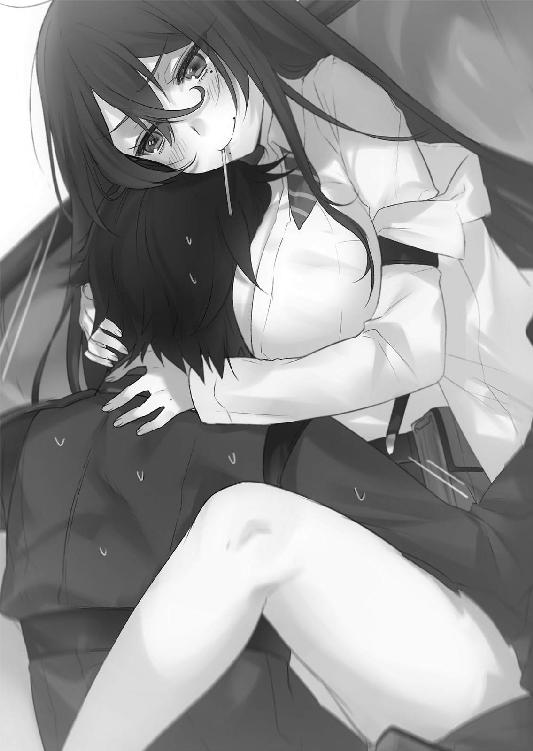

| 対魔導学園35試験小隊 2.魔女争奪戦<対魔導学園35試験小隊> (富士見ファンタジア文庫) | |
| 柳実 冬貴 | |
| (2012) | |

対魔導学園35試験小隊
２.魔女争奪戦
柳実冬貴

富士見ファンタジア文庫
本作品の全部または一部を無断で複製、転載、配信、送信したり、ホームページ上に転載することを禁止します。また、本作品の内容を無断で改変、改ざん等を行うことも禁止します。
本作品購入時にご承諾いただいた規約により、有償・無償にかかわらず本作品を第三者に譲渡することはできません。
本作品を示すサムネイルなどのイメージ画像は、再ダウンロード時に予告なく変更される場合があります。
本作品は縦書きでレイアウトされています。
また、ご覧になるリーディングシステムにより、表示の差が認められることがあります。
口絵・本文イラスト 切符
プロローグ
「──許さない......！」
二階堂マリは、憔悴しきった意識に鞭を打ち、殺意を前方に定めた。
ここは郊外の朽ち果てた廃屋。魔女狩り戦争後の宗教規制の煽りを受けて、廃墟と化した教会だった。
ステンドグラスの下、埃の積もった主祭壇の前で、本を片手に佇む青年がいた。
死霊術師ホーンテッド。幻想教団幹部。死霊術師であると同時に、錬金術師であり、召喚師であり、教会の元神父でもある、Ｓ級危険指定の歴とした魔法使いだ。
「許さないって、何がですか？ マリさん」
薄気味の悪い笑みを浮かべる彼に、マリは激怒して髪を逆立てる。
マリの体内からあふれ出た魔力が、周囲の椅子や燭台を震動させた。
「あんたは約束を守らなかった......私に嘘を吐いた！ 罪の無い一般人を巻き込まない、それが私の協力を得る条件だったはずでしょう!?」
ホーンテッドが本を閉じ、後ろに手を組んでマリに向かって歩き出す。
その歩みは不気味で、ヒタヒタと近づいてくる幽鬼のようで薄ら寒い。
「嘘なんて吐いてませんよ。この世界に、罪の無い一般人なんて存在しないですから」
とんでもない屁理屈を吐き出して、ホーンテッドは極上の笑みを浮かべる。
「それに、たくさん観客がいないとつまらないでしょう？ 英雄召喚ですよ？ 偉人さんですよ？ 遠路遥々黄泉の国からお招きしたっていうのに、観客が審問会の人間だけっていうのは、味気なさすぎるじゃないですか。僕の思惑通り、すごく盛り上がったでしょう？ 素敵な阿鼻叫喚でした。あの芳しい響きは、なかなか忘れられそうにありません」
ホーンテッドは身を捩らせて歓喜に震えた。
身体を痙攣させ、熱い息を吐き、定まらない視線を彷徨わせながら、英雄テロをしかけた時の、人々の悲鳴を思い出す。
ホーンテッドは頬に涙を伝わせた。
「......今思い出してもたまらない。なんという感情の発露。あれこそが人間です。あなたもそう思うでしょう!? 生と死の狭間で輝く一瞬の煌めき......っ、雑踏もいいですが、やはり素晴らしきは断末魔！ 何より──」
恍惚に涙するホーンテッド。その姿は、狂人と呼ぶに相応しかった。
マリの瞳が深紅の色に染まり、魔力が爆発する。周りの椅子や燭台は弾け飛び、壁や柱には一瞬で皹が走った。
「僕はあなたのその表情が見たかった！ ああっ、いいですねそうですそういうのが見たかった！ あなたにはその表情がとっても似合いますよ！」
身悶えする男を前にして、マリは目を閉じ、そして己の中で判決を下す。
この男を少しでも信じたのが、そもそもの間違いだった。
この男は生かしておいてはならない。この男は全てにおいて害悪だ。
故に到達する結論は一つだけ。
消滅。細胞の一片すらも残さぬ究極の終わりを与えなければ。
「──ふっざけんじゃねぇ！」
瞬間、マリの周辺に魔法陣が出現する。
マリの魔法陣は形容し難い色をしていた。強いて言うならば、流動する七色。
それはまさに、極北の空に映る幻影のようだった。
脳内で練り込まれた術式を己の中の体内幻器にぶち込むイメージにより、魔力が体内からあふれ出る。
瞬間、マリの魔法が発動し、半径二メートルほどの太さのレーザーが、ホーンテッドに襲いかかった。
光はまるで雲の裂け目から降り注ぐ柱のように、ホーンテッドを飲み込んだ。
光の柱は教会の壁をかき消し、空に伸びて消えた。
マリは膝に手をつき、荒い息を吐く。
「......くそ」
悪態をついたのは、自分の攻撃が失敗したことを、肉眼で確認したからだ。
土煙があがる半壊した教会に、月明かりを浴びて、ホーンテッドが健在していた。
身体の周りに、黒々とした障壁を展開しながら、ニィ、とホーンテッドは口元を歪める。
「──絶望の庭」
告げられる魔法名。直後、マリの足下に黒い影が出現し、その中から漆黒の茨が飛び出してきた。茨は瞬時にマリの身体に巻き付き、彼女を拘束した。
契約召喚魔法《絶望の庭》は、彼の意思によって蠢く茨と沼の魔法生物の集合体だ。本来は《絶望の花》と呼ばれる単一の魔法であり、危険性はたいしたことはないが、集合体として召喚すれば脅威となる。魔法生物の集合体の召喚は、魔力量が規格外な魔女・魔法使いにしかできない芸当だった。
「こんな場所で攻撃魔法を使うなんて感心しませんね。仮にもあなたは僕と同じ古代属性保持者なんですよ。もっと分別をもって魔法を使用しなくては、下手をすれば街が消し飛んでしまいます」
思ってもいない説教を垂れて、ホーンテッドは神父服についた汚れを手で払う。
「詠唱と魔法名を告げずに、あれほどの破壊力を維持できるとは、さすが極光の魔女と言うべきでしょうか」
「............」
「跳ねっ返りなのはあなたの魅力の一つだとは思いますが、いいんですか？ 僕への攻撃は即ち、幻想教団全体への裏切りです。こちらで保護したあなたの家族......施設の子供達が無事では済まされませんよ？」
ホーンテッドの脅迫じみた物言いに、マリはギチリと歯ぎしりをして、全身の力を抜いた。
「素直なマリさんが僕は好きですよ。たまに暴走するのも、愛らしくて好きですけどね」
「......っ」
「さきほどの攻撃には目を瞑ります。さあ、一緒に本部に帰りましょう」
ステンドグラスの割れ目から降り注ぐ光を浴びて、ホーンテッドがマリに手を差し出してくる。
マリを拘束していた茨が灰と化し、解放されたマリはうなだれたまま、よろよろとホーンテッドの手を取ろうとした。
が、ぴくりとホーンテッドの指先が震えた。
「......申しわけありません。どうやら、お客様のようです」
いきなりそんなことを言われ、マリが何事かと思考を巡らせていると、突然背後のドアが勢いよく蹴破られた。
「異端審問官だ！ 頭の後ろに手をおいて跪け！」
振り返ると、異端審問官男女二名が、ライフルを構えている。
いや、よく見れば制服が違う。この二人は、対魔導学園の試験小隊だ。
マリは戦慄した。ホーンテッドはこの二人を見逃しはしない。
「──逃げて！」
床を蹴ろうとしたが、足に茨が絡みつき、その場に転倒。
直後、絶望が始まる。
......ズギゅル......
水気を帯びたナニカが蠢いたかと思えば、教会内部が漆黒に染まり、床、天井、壁の全てから、茨が一斉に飛び出した。その茨は迷うことなく、学生に襲いかかる。
「うわっ、なんっ──ぐぉぇっ！」
少年に、茨が一気に肌が見えなくなるほど絡みついた。
「い、いや......なに、これ......！」
その光景を見て怯える少女。彼女は異形を前にして、一歩一歩後ずさった。
されど、行く先に三歩目を踏み出した時、蠢く影が少女の足を捕らえた。
「きゃあああああッ！」
足を取られ、転倒する。影は、底なし沼のように少女を飲み込んでいく。
「た、たすけ──い、痛ッ......？ やだっ、中に何かいる！──痛い痛い痛い痛い！ 助けて！ 誰か、痛い痛──ぃ──」
悲痛な悲鳴は途切れ、少女は完全に沼に飲み込まれた。
マリは我に返り、足の茨を引きちぎって、拘束された少年に走った。
少年はすでに、茨の締め付けによって肉をずたずたに引き裂かれていた。
茨は、苦しみを与えるために、あえてゆっくりと少年に食い込んでいく。
「動かないで！ 動かれるとあたしの魔力が流せない！」
「ほ、ほどいて......棘が......ごぼっ......に......」
「助ける！ 助けるからじっとして！」
マリは茨を処理しようとする。しかし、それぞれが別個体であるのか、連動しておらず魔力による拒絶反応が引き起こせるのは一本ずつだった。
「ちくしょ......！ こんな、こんなの！」
誤って少年に魔力を流し込んでしまえば、彼の身体が拒絶反応で壊れてしまう。
魔法生物を嫌がらせるために練り込んだ魔力など、人間に流せばひとたまりもない。
一本ずつ、必死に茨を引きはがす。
「無駄ですよ。この庭の植物は、今までため込んだ魔力が尽きるまで延々増殖します。たとえ僕が死んでもね」
ホーンテッドが冷ややかに、主祭壇の上に座りながら笑いかける。
茨はすでに肉を裂き、骨にまで到達していた。
マリはそれでも、ひたすらに少年を救おうとする。
ホーンテッドは、やれやれと首を振った。
「あなたの魔法への思いは......失礼ですが夢物語だ。正しさで言えば、まだ異端審問会の認識のほうが近い」
「くそっ！ くそっ、ちくしょ......！」
「『魔法は人を幸せにするためにある』......でしたっけ？ 残念ですが、それは誤りと言わざるを得ない」
「あっ......ああっ」
「──元来、魔法とはこういうものだ」
ホーンテッドがそう告げた直後、マリの目の前で少年が完全に引き裂かれた。
血と臓物が飛び散り、マリを汚す。マリはただ呆然と、そこに立ち尽くすしかなかった。
手の平を汚す少年の血を見て、マリの瞳から涙が零れる。
意気消沈したマリは、その場に膝をついた。
同時に、再び教会のドアが開かれた。差し込む眩しい光。攻撃的な照明の数々。
そして、こちらに銃口を向ける、複数の人影。
「──異端審問官『魔女狩り』だ。貴様を殺人の現行犯で逮捕する」
「............」
「尚、貴様に黙秘権は無い。弁護士を雇う権利もない。これより、全ての人権は剥奪される」
マリは後ろを振り返り、主祭壇を見る。
すでにそこには、ホーンテッドの姿は無かった。
もはや、マリには抵抗する気力もなければ、意思も残されてはいない。
銃口を頭に突きつけられ、手錠をかけられ、無理矢理立たされた。
終わった。このまま審問官によって最奥監獄へと投獄されてしまうのだろう。
そう思った時、自分のポケットに入れてある財布の中で、何かが熱を持つのを感じた。
普通の熱ではない。魔力的な熱だ。
「──これ、って」
手錠に繋がれながら、マリは戦慄する。
（──まずい！）
咄嗟に自分の頭の中に防壁を張るが、少しばかり遅かった。
パチン──！
頭の中で、何かが切れるような音がして、マリはその場に倒れた。
「おい貴様！ 何をしている!? おい！ どうした!?」
薄れていく意識の中で、審問官の声がガンガンと響く。
マリは、自分の頭の中から記憶が失われていくのを感じながら、静かに目を閉じた。
第一章 記憶喪失の魔女
対魔導学園最深部、禁忌区域最奥監獄は、学園の暗部である。
地上の罪の無い魔女が仮設住宅で生活している区域とは違い、最奥監獄には重犯罪者達が投獄されている。施設には、魔法を使わせないためのあらゆる手段が用いられており、重犯罪者には反人道的とも取れる処置が施されていた。
「いつ来ても辛気くさい場所だねぇ......鐵君もそうは思わないかい？」
最奥監獄の薄暗い通路を歩きながら、対魔導学園理事長、鳳颯月は横を歩く男に尋ねた。
漆黒の制服に身を包むその男の胸には、異端審問官であることを示す刺繍が施されていた。対魔導を象徴する、魔法陣が十字に切り裂かれたような、独特なエンブレム。さらにその隣には、首の無い騎士が描かれた、黒い部隊章。
黒は、対魔導捜査一課第零殲滅機動隊、通称『エグゼ』を意味する。エグゼとは、対魔導兵器であるレリックイーターを所持する者達で構成された、特殊部隊のことだ。
「自分は慣れていますので」
男は、淡々と答えた。
彼の名前は鐵隼人。エグゼの隊長を担っている、事実上、魔女狩りで一番の実力者だ。
颯月は隼人のそっけない態度を尻目に、周りを見回す。
通路の壁には、まるで棺桶を模したような機械仕掛けの装置がいくつも並んでおり、ガラス張りの覗き窓のような箇所から、青白い光が漏れだしていた。
「まるで墓場じゃないか。こんな場所に慣れてしまう君は、素晴らしい神経の持ち主だと賞賛しないでもないよ」
「恐縮です。が、この施設をお作りになったのは、会長だと聞き及んでおります」
「作るように指示したのは私だけど、こんなに不気味にしろとは言ってないよ」
颯月が不満を口にしながら、棺桶を間近で見やる。
覗き窓から棺桶の中を見れば、そこには人が眠っていた。
この最奥監獄にずらりと並ぶ棺桶のような装置は、鉄の処女と呼ばれる魔女・魔法使いを封印するための独房だ。
危険度の高い魔女の場合、通常の抗魔素材を用いた牢屋では不十分であり、覚醒状態で拘束するのが難しいため、この装置が作られた。
中に封印された魔女は強制的に仮死状態となり、夢すらも見ることができない。
近年では魔女の魔力を抑制する首輪型の装置も存在するが、コストパフォーマンスが悪いため、強力な力を持つ魔女はこうして眠らせておく他無いのである。
「それで？ 例の女の子の様子はどうだい？」
「捕縛時の昏倒の後、記憶のほとんどを喪失したようです」
「記憶喪失......面倒だなぁ」
「呪符の忘却魔法による情報漏洩防止を狙ったものと思われます。時が経てば記憶の回復が始まると、薬師は診断しています」
「彼女の正体は、わかったのかい？」
問われると、隼人は視線だけを颯月に向けた。
「名前は二階堂マリ。古代属性保持者、三年ほど前から指名手配中の『極光の魔女』本人で間違いないかと」
「例の不殺の魔女かい？ 地位的には微妙なところだが、魔女としての実力は確かだな。確か、前に捕縛した幻想教団の下っ端の脳から、いくつか情報が引き出せていたね」
「ええ。境界線の児童養護施設出身であることや、彼女が幻想教団に協力せざるを得なかった動機までは、すでに調査済みです」
颯月はニヤリと笑う。
「自爆用じゃなくて忘却用の呪符だったことは気がかりだが、奴らの上が隠蔽に失敗したと知れば......やっぱり攻めてくるかな？ 彼女を殺すか、取り戻すために」
「可能性は充分かと」
「だったら、忘却の効果が切れるまで、利用のしがいがありそうだな」
「......と言いますと？」
「幻想教団が大規模な活動を起こしたことなんて滅多に無いからね。先月の英雄テロのようなことは、滅多にしてこない連中だし、情報源は少しでも多い方がいい。大物がくるのも雑魚が大量にやってきてくれるのも、どっちも大歓迎だ」
「......わかりかねます。会長は、いったい何を」
「わかんないのかい？ 釣りの話だよ」
そう言って、颯月は釣り竿をキャストするジェスチャーをしてみせた。
隼人は目を細め、颯月の意を理解した。
二人がしばらく道を行くと、やがて終点が訪れる。
終点には、他のものと違う十字の形をした鉄の処女が一体置かれていた。覗き窓からは青白い光ではなく、赤い光が漏れだしている。
その鉄の処女の周りでは、鍛冶師らしき白衣を着た者達が計器の調整を行っていた。
颯月は手を上げて、忙しなく動く彼らに告げる。
「ロックを解除して、鎖も外してくれたまえ」
白衣達が顔を見合わせ、「よろしいのですか？」と問うてくる。
颯月が早くしろと手を振ると、白衣達は棺桶の両サイドに設置された四つのレバーに手をかけた。
金属の擦れ合う音と、激しい蒸気が吐き出され、視界を覆う。
鉄の処女の扉が開放され、中からあふれ出た蒸気が地を這った。
中にいたのは年端もいかない、少女だった。
少女は、裸同然の状態で夥しい数の鎖で繋がれており、鍛冶師達がその鎖を一本一本パージしていく。
全ての拘束を解かれた少女は、床にたたきつけられると、短くうめき声を上げた。
その拍子に少女が目を開ける。その瞳に最初に映ったのは、恐怖と焦りだ。
自分の状況を理解できず、困惑している様子だった。
「なっ、なにこれ!? どうなってんの!? なんで、あたし裸......？ あんた誰!?」
何も覚えていないのか、少女は震えながら、目の前に立つ颯月を見上げた。
颯月は、にっこりと微笑み、裸の彼女に自分の白いコートを被せ、肌を隠してやった。
そして、記憶を失った魔女──二階堂マリに、颯月はこう告げる。
「やあ、対魔導学園へようこそ！ 二階堂マリ君、君の入学を歓迎するよ！」
マリは、意味が全くわからずに、ただひたすら首を傾げるだけだった。
「えー、あー、術式と魔法陣と詠唱の関係については、前にも話したと思うが、深い関連性がある......えー、まず術式というのは、効果的に魔力を魔法に変換するためにもっとも重要な、いわばプログラムのようなものであり......」
眠気を誘う教師の声。術式学の授業は、いつだって教室内が静まりかえり、たとえ成績優秀な生徒であっても睡魔に撃沈してしまうことのほうが多い。
のだが、最近はどうにも状況が異なっていた。
妙に教室内が騒がしい。教師の声だけでなく、ヒソヒソと囁く声が響いている。
「あの噂、本当なのかしらね？」
「英雄を倒したのは雑魚小隊ってやつか？ 俺は信じないね」
「でも実際に見た奴が結構多いって話だぜ。もっとも、ほとんど学園を辞めちまったみたいだけど。ふぬけどもめ」
「あんたはあの戦いに参加してなかったくせに何言ってんの。魔女狩りも出動してなかったし、騎士団は壊滅状態。誰が英雄を倒したのか気になるわよねぇ」
「なんか、紫色だか青色だかの鎧騎士みたいのが倒したって話もあるよな」
「だはは、恐怖で幻覚でも見たんじゃねぇのそれ」
「その鎧騎士みたいなやつが、雑魚小隊の隊長にそっくりだったって話も」
「あー俺もそれ聞いたことあるわ。レリックイーターの一種かもしれないんだろ？」
「じゃあ、あいつ魔女狩りってことか？ しかもレリックイーター所持の？」
「何それ笑える。だって、あの人、銃がまともに使えないんでしょ？ 剣でどうやって英雄を倒したっていうのよ、バカバカしい」
生徒達が一斉にタケルを見やる。
タケルは所在なさそうに教室の真ん中の席で、縮こまっていた。こういう注目のされ方は初めてだったし、正直あまりいい気はしない。いっそ噂の大半が事実であると告げてしまえば、少なくとも疑いの眼差しのようなものは向けられないはずである。
実際は、それもままならない。
理事長から、タケルがレリックイーターの契約者であることは、外部に漏らしてはいけないと念を押されたのだ。今のタケルは学生であると同時に、臨時の魔女狩りとして審問会から扱われているため、このあたりの規律は守らなければならない。
「でも実際、草薙の周辺の変化はめまぐるしいものがあるな」
「確かに、鳳桜花に続いて......あの子だろ？」
「な？ 絶対あれ兄妹じゃないって。全く似てねぇし」
「義妹にしても変な話よね......謎だわ......気がつくといなくなったかと思えば、気がつくと草薙君のそばにいるし」
生徒達の視線がタケルから外れて、彼の真横に移る。
真横の席。本来なら生徒同士の机は一メートル間隔程度に離れているはずなのだが、その席だけは、タケルの席とぴったりくっついている。
明らかにおかしい配置だ。タケルの心情がままならないのは周りの視線だけでなく、その奇妙な隣人のせいでもあった。
タケルがしかめっ面をしていると、不意にくいくいと服を引っ張られた。
実に控えめな引力だった。
加えて、
「......お兄ちゃん」
お兄ちゃん......と声をかけられて、タケルはやむを得ず首を向けた。
瑠璃色の瞳に、瑠璃色の髪。瑠璃色のドレスを着た少女が、真横に鎮座している。
「質問があります、お兄ちゃん」
彼女の名前はラピスラズリ。今月から、一応第四学園の転校生という名目でタケルと同じクラスになった。
彼女の正体は、人間ではない。先月の英雄襲撃事件の最中にタケルと契約した、レリックイーターシリーズの一つだ。正確な本名は《The Malleus Maleficarum Type-Twilight "Mistilteinn"》と言う。強力な魔導遺産が意思を持ち、人型を取ることは過去の記録に記されているものの、現代にはほとんど残存していないため、非常に貴重な存在として扱われている。
それ以外の詳細は一切不明。契約したタケル本人も、理事長、鳳颯月から極秘ということで何も教えられなかった。
そんな不可解な存在がタケルの正式な得物になったわけだが......。
問題なのは、ラピスの口走った『お兄ちゃん』という呼び方だった。
話はひと月前に遡る。
『レリックイーターの中でも、ミスティルテインは特殊でね。基本的に契約者のそばにいたがるんだ』
『......はあ』
『だから、かなりの割合で君の日常に入り込むことになる。あの子は人型になるのが好きでね。だから一般生徒を混乱させないように、一応転入生として君と同じクラスに入れるんで、そこらへんは把握しておいてね。あと、『魔女狩り化』した君の姿を見た生徒は少なからずいると思うから、そのへんは何を聞かれても黙っておくように。一応ね、部外秘ってことになってるから、建て前だけど』
『......それはまあ、了解です』
『ラピスの偽名や偽の戸籍も用意したんだよ。これね。一応目を通しておいて』
そう言って、颯月はタケルに紙切れを渡した。
不思議そうに首を傾げながら、タケルは紙切れに視線を落とす。
顔写真を見て、次に名前。
草薙ラピス。
『──っておいッ！』
『ハッハッハ！ 語呂悪いのは勘弁な！』
『待ってくださいよ！ いくらなんでもこんなの通るわけないでしょう!?』
『常にべったりだと勘違いされて困るだろう？ 兄妹なら体裁も立つじゃないか。それともなに、不満？ 姉がよかったかね？』
『不満とかそういう問題じゃないでしょう！ だいたい俺には妹がすでにいるんですよ！』
『妹は何人いたっていいものだろう。うらやましいぞ、このぅ』
『何言ってんだあんた!?』
『これはもう決まったことだから。ラピスのことは今後、妹として人前では扱うように』
『いや......そんっ......はぁ!?』
『がんばってくれたまえ。義妹だから多少過激なスキンシップも許容されるよ。やったなお兄ちゃん。ＨＡＨＡＨＡこのドスケベ』
...............。
（やったなお兄ちゃんじゃねぇよ！ あの腐れ理事長ッ......！）
正直、いきなり他人が妹になるなどという状況は願い下げだった。しかもあの腐れ理事長は、何をちゃっかりラピスに「お兄ちゃん」と呼ぶことを強要しているのか。
だいたいタケルには本物の妹が一人いるのだ。事情があってなかなか会うことはできないが、斑鳩が彼を「シスコン」と評するほどに、タケルはその妹のことを溺愛している。故に、タケルにとってはこの展開は実に腑に落ちない。
ただ一つ重要なことは、もしもタケルが彼女との契約を解除した場合、死が待っているということだ。タケルの上半身と下半身は、ラピスの魔力によって無理矢理接合されているため、解除すれば元の死体に逆戻り。
タケルは颯月やラピスには逆らえない立場に置かれている。
だから今回のラピスの質問にも、答えなければならない。
たとえこれが、今日一日で一〇四回目の質問であったとしても。
「......し、質問？ なに、かな」
「術式学とは、どういう意図で必修科目に含まれているのでありますか？」
俺に聞くなよ、と言いたくもなるが、タケルはぐっと堪える。
「えと......捜査の上で魔法の痕跡を調べるのに必要だって......言われてるな。アナ......なんだっけな......なんとかフィルター？ っていう機械を通して事件現場を調べると、魔法陣の跡とか、魔力の残留が確認できる？ そのサンプルを採取して、さらに強力なフィルターを通すと、どういった術式で魔法が使用されたのかわかる......とかなんとか」
「なるほど。確かに、術式がわかれば使用された魔法も判明しますし、治療のための抗魔物質の選別に役立ちます」
納得です、とラピスは単調に言う。
これで質問は終わりだと、本来ならホッとするところだが、そうもいかない。
じ─────......。
いくら質問に答えようとも、ラピスはタケルを見つめることをやめない。授業中も、食事時も、一緒にいるときはいつもこうしてじっと見つめてくるのだ。
タケルは、ラピスがとても苦手だった。
いつの間にかいなくなったかと思えば、気がつくとそばにいたり、正直ちょっとだけ不気味なのである。特に彼女の瞳が苦手だった。まるで何も見えない深海のように、吸い込まれそうになってしまうからだ。
「......お兄ちゃん」
「？」
「どうして私を見る時に、お兄ちゃんは苦しそうな顔をするのですか？」
「!? そ、そんなことないぞ」
「そうでしょうか。先ほどから私が声をかけた時のみ、心拍数の増加と体温の上昇が見られます。体調が悪いのでしたら、遠慮無くおっしゃってください」
「大丈夫だってっ」
じ────────────......。
顔を近づけてくる。
タケルとの距離、わずか一〇センチ。傍から見ればキスをしようとしているようにしか見えない。
「そうですか。それならば............いいのですが」
言いながらもさらにずずいと顔を近づける。
もう距離三センチ。タケルの視線はラピスの瞳に捕まってしまったので離せない。
周りの生徒も何故かドキドキしながら、その光景を見届けようとしていた。
が、
「せ、せせせせ席替えを──要求しますわ！」
突然、前の席の少女が立ち上がってそんなことを宣言した。
小さい背丈とセミロングなブロンドヘアー。トレードマークは頭につけられたウサギ耳のようなカチューシャ。
タケルと同じ雑魚小隊の隊員、西園寺うさぎだ。本当ならばタケルとうさぎは別のクラスだったのだが、犠牲者や退学者が多く出たことから、大規模なクラス替えが行われたのである。このクラス替えにより、三五試験小隊の面々は全員同じクラスになっていた。
うさぎの宣言により、当然教室内はざわめいた。あがり症で人前に出るのが苦手なうさぎが、いきなり意味不明な席替え要請。彼女は普段ならば絶対にこんなことしない。
うさぎは顔を真っ赤にして、肩で息をしながらぷるぷる震えている。
術式学の担当教師は、ほのぼのした顔をうさぎに向けた。
「んあー、西園寺。どうして席替えなんだ？ 今は術式学の授業中であって......」
「え、あ、うと......草薙ラピス......さんは、草薙と兄妹ですし、兄妹で隣の席というのはおかしいではありませんかっ」
「？ おかしいのかね？」
「お、お、おかしいというか──不健全です！」
............。
（な、なんでだよ......）
意味不明な席替えの動機に、教室内が静まりかえる。
しかし、タケルの疑問とは裏腹に、皆の視線は何故かタケルに向いていた。コソコソと「不健全なのか」「そうなのか」「そうだと思った」「シスコンか」「雰囲気おかしいと思ったわ」などなど、何故か侮蔑の囁きがタケルに向けられていた。
（なんでだよ!?）
タケルは理不尽な皆の反応に涙が出そうになった。女子群からの軽蔑の眼差しも痛いが、男子群からの嫉妬の眼差しは凄まじい。
鳳桜花という完璧超人まで入隊した上に、さらに追い打ちをかけるようにラピスの存在だ。火に油である。
だが、よくよく考えると席替えというのはいい案だ。
幸い、教師も現状が大変面倒くさくなったのか、席替えの方向で検討しているようだ。
このまま行けば、この絶妙に気まずい局面から脱出でき──
「──嫌です」
ラピスが無表情のまま、タケルの腕にしがみついてくる。
「お兄ちゃんは私と繋がっていなければ存在を維持できないのです。私とお兄ちゃんの別離は、お兄ちゃんの死を意味します」
............。
おかしい。正しいのに、ニュアンスがおかしい。
「お兄ちゃんは私のもので、私はお兄ちゃんのものなのです」
言っていることは間違ってはいない。
間違ってはいないが、そんなものは関係者以外知るよしもない。
「つ、繋がってるって......うそ、やだ」「兄妹でかっ」「離れたら死ぬってくらいに愛してるのか」「クズめ。自害しろ」「あのエロゲー野郎」
そんな言葉が飛び交った。タケルはもう、しくしく涙を流すしかない。ラピスは不思議そうに首を傾げるだけだし、うさぎは顔を真っ赤にして口をパクパクさせている。
この空間にタケルの味方はいない。
そう思い始めた時、
「──先生」
背後で、誰かが椅子を引いて立ち上がる音がした。
振り向くとそこには、夕焼け色の髪をした少女。
鳳桜花が立っていた。
「私も席替えを推奨します」
桜花の視線が、タケルに向く。
彼女の眼差しは、やはり軽蔑の色を含んでいた。
「兄妹が隣の席という以前に、授業にこれだけ席を近づけて挑むのはおかしいかと。それに何より、目の前でイチャつかれると気が散ります。せめて机の間隔を離すように指導してください」
うさぎと違い、理由はまともだった。
が、視線が怖い。殺意に近い。このオーラは雑魚小隊の桜花さんではなく、魔女狩りの《紅蓮姫》さんだ。
何故お前が俺に怒る。事情を全て知ってるくせに何故怒る。
ジェスチャーで弁明しようとするも、桜花はぷいっと横を向いたまま殺意の波動を放ち続けていた。桜花に伸ばした手を空中に彷徨わせてから、タケルは肩を落とす。
腕を見れば、いまだにラピスがしがみついていた。
ギュッと腕を組み、全くの無表情でじっと見つめてくる。
相変わらず感情が読み取れず、人形にでも掴まれているようだ。
ただ体温だけは何故かやけに温かい。
（......これが......孤独、か）
大衆の中での孤独はいままで散々経験してきたが、こういう村八分的な孤独は初めてだった。思いの外、心が寒かった。
死者四〇名。行方不明者五名。負傷者七五名。校舎などの建物、五棟が崩壊。自主退学者二七名。
以上が、一か月前の英雄テロの学園が被った損害である。街全体の規模で考えたならば、被害はこの数を遥かに上回る。
事件はテレビでも大々的に放送され、これほどの被害が出たのは実に数十年ぶりだと騒がれた。平和ボケしていた市民に衝撃を与えたのは、言うまでも無い。
これにより異端審問会の地位は多少、揺らぎはした。騎士団の警備の薄さ、審問会上層部の危機管理の無さが、事件直後は各所から問題視された。
だが、隠密の速やかなメディア操作により、被害者数などの損害情報は隠蔽され、正しく放送されることはなかった。それどころか、魔女狩り戦争に使用された英雄召喚魔法を相手にして、これだけの被害に抑えられたのは奇跡だと、審問会を賞賛するような放送が為されたのだ。
事態は予想外にも早々に収束した。
襲撃からわずか一週間で授業は再開され、小隊活動も平常運転。
驚くべきことに、学園にはもう前の日常が戻りつつあった。
一限目の術式学の授業が終わり、雑魚小隊メンバーは教室の端でたむろしていた。
「......あのぉ」
タケルはメンバーに気弱に声をかけた。すでに険悪な空気が漂っている。
桜花は据え置き型の冷房に背を預けて立っており、うさぎは肘を机についてそっぽを向いている。斑鳩はそんな二人を眺めながらひたすらにニヤニヤしていた。
せっかく協力して英雄を撃退し、多少の結束が得られたかと思えば、もうバラバラだ。
「......確かにわたくしは鳳桜花の入隊は渋々、辛うじて、仕方なく認めましたけども......あんなオマケがついてくるなんて聞いていませんでしてよ」
やさぐれた様子で、うさぎが言った。
「私もまさか人型になれるとは知らなかったのだ。事前に聞いていれば、馬鹿義父に抗議くらいしている。レリックイーターを人前に晒すなど......ありえない。規則違反だ」
桜花も眉間に皺を寄せて唸っていた。
斑鳩は、だらしなく椅子に背を預けながら、首を反らしてタケルを見た。
「......来たわね、ハーレム野郎」
斑鳩をスルーして、誰のかもわからない椅子を持ってきて、三人のそばに座る。
「ハーレムって......表向きと内情が異なる典型だろうが、この状況」
「そう？ 普通の男から見たら至極うらやましい状況だと思うけど？」
「常にひっつかれて見つめられるこっちの身にも......」
そこまで言ったところで、背後からテコテコと近づいてくる音がする。
振り向けば、椅子を運んできたラピスが、歩きづらそうにやってきていた。ラピスはずっこけそうになりながらも、タケルの横までたどり着くと、静かに彼の真横に椅子を置く。
そして......ちょこんと椅子に腰を下ろし、ぴとっと彼にひっついた。
「............なれよ」
ガクッと肩を落として、タケルがうなだれる。
「本当は内心嬉しいのではなくて......？ 草薙はなんだかんだでむっつりですからねぇ？おに～～～～ちゃん」
「お兄ちゃんって言うな！ 嬉しいとか嬉しくないとか、そういう問題じゃねぇ。というか、なんで俺がそこまで責められなきゃなんないんだ？ 俺なんかしたの？」
「わたくし達に断りもなくレリックイーターと契約したのはよしとしましょう......命が関わっていたんですし。でもその子はなんなんですのっ？ 大人しく剣でいるように言ってくださいな。気が散りますし、なんか気に入りません。あなた所有者なんですよね？」
やはりというか、うさぎの動機には説得力が皆無だった。
「その点に関してはまったくもって同感だ。魔導の産物と連れ添って歩くなど、私はごめんだ。草薙も、あまり馴れ合っていると毒されるぞ。まったく......嘆かわしい」
桜花は持ち前の魔導アレルギー全開のご様子で、ラピスへの嫌悪感を惜しげもなくあらわにしている。
タケルとしては、別にラピスが嫌いというわけではない。苦手ではあるが、武器としては一流だし、魔導遺産に対しては危険視こそすれど嫌悪感は抱いていない。妙に懐いてくるのも可愛いとは思う。
しかし、周りの目は辛辣だ。あらぬ勘違いを抱かれては、タケルとしても居心地が悪くなる。だからと言って離れろと押しのけるのも、気が引けるというか......。
タケルは腕にしがみついたままのラピスを見る。
ラピスは、タケルに気づくと、微かに首を傾げて見つめ返してきた。
こうして改めて見つめられてみると、人目が無ければ......。
（......そこまで、嫌ではないか）
ほどよく頭を撫でてあげたい。そんな気持ちになる。
タケルは気を抜いたせいで、ほっこりとした顔をしてしまった。
「──はッ!?」
気がつけば、うさぎと桜花から、鋭い視線で睨まれている。
「ち、違うっ。抱きつかれるのが嬉しいわけじゃないっ。俺はただ、あんまり邪険にするのもかわいそうかなって！」
「「............」」
「だいたいこの子、俺が言ったって聞かないんだよ！」
手をわたわたさせながら弁明しようとするも、単なる擁護と見られて二人の視線がますます鋭くなっていく。
あまりの威圧感に、タケルが椅子ごとずりずりと後ずさる。
「まったくあんた達、素直になりなさいよねぇ。簡単なことじゃないこんなの......こうやって──」
横でニヤニヤ見ていた斑鳩が、急に立ち上がってタケルの真横に来る。
そして、むぎゅっと大きな胸にタケルを抱きしめた。それどころか、足までタケルの下半身に絡みつけてくる。
「杉波さん!? 杉波さん!?!?」
激しく動揺して名前しか呼べないタケル。斑鳩は艶めかしく胸部を動かしながら、さらにタケルの顔を埋めようとしてくる。
「あんた達もこうしたいだけでしょー？ こいつ、むっつりだからどうせ抵抗しないのよ。ほら、こうやって」
タケルは斑鳩の胸の谷間でもみくちゃにされる。ラピスはその光景を間近にしながら、やはり無表情。うさぎと桜花は顔を真っ赤にして、唖然としている。
あわ、あわわという感じで。
「あんっ、こらっ、あんまり動くんじゃないの......ちょ、ちょっと。ば、ばかっ！ あんたそこは──あはぁんっ」
タケルはただ離れようともがいただけだったのだが、シャツの隙間から手が滑り込んでしまったらしく、思いきり斑鳩の胸を揉んでしまった。
手から伝わるやたらと至福な感触に、焦って引き抜こうとして、タケルは気づいた。
（このデカさで──ノーブラ!?）
むっつりという斑鳩の見解が間違いではないことを証明する思考だった。
無論。それを見ていたうさぎと桜花は、一気に鬼の形相で立ち上がった。
「「～～～～！ 離れなさいこのエロおん──」」
な......と、二人が叫ぼうとした時。
突然、教室の天井に備え付けられたスピーカーが、少々のハウリングと共に鳴り響いた。全員が動きを止め、耳を傾ける。
《一学年、第三五試験小隊の生徒、至急理事長室まで来てください。繰り返します、一学年──》

呼ばれたのは三五小隊の面々だった。
タケルは斑鳩の胸の間から、何事かと顔を出した。
禁忌区域に近い場所に建設された、教職員塔。
その最上階の理事長室の前まで、タケル達はやってきた。
（俺が呼ばれるのはわかるが......なんで小隊全員なんだ？）
若干の疑問と不安を抱きつつ、タケルは理事長室の前まで足を進める。
丁度その時、理事長室から人が出てきたのが見えた。
誰だろう、とタケルが思っていると、桜花が急に足を止めた。
「？ どうした」
「......い、いや」
少々ばつの悪そうな顔をして、桜花は頬を掻いた。
「知り合いか？」
至極やりづらそうにしている桜花に首を傾げていると、理事長室から出てきた人物がこちらに顔を向けた。
「鳳桜花」
突然声をかけられて、タケルがびくりと肩を震わせる。
しかしそれ以上に、桜花が飛び上がるほどに驚きを露わにした。
眼力と威圧感の強い男だった。背丈はかなり高い。外見からして二〇代前半なのだろうが、彼の醸し出す雰囲気が、もっと年上に感じさせる。
墨のような色をした黒髪と、漆黒の制服。黒というイメージが嫌に似合う男だ。
タケルは状況を窺いつつも、こっそりと桜花に耳打ちする。
「誰だ？」
小声で問うと、桜花は微かに唇を震わせて答える。
「私が異端審問官だった頃の......直属の上司だ」
「あっ、ということは魔女狩りの」
タケルがぽんっと手を叩いた直後、男性が無表情のまま二人を見た。
「──何をこそこそ話している」
「は、ハッ！ 失礼しました！」
桜花が慌てて異端審問官独特の敬礼をする。
「敬礼は必要ない。今の貴様は学生だ」
桜花は申し訳なさそうな顔をしながら、敬礼を止めた。
桜花の直属の上司。ということは、この目の前の男性は、異端審問官『魔女狩り』の中でもかなりの実力者ということになる。
桜花が鯱張るのも無理はない。男性はその場にいた雑魚小隊の顔を一人ずつ確認していくと、静かに目を閉じて言った。
「対魔導捜査一課第零殲滅機動隊、エグゼの隊長をしている鐵隼人だ。貴様達のことは会長から聞いている。鳳が世話になっているようだな」
ギロリと睨みつけるような視線で、隼人は桜花以外の三人を見据えた。
隼人の目つきはタケル以上に悪いため、斑鳩以外の三人は恐れ多くて肩を震わせた。斑鳩は平然とミントキャンディーを咥えていた。
隼人は無言な小隊メンバーの態度をさして気にした風もなく、今度は桜花を睨む。
「で、貴様はちゃんとやっているのか？」
「あ......ぅ、そ、それは......」
「......相変わらずか。まあいい」
軽くため息を吐いたような気がしたが、それも一瞬だ。感情を表に出すことを極力避けているように見えた。
「草薙タケルというのは、どいつだ？」
「あ......はい！ お、お、俺です！」
呼ばれて、ぎこちなく一歩前へ出る。
隼人はタケルを、じっくりと観察した。
ひとしきり観察した後、目を瞑り、ぽんとタケルの頭に手を置いた。
「鳳のことをよろしく頼む」
「は、はい？」
それだけ言って、隼人は踵を返し、その場から去って行った。
少なからず、第一印象とのギャップを感じる。主語が抜けているせいで話の意図が読めないが、単に口べたなだけな印象も受ける。
思いの外、頭に置かれた手は温かかった。
「いまいち掴めない人だったな。悪い人ではなさそうだけど......鳳は詳しいのか？」
尋ねると、桜花は壁に手を当ててハァァァと深く安堵のため息を吐いていた。
「......あのぅ、鳳さん？」
「わ、私は、鐵隊長には頭が上がらんのだ。問題児だった私を、何かと擁護してくれて」
「へぇー、なんだ、いい人なんじゃないか」
「それは、どうだろうか。プライベートのことはわからない。私はぶっ飛ばされてばかりだったから......いや自業自得なんだが......恐ろしいというイメージがやはり先に立つ」
「ぶ、ぶっ飛ばされたって......マジで？」
「男女平等が、鐵隊長の信念らしい」
桜花は青い顔でプルプル震えていた。
こんなに怯えている桜花を見るのは初めてだった。あまり触れない方がいいと判断したタケルは、早々に気持ちを切り替えて、理事長室の扉をノックした。
「入っちゃって入っちゃって～」
扉の中から聞こえてきた妙にフレンドリーな声に、若干イラッとしながら、タケルはドアノブを回した。
そして出迎えてくる、
「やあやあやあ、よく来てくれたね子供達！」
胡散臭さマックスな学園理事長様。毎度のことながら髪の白さと服の白さが鬱陶しいくらいに眩しい。全員、うんざりしたような顔をした。
「なんだいなんだいみんな湿気た面して！ 元気出して上を向いて歩かないと、この不況の世の中を渡っていけないよ!?」
誰のせいで湿気ているのかをまるで理解していないのか、颯月は妙なテンションでタケルの肩をバンバン叩いた。
「あの......今度は何の用なんですか？」
「おや、ずいぶんと忙しいね。やる気満々なのかい？ そういうことならさっそく本題に入ろうか」
颯月はパンと両手を叩いた。
「今回は君達に、特殊任務についてもらおうと思ってね。わざわざ二限目をサボらせてここに呼んだわけさ」
「──待ってください」
特殊任務と聞いて、タケルが颯月の言葉を遮った。
「俺が呼ばれるのはわかります。俺はレリックイーターの件で、理事長に協力すると約束しました。でも、こいつらを巻き込むのはやめてください」
はっきりと言い放ち、タケルは毅然とした態度で颯月の前に立った。
特殊任務となれば、英雄襲撃の時のような厄介事が待っているとタケルは推測する。
鳳颯月という男が信用できないのは、一か月前に身をもって知った。この男の要求には応えるつもりではいるが、仲間を巻き込むわけにはいかない。
「君の気持ちはわかる。だがね、あの戦いに関係していた以上、無関係では済まない」
「......だからって、加担させることはない」
「勘違いしてもらっては困るよ。これは私が命令したわけじゃない。そこにいる三人が望んだことなんだよ」
言われて、一瞬の間の後、驚いて後ろを向く。
背後では三人が、目を逸らして立っていた。
「お前ら......」
「わ、わたくしは出世できるチャンスだと思ったからですわよ！ 金魚の糞になるつもりはないですけど、上の人間に名前を覚えてもらうチャンスですもの！」
「私は元からレリックイーターの契約者だ。協力し合うのは当然だろう......それに、お前とは......約束が......あるだろう」
うさぎと桜花の理由はわからなくもなかった。でも、斑鳩は何故？
タケルが視線を向けると、斑鳩はキュポンとミントキャンディーを口から離した。
「暇だから？」
こいつの思考回路だけは一生わからない気がした。
「はい、ラブコメ結構。そういうわけだから、今回は小隊メンバーも一緒に特殊任務についてもらうよ」
納得はいかないが、任務内容を聞いてから仲間の参加の是非を決めても遅くはないと、タケルは渋々判断した。
と、任務内容の説明が始まるかと思いきや、颯月はくるりと後ろを向き、奥の給仕室らしき部屋へ身体を向けた。
「マリ君。入ってきなさい」
聞き覚えのない名前を、颯月が呼ぶ。
しばらくして、給仕室の扉が開いた。
現れたのは、一人の女の子だった。
真新しい学園の制服を着た少女は、不機嫌そうな態度で理事長の隣にやってきた。制服を着ているのにキャスケット帽を被り、さほど寒くはないのに首にマフラーを巻いている。
「彼女は、二階堂マリ君だ。君達には彼女の警護をしてもらいたいのだよ」
「警護......ですか？」
「ああ。ところで君達は、倫理委員会についてはご存じかな？」
「......それはまあ、少しは」
なんでまた、こんな時にそんな名前が出てくるのだろう、とタケルは思った。
倫理委員会とは、魔女裁判倫理機構（ＥＯＷＴ）のことである。
魔女の人権保護団体とも呼ばれ、審問会による不当逮捕や差別、過剰防衛などを訴え、いきすぎた魔女への扱いを抑制することが主な役割だ。
かつては審問会の権力は不動のものだったが、最近では、倫理委員会の影響力は無視できないほど大きくなっていた。
「実はこの度、倫理委員会の要求で、魔女入学制度をうちの学園で試験的に実施することになってね。知ってるかな、この制度」
タケルも、その制度については聞いたことがあった。
「ありていに言えば、魔女も異端審問官になれるという制度だよ」
颯月が口に出して説明すると、背後に控えていた桜花が一歩前へ出た。
彼女の表情は険しい。
「理事長......まさか......！」
桜花が、颯月の横に佇む二階堂マリを睨む。
颯月は、ご明察、とでも言うように、ニコリと笑った。
「うん。二階堂マリ君は、紛れもなく魔女だ」
タケルは少なからず驚いたが、桜花はさらに視線を鋭くする。
「驚きました。委員会からの要求を拒んでいたあなたが、何故突然受け入れたのですか」
「別に拒んでいたわけではないよ。捜査・兵器開発協力という形で限定的な役割を担わせるのは、悪くないと前々から思っていたんだ。それに、グレイプニルがあれば魔女だって無害なわけだし、問題ないと判断したまでだよ」
グレイプニルとは、魔女の魔力制御首輪のことだ。
この首輪は、犯罪者でない魔女のために、異端審問会が抗魔兵器開発社アルケミストと協力して開発された。グレイプニルをつけた魔女は犯罪歴が無ければ禁忌区域を出て、普通の生活を送ることができるのだ。
タケルも、グレイプニルをつけた魔女や魔法使いと呼ばれる人々を見たことがある。
差別が無くなったわけではないが、昔に比べれば遥かにマシになった。
今では普通の人間と魔女が談笑している風景なども、さほど珍しくはない。
故に、マリが魔女だと聞かされても、それほど驚きはしなかった。
「──私は反対です！」
桜花が声を荒らげて颯月に抗議する。
「異端審問会は魔女を裁くための機関ではなかったのですか!? 魔女を受け入れるなど本末転倒ではありませんか！」
「魔女を裁くのではない、悪しき魔女を裁くための組織だ。罪の無い魔女は、我々の敵として認識すべきではないね。前にも言ったけど、魔女を保護するのも我々の仕事だよ」
「わかっています！ ですが、これは保護ではないでしょう!? 魔女を異端審問官にするのは、あまりに危険すぎます！」
桜花の意見にも一理あった。
異端審問会が対魔導を理念に掲げている以上、それに徹底した姿勢を周りに誇示しなければならない。でなければ、異端審問会の存在意義が揺らぐのだ。
警察が法を犯せば、信用を失う。警察が犯罪者の力を借りれば、無能と罵られる。
レリックイーターの存在も同じく言えることだが、魔導を利用しなければ魔導に太刀打ちできないとなれば、一般市民は審問会に懐疑の念を抱くだろう。
「君の気持ちはわかるけど、こちらの方針に私情で口を挟むのはやめてほしいね」
「し、私情で言っているのではありません！」
「君が魔女に対して憎しみを抱いているのは周知の事実だ」
「......それとこれとは、話が別です......！」
「何を言おうと方針に変更はないよ。魔女に対する差別を無くすためにも、これからも受け入れていくことになるはずだ」
颯月の決断に、桜花は納得がいかないのか、下を向いて拳を握りしめていた。
「彼女がその記念すべき第一号というわけさ。マリ君、ご挨拶なさい」
ニコッと笑って、颯月が後ろで佇んでいたマリに自己紹介を促す。
マリは面倒くさそうに一歩前へ出ると、ほんのわずかに顔を上げた。
「..................ども」
実に無愛想に頭を下げて、すぐに一歩下がる。
タケルは特に何も思わなかったが、小隊メンバーから負のオーラが発せられたのを察知して、顔を引き攣らせた。
「君達には彼女の警護と世話をしてもらおうと思ってね。マリ君はうちの学園のことを何も知らないし、いろいろ助けてやってほしいんだ」
「何故我々なのですか......プロの異端審問官に頼むべきでは？」
桜花が刺々しく口を挟むと、颯月は人差し指を立てた。
「だって審問官が警護についたらみんな何事かと思うだろう？ 君達みたいに学生で、なおかつこっちの都合良く......失礼、こちらの要望に快く応えてくれそうな人材は他にいないんだよ」
ポロっと本音が出ていた。
「それとね、マリ君が魔女だということは、しばらくは内密に頼むよ。いきなり魔女が入学してきましたよ～なんて言ったら、生徒達からイジめられるかもしれないだろう？ マリ君が学園に馴染んでから、正式に発表する予定だ。それまでの間は、君達が彼女を守ってくれ」
魔女を守る。正直前代未聞の任務だった。
颯月は快活に笑ってから、タケルの背中をバンバン叩いた。
「そういうことだから！ よろしく頼むよ！ 二限目はサボって構わないから、学園を案内してやってくれたまえ」
いちいち理事長の対応が鬱陶しかったが、タケルは危険な任務を任されるものだとばかり思っていたので、拍子抜けすると同時に安堵していた。
この程度の任務ならば、小隊メンバーに危険が及ぶことはないだろう。
ようは警護とは名ばかりの、何もわからない転校生の世話係、と考えて相違ない。
誰にでもできる、簡単な任務だった。
（いや、待て）
タケルはホッとしたのも束の間、すぐに安堵を引っ込めた。
改めて考える。誰にでもできる、簡単な任務。
（......それができないのが、うちの小隊じゃなかったか？）
タケルは恐る恐る、後ろを見た。
そこには、仲良くしようという気持ちが微塵も感じられない三人が立っていた。
再び前を向き、今度はマリを見る。
「............フン」
マリは見つめてきたタケルからぷいっと視線を外して、かったるいとでも言いたげに鼻をすすっている。
誰一人として、協調性が見られない。
これはもしかして、めちゃくちゃ難しい任務なのでは？
ほぼ確定に近い予感に背筋を寒くする。
こうして、今回の雑魚小隊の特殊任務は、さっそく人間関係のもつれから始まりそうだった。
第二章 魔女、入隊
タケルとマリが学園で出会ったのと同じ頃。
教会の一件で早々にマリを置いて逃げたホーンテッドは、一晩明けると同時に対魔導学園付近の電波塔の上で校門の監視を行っていた。
先日のテロのせいなのか、学園の警備は強化されており、数機のドラグーンと多くの騎士団が配備されている。
頬を撫でる風に髪を遊ばせ、あごに手を当てて、フッとニヒルに笑う。
「...............どうしよう」
クールに決めていても、内心は結構ままならなかったらしい。
《自業自得だよ。忘却魔法の呪符じゃなくて自爆用の呪符をマリに持たせておけば、こんなことにはならなかったのに》
腰に携えた西洋剣、ダーインスレイヴが頭の中で責めるような口調で言った。
「馬鹿な。この僕にマリさんを殺すなどという選択肢は無い。そんなもったいないことができようものか......！ あの子はもっと精神的に追い詰めていじめてあげなきゃ！ お前もそう思うだろうナハト！」
《......君の性癖に同意はしかねるって、前に言わなかったっけ？》
「いやぁ教会での一件はたまらなかった。あんなに顔を赤くして......あんなに涙目になって......あんなに、声を張り上げて......っ」
《はいはい大興奮だったね》
「勃起した」
《そこまでいっちゃったか......》
「あんな顔されたら遊んであげなきゃ男じゃない。そんでどうやっても敵わないってことを思い知らせてあげてから穏やかに和解を求めてさらに悔しそうな顔をするマリさんを」
そこまで言って、ホーンテッドは我に返る。
「......とはいうものの、これはかなりまずい状況だ。マリさんが審問会に捕らえられるとは......しかしどこで足がついたのだろうな。もしかして僕のせい？」
《死体収集をちょっと派手にやりすぎたんだよ。一般人を殺してまで集めてくるバカもいたみたいだし。遺体や犯罪者が行方不明になったくらいなら隠蔽は可能だけど、一般人となると、日和見といえど審問会も動くさ。恐らく、雇った連中の中に『隠密』が潜入してたんだと、ボクは見るね》
「ふむ......さすがに放置するわけにはいかないな。僕の恋心的にも、幻想教団的にもね。ていうかもしかしたら、マリさんがいやらしい拷問とかされているやも......！ な、なんということだ！ こうしてはいられない！ これは是非とも見学にいかねば！」
《......落ち着いてってば。とりあえず上に報告したから、今後どうすべきか聞いてみようよ。さっそく通信が入ってる、繋ぐね》
頭の中の声が切り替わり、わずかなノイズの後、ため息が聞こえてくる。
《──しくじりましたね、ホーンテッド》
風鈴の音ような、よく澄んだ女性の声だった。
「いやはや返す言葉もないです。意外とやりますね！ 異端審問官！」
《笑って済むような事態ではありません。今回の作戦の全責任は貴方にあります。こちらは穏便に進めるようにと頼んだはずですが》
「何の犠牲も無しに英雄によるテロを遂行しろというのは、いささか無理なお願いでは？いや、失敗しましたけど、ハハッ」
《テロなど命令した覚えはありません。これは幻想教団の総意による救出作戦......不用意な虐殺を行い、テロに仕上げてしまったのは貴方の欠落しきった人格が原因でしょう》
「あっはは、本当に返す言葉もない」
《あなたのような魔法使いがいるから、無実の魔女達が、持たざる者達による迫害を受けるのです。それを自覚なさい。我々の目的は力の誇示でもなければ、持たざる者達の掃討でもないのです》
「ごもっとも。だが、あなた方が僕のような魔法使いを使役するのは、ひとえに力を必要としているからでは？ 違いますか？」
《黙りなさい》
ホーンテッドは大人しく黙り込み、嬉しそうに薄目を開けた。
《今回の件の落とし前は、貴方自身でつけるように願います。こちらからの援助は一切行いませんので、そのつもりで》
「それは承知しています」
《あなたが二階堂マリに所持させた忘却用の呪符は、すでに発動を確認していますが、彼女の防壁魔法の発動が間に合ったようですね。完全なる忘却は阻止されました。いずれ記憶の修復が始まるでしょう》
「さすが僕のアイドルですよね。一筋縄ではいかない。そこに昂る興奮する」
《忘却の効果時間は三日程度。それまでにこの件については決着をつけるように》
「方法は？」
《問いません。情報漏洩を防ぐことが最優先事項と考えてください》
返答を聞くと、ホーンテッドはくつくつとこもった笑い声を吐いた。
「......相変わらずの偽善っぷり、まことに痛み入りますよ、マザー・グース。偽善も極めれば美徳という言葉を体現しているあなたは、とても素敵だ」
皮肉でもなんでもなく、心からの言葉だった。
沈黙が続く。
《全ては......哀れな魔女の平穏のために》
ブヅッと通信が切れる反応がして、ホーンテッドは目を閉じた。
「さて......どうするか」
《禁忌区域の警戒は半端無いはずだよ。英雄ですら自爆による区画の開放を狙っていたんだから。正面突破はやめたほうがいい》
どうするの？ と、ナハトが尋ねる。ホーンテッドはその杞憂を、鼻で笑って退けた。
「科学技術と同じように、魔法も日々進化している。より姑息に、より狡猾に、より小賢しく、そしてより残酷にね」
《愚問だったね。姑息さと悪趣味さで言ったら、君の魔法は最たるものだよ》
ナハトがそう言うと、ホーンテッドはちょっとだけ照れくさそうに笑った。
《......皮肉のつもりで言ったんだけど》
「そうなの!?」
《で、何か考えはあるの？ 潜入するとか、伏兵を送り込むとか、そういうの。学園内部の情報はお世辞にもたくさんあるとは言い難いよ》
「何を言っている。そこそこあるだろう？ 試験小隊君達から得たばかりじゃないか」
両手を挙げて、ホーンテッドはナハトに言った。
ナハトは、《あー、そうだった》と、呆れた様子を示した。
「ま、これも好都合だ。英雄を始末したのが何なのかも、実に興味深い。これを機会に挨拶しておきたいところだ」
言って、ホーンテッドは空を仰ぐ。
空には雲が一つもなく、蒼穹と呼ぶに相応しい快晴だった。
「魔女の宴はまだ始まったばかり」
空に浮かぶ昼間の月を瞳に映し、ホーンテッドは狂気を顔面に張り付ける。
「さあ皆々様──篝火の準備はよろしいか？」
歪んだ彼の顔は、とてもとても嬉しそうに笑っていた。
＊＊＊
理事長室を出たタケルは、さっそく隊員に自己紹介をさせて、二階堂マリへの学園の案内に入ろうとしていた......のだが、
「案内とかいいからさ......一人にしてくんないかな？」
開口一番にマリから発せられた言葉がそれだった。
雑魚小隊は固まった。タケルとしては、半分予想通りの反応だった。
「でも......一応俺らは、君の警護をしなきゃいけないわけで」
「いいよ、警護とかそういうの。あたしが頼んだわけじゃないし。別に好きでここに来たわけじゃないし」
相変わらずポケットに手を突っ込みながら、そっぽを向きつつ言う。
そんな態度に、仲間の怒りボルテージの上昇値が凄まじいことになっていた。
「逃げたりしないから、もう放っておいてよ。一緒にいられると鬱陶しいだけなの」
こちらを蔑むような視線を向けられて、タケルはたじろいだ。
これはひょっとすると、桜花の入隊時よりも波乱を呼びそうだった。
タケルは後ろを向き、ひとまず雑魚小隊のメンバーに囁く。
「ど、どうする、これ？」
「もう好きにさせておけばいいんじゃないですか？ グレイプニルがあれば普通の人間と同じですし。なんでわたくし達があのような女を警護しなければならないんですの」
「魔女とかどうとかいうより、まず性格に問題ありね。ああいう手合いは面倒くさいのよ。私も放置プレイに賛成」
二人の意見は概ねごもっともだった。
「ダメに決まっているだろう。お前達は何を言っているのだ」
口を挟んだのは桜花だった。桜花は腕を組みながらメンバーに説教をする。
「これは任務なのだぞ。異端審問官として、魔女を放置などできるものか」
堅苦しい意見を述べた桜花に、うさぎと斑鳩は揃って、
「「空気読めよ」」
「なっ！ 何故空気が読めていないことになるのだ!? 私はただ、異端審問官として当然の──」
「これだから優等生というのは嫌なんです。別にこの任務、わたくし達がやる必要なんてどこにもないでしょうに......ポイントももらえないみたいですし。だいたいわたくし達はまだ異端審問官になっていませんわよ」
「そ、それはそうだがっ......わ、私だって、魔女の警護などはやりたくないんだっ。その気持ちはお前達と同じだ、うんっ。でも一応、任務なわけだし！」
だから自分は空気が読めている、とでも言いたげに、必死に正当化を目指す。
桜花はコミュニケーション能力が皆無なため、雑魚小隊に馴染むまでかなり苦労した。最近はなんとか気むずかしいうさぎと斑鳩も受け入れているものの、空気が読めないというレッテルを貼られている。故にその汚名を返上しようと今でも必死だった。
「そう思うんだったら、理事長に任務の変更くらい要求しなさいよ。一応鳳はアレの娘なんだから、政治的な面で少しは役に立ってほしいもんだわ。七光の特権でしょう？」
斑鳩が言った。桜花は狼狽する。
「で、できたら最初からそうしているっ。あの男は私の要求に応えたことなど、出会ってこのかた一度もないのだっ」
「......はぁぁぁぁぁ......使えませんわね」
うさぎがため息を吐く。さすがの桜花も自分のプライドが先に立ったらしく、うさぎを指さして、
「それだけは西園寺に言われたくない！」
「ぬなっ!? わたくしのどこが使えないというんですのーっ!?」
むきーっといつも通りに、うさぎが噴火する。
今日も雑魚小隊は通常運営だった。タケルはため息と同時に、横目でチラリとマリを見た。
（それにしても、いったい二階堂はどういう子なんだ......？）
魔女入学制度の第一号なら、望んで学園にやってきたはずだ。
なのに、どう見ても友好的とは思えない態度である。
「なあ、ラピス......お前は理事長から、警護対象について何か聞いていないか？」
不毛な言い争いに首を突っ込む気にもなれず、またいつの間にか腕にしがみついていたラピスに問いかける。
ラピスは、いつものビー玉みたいな瞳をタケルに向けて、こてんと首を傾げる。
「............？」
タケルも眉根を寄せて、首を傾げる。
「..................？」
ラピスはさらに、反対側にこてんと首を傾ける。
「.................................そ、そうか、聞いてないか。わかった」
なんだか永遠にこのやりとりが続きそうだったので、タケルは早々に話を切った。
こうしている間も、まだうさぎと桜花は言い争っている。
どうしたものかとため息を吐き、タケルはマリの方に目をやった。
「......あれ？ 二階堂、どこ行った？」
いつの間にか、マリの姿がどこにも無かった。
タケルが言うと、メンバー全員がマリがいた方を見やる。
三秒ほど固まった後、桜花が慌てだした。
「──草薙！ 何故見ていなかったのだ！」
「えええ!? 俺ってそういう役割担ってたのか!?」
「魔導遺産とイチャついているからこういうことになるのだ！」
「ええええ......ごめんなさい」
理不尽極まりなかったが、思わず謝ってしまう。
「くそっ、西園寺と杉波は正門方面へ！ 草薙は食堂！ 私は中庭へ向かう！」
「別にいいではありませんか。好きにさせておけばいいのですわ」
「だいたいあんた何様なのよ。私らに命令していい立場じゃないでしょうが」
「ぐぬぬぅぅ......草薙ーッ！」
桜花が涙目になりながら、何故かタケルに怒鳴る。
ようは、お前が隊長なんだからしっかり命令しろ、ということだろう。
タケルは少し考え、やはり放置はできないという結論に至る。
皆が嫌がる気持ちもわからなくはないが、任務は任務。それに何より、あまり危険性は伴わない。前回の英雄襲撃時のようなきな臭いことにはならない。
小隊にとって悪い結果になることはないだろう。
涙目の桜花という貴重な映像をもうちょっと眺めていたい気持ちはあったものの、タケルは皆に告げる。
「鳳の言う通り、一応理事長直々の命令だ。さすがに迷子にでもなられたら問題になるしな。お前らの気持ちもわからんでもないけど、鳳の言う通りにしてやってくれ」
相変わらず隊長のくせに命令ではなくお願いになっていたが、うさぎと斑鳩はしぶしぶといった感じに散り散りにマリの捜索へ向かって行った。
「はぁ......早速、前途多難か」
肩を下げて、ため息を吐く。
と、いきなりくいくいと服の裾を引っ張られる。
「......？ ラピス、どうしたんだ？」
そばでじっと見つめて動かないラピスに気がついた。
「宿主」
人がいない場所では、どうやら「お兄ちゃん」と呼ばないらしい。
ちょっと残念な気持ちを抱いている自分に驚きつつも、耳を傾ける。
「魔力消費が基準値を上回っています。エネルギー補給を推奨。まもなく活動限界です」
「？ どういうことだ？ 魔力って......俺には魔力、無いぞ？」
「知っています。魔力である必要はありません。現状をわかりやすく簡潔に言いますと」
ラピスは一瞬だけ視線を外し、言葉を探してから、再びタケルの目を見た。
直後......クゥ～～、という小さくて可愛らしい音がした。
ラピスはガラス玉みたいな瞳でタケルを見上げつつ、告げる。
「お腹が空きました」
............。
タケルは捜索ついでに食堂であんぱんと牛乳を購入しに行くはめになった。
＊＊＊
「......はぁ」
ため息混じりに、マリは中庭の自販機のボタンを押す。
ガゴンという音がしたのを確認して、取り出し口に手を突っ込む。
取り出したるは苺サイダー。
プルタブを開けずに、そのまま自販機に背を預けてぼんやりと空を見上げた。
「なんであたし、こんなことになってんの......」
ぼやいたところで、記憶は戻らない。
覚えていることは、自分が魔女だということと、世間の一般常識や、魔法や魔力についての知識だけ。自分のことに関しては記憶がまるっきり抜け落ちていた。自分がどこの誰で、どこで育ち、誰に育てられ、どういった人生を歩んできたのか......そこらへんの一切合切の記憶が無い。
「もうっ、ムカつくなぁ。名前だってピンとこないし......ほんとどうなってんのよ」
理事長が言うには、捜査現場で気をうしなって倒れていたマリを救助したらしいのだが、持ち物からは名前以外の身元がわからず、あまりに不憫なので学園で保護するということになったらしい。丁度魔女入学制度の実施がどうのと揉めていたので、その第一号にマリが抜擢されたとか。
難しいことは記憶が無いので、マリにはわからない。理事長はいつか必ず思い出せると言っていたが、自分が誰なのかもわからないという不安は拭いきれずにいた。
「......今まで魔女なのに保護されてなかったってことは、犯罪者だったの？ でもそれだったら禁忌区域ってとこに監禁されているはずだし......ああもうわけわかんない！」
異端審問会がそうする理由は知る由もないし、正直、不思議と知りたくなかった。何故そう思ったのかは、よくわからない。
勘ぐってみたところで答えは出ず、悪態を吐きながら地団駄を踏む。
その時。
「──二階堂マリ！」
そこで突然名前を呼ばれて、マリは驚いて声の方を見た。
特徴的な夕焼け色の髪。
確か名前は、鳳桜花。理事長の娘だという話だが、全然似ていない。
マリから桜花への第一印象は、たぶん、きっと気が合わない......それだけだった。
「勝手にうろつかれては困る。我々の任務はお前の警護だ。移動する場合は逐一報告しろ」
桜花は威圧感のある目を向けながら、そう告げる。
その偉そうな態度に、カチンときて、マリはムッとした顔になる。
気が合わないという予感はどうやら的中らしい。
「喉が渇いたからジュース買いにきただけなんだけど、そんなことすらあんたに許可取らないといけないわけ？ それともなに、あんたストーカー？」
ストーカーかと問われ、桜花もカチンときたようだった。
「違う。我々はお前の警護を──」
「頼んでないって言ったよね？ はっきり言って迷惑なんだけど」
突っぱねるような態度に、桜花が顔に不穏な影を落としていく。
桜花は、顔を近づけてマリを真正面から睨みつけた。
「図に乗るなよ。命令でなければ貴様のような魔女の警護など......！」
「じゃあやめればいいのに......あんたバカなの？」
「そうはいかん。極めて不本意だが、これは理事長命令だ」
「......あんたって魔女差別主義者なわけ？ 別にどうでもいいけど。あんたのその何に対しても高圧的な態度、なんかいちいちカチンとくるのよね。それとも誰にでもそういう態度なわけ？」
「私が憎悪するのは魔女ではない。魔法そのものだ」
今まで挑発と嘲笑だけを繰り返していたマリの表情が、変化する。
滲み出るような怒りが、色濃く表れていた。
「私のことを悪く言うのは構わない。でも、魔法そのものを悪く言うのはやめな」
マリ自身、何故こうも魔法を侮辱されたことに怒りを覚えるのかわかっていない。でも、どうしても許せないという感情が先に立った。
いきなり憤怒を露わにしたマリに驚きつつも、桜花は探るような笑みを浮かべる。
「なんだ貴様......異端審問官を目指しているくせに魔法を肯定するのか？ 危険な奴だ」
「っ......そうよ、肯定するわよ！ 魔法は使い方を間違えさえしなければ、人を救うことだってできる！」
「魔法が無くとも人間は困らん！ 奇跡に頼らなければ生きていけないほど、人間は弱くない！」
「あんたら異端審問会だって魔法に頼ってるでしょうが！ レリックイーターだって魔導遺産だし、抗魔素材の加工技術だって錬金術の産物でしょ！」
「それは貴様ら魔女が魔法を使うからだ！ 貴様らが魔法を使用しなければ、こちらも使わずに済むのだからな！」
最初は些細な言い争いだったが、すでに一触即発となっていた。
二人とも今にも殴りかかりそうなほどに身を乗り出して、火花を散らしている。
桜花も、マリが相手でなければここまで極端な言動になったりはしない。魔女への差別意識が無いとは言い切れないが、望んで魔女になったわけではない人間には同情もするし、不当な差別や冤罪から守りたいとも思っている。それが異端審問官の仕事の一つだということも理解している。
（だが、この女は──何故か気に食わん！）
それはマリも同じだった。
異端審問官の大部分は気に食わないが、悪しき魔女を罰するということへの大義名分は理解できる。マリにとっては魔女も普通の人間も関係ない。
悪人は悪人、善人は善人。冤罪でさえなければ、裁くべき者は裁くのが正義。
（でも、この女は──なんかムカつく！）
根本にあるのは生理的嫌悪。性格の不一致。
二人の言い争いは、だんだん話の趣旨がずれて、ただの罵り合いになっていた。
最初はそれぞれが正論を言っているように思えたが、二人は絶望的なほど相性が悪い。桜花も他者を寄せ付けないタイプだが、マリも相当なものだった。
「このっ......あんたその髪飾り似合ってないのよっ！」
「なっ......お前こそそのマフラーと帽子は校則違反な上に痛々しいぞ！」
もはや外見についての罵り合いに発展した頃、突然横から人影が。
「──二人ともわかったからやめろっ！ やーめーろっ！」
タケルだった。タケルは二人の間に割って入り、仲裁をしようとした。
「邪魔だ！」「邪魔よ！」
──両サイドから猛烈な右ストレートが飛んできた。
タケルの両頬は車に踏まれた柿のように、べちゃっと潰れた。
両サイドの二人は、殴ってしまってから、「あ」と声を上げて正気に戻る。
タケルは二人の拳を頬に食い込ませ、声もなく崩れ落ちながら、しくしくと涙を流した。
「す、すまない草薙！ 大丈夫か......？」
「......ふ、ふんっ。いきなり間に入ってくるのが悪いのよっ」
桜花に頬を擦られながら、タケルは中間管理職的な辛さを噛みしめているようだった。
「あ、あたし悪くないからっ！」
マリは悪態を吐きつつも、かすかな罪悪感に、横目でタケルの様子をうかがっていた。
「おー......いてぇ」
両頬を悲しげに擦りながら、近くにあったベンチに腰を下ろして痛みに呻く。
桜花の姿はすでに無い。うさぎと斑鳩への報告を任せたのだ。
これ以上二人を近づければ、殴り合いに発展しかねないと踏んでの配慮である。
「......やれやれ」
本当にやれやれだ、とタケルは下を向いてため息をついた。
と、その時、視界に缶ジュースが現れた。
顔を上げると、そこには、
「ん」
四本の缶を抱えたマリが、ぶっきらぼうにタケルに内一本を差し出してきていた。
タケルが、意図がわからず、呆けていると、
「.........ん！」
マリは、眉根を寄せてからさらにぐいっと差し出してきた。
「えーと......飲んでいいのか？」
「～～～っ。これで冷やせっつってんの......！」
「ああっ、そういうことか。サンキュなっ」
ようやく気遣いに気づいたタケルは、三本受け取って、内一本を横に座っているラピスに与える。後の二本は、両頬に当てて火照りを冷やした。
「あー、これは、気持ちいいな」
「......あっそ」
マリはぶっきらぼうに言って、タケルの横に腰を下ろす。
そっぽを向きつつ足を組み、マリはブラックコーヒーを啜る。飲んだ瞬間のしかめっ面から見るに、苦いのを我慢してブラックを飲んでいるのが見え見えだった。
もしかしたらタケルが頬に当てている、苺サイダーが飲みたかったのかもしれない。
「すまないな......」
タケルがおもむろに謝ると、マリは顔を赤らめてあからさまに狼狽した。
「別にあたしは最初からブラックが飲みたかっただけだし！」
「いや、そこじゃなくてだな」
慌てて訂正して、タケルは頬から缶ジュースを離した。
「鳳だよ。あいつ、魔導の関わることに遭遇するとすぐに頭に血が上っちまうんだ」
「......あんなの、気にしてない」
「あいつにもいろいろあるんだ。悪い奴じゃないから、許してやってくれ」
タケルが桜花に代わって謝罪すると、マリは訝しげな顔をした。
「あんた何謝ってんの？ バカじゃないの？」
「バカってお前......そうもはっきり言われると、本当にバカでも、結構傷つくぞ」
「あたしは魔女だよ？ あんた達の敵。あの女の反応が普通でしょうが」
「......？ 魔女だからって敵とは限らないだろう。だいたい、二階堂は異端審問官になるために学園にきたんだから、そうなったらもう俺らの身内じゃないか」
身内と言われて、はぁ？ という顔をする。
「あんたほんとに異端審問官？ 疑うのがあんたらの仕事でしょーが」
「まだ学生なんだが......」
「簡単に人を信じてんじゃないわよ......バカじゃないの」
言って、マリはぐいっとブラックコーヒーを一気に飲み干す。
「っ......ぐっ。そんな調子じゃ、あたしに寝首かかれてもしらないよ」
凄まじく苦々しい顔をしながら、コーヒーの缶をゴミ箱に向けて投げた。
放物線を描いて、缶が宙を舞う。
──カツンッ。
が、ゴミ箱の縁に缶が当たって、地面をコロコロと転がった。
「............」
「............」
マリは立ち上がり、転がっている缶に向かってトコトコと歩いて行くと、無造作に拾い上げて、再びどかっとベンチに座った。
その一連の行動を見届けて、タケルは耐えきれず、顔を背けて噴き出した。
「ぶふっ......く、くくく！ ははははは！」
「な、何笑ってんの!?」
「だはは、ごめん、ごめんって！ いや、悪役っぽい台詞の後にあんまりにも善人な行動されたから、びっくりしちまっただけだっ」
「なによ!? 普通のことでしょ!? 誰だって缶はちゃんとゴミ箱に捨てるわよっ！」
腕を振って抗議してくるマリの顔は、リンゴみたいに真っ赤だった。
それがおかしくて、タケルがまた笑う。
「そ、そうだよな......誰でも......缶はゴミ箱......──ぶぷっ！」
「～～～～～っ！ 外しちゃったんだからしょうがないじゃないのよーっ！ あたしだってカッコよく決めたかったっつ～～～の～～～っ！」
今にも殴りかからんばかりの気迫で、マリがタケルに掴みかかる。
タケルはごめんごめんと何度も謝りつつも、いつまでも笑っていた。
五分後。ようやく許してもらえたタケルは、再びベンチに座って、マリに向かって柔らかい笑みを向けた。
「あんたまだ笑ってんの？ しまいには殴るわよ？」
「ご、ごめん......そうじゃなくて、やっぱ魔女も普通の人間だよなぁって、改めて思っただけだ」
マリはあまりに屈託なくタケルが笑うものだから、怒る気にもなれずそっぽを向いた。
「綺麗事言ってんじゃないわよ。あんただって、魔女が嫌いだから異端審問官になるんでしょ」
「誰もそんなくだらない理由でなろうとは思ってないが......お前はどうなんだよ？」
「何が？」
「二階堂こそ、どうして異端審問官になりたいんだ？ 魔女でなりたいと思う人はそうそういないと思うし、その辺り、ちょっと気になるな」
言われて、マリは顔に困惑を露わにした。
やべ......とでも言いたげに。
マリはしばし目を閉じて思考し、汗を浮かべながらも、人差し指を立てた。
「あ、あたしは......魔法が全部が全部危険と見なされている世界の価値観を、変えたい......？ そう、そうよ、あたしは魔法でたくさんの人を救えるってことを証明したいの！ だから、ここに来たのよ！」
うんうんと何度も頷いて、マリは志望動機を語る。
「確かにあの女が言うとおり、魔法は害悪になるものが多いけど、それと同じくらいに人の役に立つものも多いのっ」
言って、マリはタケルに向かって身を乗り出した。
「知ってる？ 現代医療では治せない病気も、魔法なら治せるものも多いんだよっ。もちろん逆もあるけど、その恩恵を利用しないなんて馬鹿みたいじゃない？ 魔法で救える人がいるのに、使っちゃいけなくて見殺しにしろなんておかしな話でしょっ？」
「お？ お、おうっ、そりゃ、そうだな」
「それとね、あとね、催眠魔法とか精神干渉魔法はめちゃくちゃ嫌われてるけど、心のケアとか不眠症を解消させたり、時間をかけて脳の疾患を治療することもできちゃうんだからっ。すごいでしょ？」
「それはすごいな」
「でしょ!? それからね、それからね──」
マリは魔法の有用性について、無邪気に話す。
タケルはその迫力に圧倒されっぱなしだったが、引いたりはしなかった。むしろこれだけ魔法を好いているマリのことが、少しだけ可愛く見えた。
マリは熱の籠もった語りを続け、仕舞いには立ち上がって拳を握っていた。
「魔法の有用性を危険と判断して抑制している現状には、納得がいかないわ！ いずれは必ず証明してみせる！ そのためには、悪い魔女や魔法使いは裁かなきゃならない！ 魔女である私がそれを行うことに意味があると思うの！ 私が異端審問官になって、正しいことを行えれば、そうすれば......そうすれば魔法が......全部が全部悪いわけじゃないってことを......みんなに......」
熱く語っていたマリだったが、次第に自分が空回りしていたことに気づいた。
気まずそうにベンチに腰を下ろし、そっぽを向く。
マリ自身、魔法に対する愛情がこれほどとはと驚いているようだった。
どうせ馬鹿にされるか、気持ち悪がられるに決まってる......そう思っていると。
タケルが、ふと柔らかい笑みを浮かべた。
「そいつは、素敵だな」
マリが顔を上げ、怪訝そうにする。
「難しいことはわかんねぇけど、お前の志望動機はよくわかったよ。素敵だと思う」
「素敵って......何が、よ」
「素敵じゃねぇか。魔法の悪いイメージを変えたいんだろ？ 魔法で人が救えるってことが証明できて、それを受け入れられる世界になったら......そりゃあきっと、いいこと以外のなんでもねぇさ」
マリは首を傾げて、出会ったこともない生き物を見るような視線を向ける。
「......あんたって......変よ」
「バカの次は変かよ......」
「魔法とか魔女に偏見無いわけ？」
「無いわけじゃねぇよ。でも全部が全部悪いってわけでもないんじゃねーか？ 魔女だって、悪人ばっかりじゃねぇのは、証明されてるし。だから倫理委員会みたいな組織が出来上がったわけだしな」
「............」
「.........な、なんだよ」
「......やっぱ変」
本当に不思議そうに、呟く。
けれど、表情からは桜花に話すときのような棘はそげ落ちたように感じられた。マリはベンチから立ち上がり、腰に手を当ててタケルの顔を覗き込んだ。
「ねえ、名前教えてよ」
「最初に教えなかったか？」
「興味なかったから忘れちゃった」
「おいコラ」
「でも今この瞬間に興味湧いた。ねえ、教えてよ」
探るような視線はそのままだが、微笑みながら、マリが問う。どこかねだるような仕草で、なんとなく、猫っぽいなとタケルは思う。
タケルは、「草薙タケルだ」と短く答えた。
「ふぅん。たける......タケルかぁ。あっはは、なんか武士っぽいね」
この時、タケルはマリの笑顔を初めて見た。
ごく普通の、どこにでもいるような少女の笑顔をしていた。
マリが、右手を差し出してくる。
「よろしくね、タケル」
「おう。って、いきなり名前で呼び捨てか」
「ダメ？ 草薙って、なんかかわいくないじゃん？」
「まあ、いいけどよ」
「あたしのこともマリって呼んでいいよ」
「助かる。二階堂は呼びづらい」
タケルは彼女の手を取り、軽く握り返す。
と、その時。ぐいっ......と、何かに制服の袖を掴まれた。
「宿主」
ラピスだった。ラピスは服を掴みながら、いつものガラス玉の瞳で見上げてくる。
「ずっと気になってたんだけど、その子は？」
「......えーっと、一応、俺の............妹だ」
「ふーん......恐ろしく似てないわね」
俺もそう思う、とタケルが言うと、再びぐいっとラピスが服を引っ張った。
タケルはなんとも言えない顔をしながら、腰を曲げてラピスの視線に顔を合わせる。
今度は何だ？ と。
「エネルギー供給過多が発生しています。の摂取量が現在のヒューマノイドスタイルではキャパシティオーバーです」
「......えーと......ようは、つまり？」
タケルが問うと、ラピスは内股になり、突然もじもじし始めた。
もじもじ。もじもじもじもじもじ。
その動きで、タケルは全てを理解した。
「ちょっと待て！ それは俺にはどうにもできねぇぞ!?」
「そうですか。では──」
「ってわあああああ！ わかった！ わかったから脱ごうとするな！」
タケルはスカートをたくし上げようとしたラピスを抱きかかえて校舎に向かって走った。
さすがに男子にとっての不可侵領域には入るわけにはいかなかったので、マリに助けを求めた。
いきなりとんでもないことを手伝わせてすまないとタケルが謝ると、マリは、「子供の相手は慣れてるから」と苦笑した。
しかし、そこで、
「あれ......でもなんで、慣れてるんだろう......？」
マリは自分の言葉に疑問符を浮かべて、うーんと唸った。
第三章 相性最悪
「えー......今月に入って二度目になるが、なんとまた転校生だ」
いきなり教師にそんなことを告げられ、教室で講義が始まるのを待っていた生徒達は、ぽかんとしていた。
皆の視線は、教壇の横で憮然とした態度で立っている少女に向けられている。
少女は対魔導学園の制服は着ているが、屋内にいるのにキャスケット帽を被り、首にマフラーを巻いている。表情は不機嫌そのものというか、まるで敵を前にしているような威圧感を放っていた。
「二階堂マリ君だ。みんな仲良くしなさい。それじゃ、自己紹介」
教師が自己紹介をしろとマリに促す。
マリは目だけを動かして教師を見た後、一歩前へ出る。
「よろしく」
完全にそっぽを向きながら、本当にわずかに頭を下げ、一歩下がる。
あまりに短い自己紹介に、怪訝そうな顔をする生徒達。
「あー、草薙」
「......はい？」
教師に呼ばれて、タケルは慌てて椅子から立ち上がった。
「理事長から二階堂の面倒はお前が見ろと言づてを預かってる。そういうわけだから、席は、お前の隣だ」
ラピスの件と言い、もはや嫌がらせだった。
周囲の、主に男子生徒の視線が暗くなる。
何故お前ばかりが優遇される。剣術しか取り得がないくせに何故。このエロゲー野郎。
視線に込められた怨嗟が、肩に重くのし掛かる。
それだけではない。
後ろの席の約二名から......それらを遥かに凌駕する怨嗟が......。
横目でちらっと見ただけで縮み上がった。小動物系の金髪と夕焼け色の人が、髪を重力に逆らわせてものすごい眼力でこっちを見ていた。
教師に促され、ポケットに手を突っ込んで相変わらず憮然とした様子のマリがやってくる。マリはしくしくと涙するタケルの前で一度だけ立ち止まると、後ろの席の桜花を見やった。
二人の視線がぶつかり合い、火花を散らす。
「............ふん」
マリはさも不愉快だと言わんばかりの態度で、桜花から視線を外すと、席に座った。
自販機前での言い争いからというもの、マリと桜花の対抗意識は順調に開花しつつあった。
二限は案内に時間を費やしたため、小隊のメンバーは三限目から授業参加となった。
三限目は基礎体力測定。走り高跳び。
キャーキャーと女子群に騒がれている中、体操服を着た桜花は、ちらりとマリを見やる。 マリは生徒達が集まる場所から少し離れて、気に食わなそうな目で桜花を見ている。
「............」
桜花はマリを睨んで、すぐに前を向く。
教師が笛を鳴らしたと同時に、桜花は高速で走り出した。
そして、まるで水面から飛び出した人魚のように美しく高らかに、高跳びのバーを飛び越えた。
黄色い歓声が上がり、女生徒が沸く。
桜花は夕焼け色の髪を払い、涼しい顔でマットから立ち上がった。
「次、二階堂マリ」
呼ばれて、マリはかったるそうに前に出てくる。
皆の注目が集まる。他校の学生がどれほどのものかという探るような視線と、遠方のフェンスからちゃっかり観察している男子生徒達の視線を感じた。
マリは帽子を被り直して、位置につく。
格好はなかなか様になっている。見た目はクールな少女だし、ボーイッシュな服装もあいまって運動は得意そうに見えた。
担当教師が笛を鳴らした瞬間、マリは走り出す。風を切り、バーに向かって突き進む。
そして──ガイン！
背面跳びをしようとしたマリは、全く跳べずに後頭部をバーに強打して、マットに沈んだ。その光景を見届けた周りの生徒達は、一様に黙り込む。皆、ものすごく期待を裏切られた目をしていた。
「～～～～っ」
マリは涙目になって後頭部を擦りながら、情けなくマットから這い出ようとする。
そこで、目の前に誰かの足があることに気づく。
「............」
四つん這いでいるマリを、桜花が上から見下ろしていた。
桜花は、嘲るようにしてニヤリと笑う。
マリは悔しそうに、その場でぐぬぬと唸った。
マリの度し難い運動音痴が露呈してから一時間後。
四限目、対魔法学の授業中。
「今回は魔女の持つ魔力属性について触れていこう。そもそも属性とは、体内幻器が生成する魔力の傾向のことであり、火属性、水属性など様々ある。魔力は、術式を用いて魔法に変換しない限りは、ただのエネルギーでしかない。まあ、人間で言うところの血液のようなものだな」
教壇にて、教師が教材を片手に生徒達に教鞭を振るっている。
「Ａ型は几帳面だけど優柔不断、Ｏ型はずぼらだけどリーダーシップがある、なんて性格診断があるだろう？ あっちは根拠のないものだが、あれと同じで、火属性の魔力は火の魔法に適しているのに対し、水の魔法との相性が悪いというパターンがある。ただし、魔女の魔力が火属性だからといって、水属性の魔法が使えないというわけではない。諸君には、魔女と相対する時にこのことを肝に銘じておいてほしい。魔力は別名フレキシブルマテリアルとも呼ばれ、属性に関わらずどんな術式や物質にも応用できる脅威の粒子なんだ。通常の術式よりもかなり複雑なものになるが、属性が何であれ、相性が悪くとも対極の魔法を使用することは可能。敵の属性を知っているからと言って、油断しないように」
タケルは長々しい教師の言葉に、うつらうつらとしながら、机に頭をぶつけていた。
「さて、じゃあ問題だ。魔法の中には、特定の属性を持った魔力でないと使えない代物も存在する。そういった特殊な魔法に適した魔力属性を何と言うか......答えられるものはいるか？」
教師の問いかけに、生徒達が顔を上げる。タケルも慌てて平静を装い、顔を上げる。
誰も手を上げない。彼らは、教師の質問の答えがわからないわけではない。こんな問題は学園に入学する前から知っていて当然のような知識だ。
しかしこの教師は意地が悪くて有名で、簡単な問題で生徒を釣って、連続で次なる難題を投げかけてくるのである。
「............」
桜花が、誰も手を上げないのを見るに見かねて、仕方なく自分が手を上げた。
「はい、じゃあ鳳」
「古代属性です」
「......で・す・が」
来た、と皆が思う。
「何故古代と呼ばれているか、わかるか？」
「古の魔女が保有していた属性ですが、他属性保有者との交配を重ねたせいで特性が薄れて、最終的に別物になって消滅してしまったからです。故に、現代ではごく希に生まれてくる、突然変異からしか保持者が現れない」
「お......正解。じゃあ別名は？」
別名、と言われて、桜花はぴくりと身体を震わせた。
他の生徒も「別名ってなんだよ」という顔をする。
皆の視線が集まる中、桜花は難しい顔で立ち往生する。古代属性の別名など、覚える必要がなかった。桜花の持つ知識は、捜査や《ヴラド》の使用の際に有用な、実用性のあるものだけなので、こういったあまり意味の無い知識に関しては若干疎い。
そもそも、こんなマニアックな問題は生徒の扱う教材には載っていないのだ。
「......す、すみません、わかりません」
桜花が口をへの字にして、悔しそうに下を向く。
「ふむぅ。他に答えられる者はいるか？」
皆が黙り込む。そんな彼らを見て、教師がいつもの説教を開始しようとした、その時。
「はい！ はいはい！」
タケルの隣にいた生徒、二階堂マリが先に手を上げた。
そのあまりの必死さに少し引きながらも、教師はマリを指さした。
「純血属性でしょ!?」
「！ ほぉ、正解だ。教材に載っていないのによく知っていたな」
生徒達が感嘆の声を上げる。
「まだまだ行くぞー。それなら、お前の知っている古代属性を全部言ってみろ」
「白炎、虚空、蒼穹、混沌、竜、夜、重力、血晶、クリスタル、王......太陽と月もかな、おとぎ話みたいなもんだけど......他にもいっぱいあるけど、全部は時間かかるよ」
「塔は？」
「塔の古代魔法は火属性と土属性の二人で術式を組めば、すごい時間かかるけど再現できる。だから厳密には古代属性じゃないんじゃない？」
「............ふむ。座ってよし」
おお～～、と教室内にさらなる感嘆の声が上がる。教師も嬉しそうに小さく笑っている。
マリは何事もなく席に座ろうとしたが、腰を下げた瞬間に桜花のいる後ろの席に向かって、勢いよく振り返った。
そして、フフン、と桜花に笑ってみせる。
桜花は悔しそうに、その場でぐぬぬと唸った。
午前中の授業が終わり、昼休みになった。
雑魚小隊の面々は食堂へ向かい、それぞれの昼食を用意していつもの席に集まったのだが......。
タケルがあんぱんと牛乳を持って、席にやってくると、
「優等生が聞いて呆れるわね～。あんな問題も答えられないわけ？」
「貴様こそ何だあの運動神経は？ まるでどんくさいカメを見ているようだったぞ」
「カメ!? あぁぁ、あ、あんたは訓練受けてるんだからできて当然でしょ!?」
「そ、それを言うなら貴様だって魔法に関しては専門分野であろうに！」
桜花とマリは顔を突き合わせて、堂々とデカい声でやりあっていた。
タケルはどこで口を挟もうかタイミングを計りつつ戸惑っていた。
タケルの苦悩とは裏腹に、うさぎは何やら真剣な表情でチラシのようなものと睨めっこしているし、斑鳩はＢＬ小説を読みふけっている。
本当に協調性の無い小隊である。
「おい二人とも、仲良くしろとは言わねぇけど、もうちょっと抑えて......」
タケルが口を挟むと、烈火のごとく怒っている二人がこちらを向いた。
「こんなマフラー女なんぞと仲良くできるものかっ！」
「マフラーは関係ないでしょ!? あたしだってごめんよこんな脳筋女！ あたしの頭がいいもんだからひがんでんのよ！」
「ひがんでいるのではない！ 私は貴様のことが嫌いなだけだ！」
「あら奇遇ねあたしもあんたのことが大っ嫌いよ！」
せっかくこっちに注意が向いたのに、すぐに二人は向かい合ってお互いを罵り合ってしまう。ここまで執着するところを見ていると、実は仲いいんじゃないかと勘ぐってしまうタケルであった。
「だから仲良くしろとは言ってねぇ。鳳、俺達の任務はなんだ？ マリを警護することだろう？ 警護対象と張り合ってどうするんだ」
「......ぅ、それは......そうだが」
さすがは根が真面目な桜花。隊長（一応）の指摘とあれば従わざるを得ないし、何よりタケルにしてはかなりの正論だった。
「マリも、不本意だろうが協力してくれると助かる。あんまり挑発じみたことはしないでくれ。それと、どこかへ行きたい時は、誰にでもいいから一言かけてほしい」
「べ、別に挑発してなんか............わぁったわよ。大人しくしてりゃいいんでしょ」
タケルはなんとか話を聞いてくれたことに安堵する。
いきなり素直になったマリの反応に、桜花は怪訝そうな顔をした。
「ちょっと待て......草薙......何故お前は、この女のことを名前で呼んでいる......？」
「？ いや、別に深い意味はない。こいつがそう呼んでいいと──」
タケルが、さも普通のことのように桜花の疑問に答えようとした時。
不意を突くような形で、いきなりマリがニヤリと笑ってタケルの腕にしがみついた。
「つ、つまり、こ、こういうことよ」
まるで恋人のように腕を組むタケルとマリ。
「なな、な、名前で呼び合うような仲なのよっ。ね、ねぇ？ そうでしょー？ タ、タケルぅ～？」
艶めかしく身体を寄せてくるが、台詞は噛み噛みな上に、ささやかな胸の谷間から伝わってくる鼓動が半端じゃなくバックバクしているし、顔もリンゴみたいだった。
何故そうまでして無理に抱きついてくるのか。
理由は簡単。ただ単に桜花を怒らせたいだけだ。
腕を組み合う二人を見た桜花は、顔をひくつかせてじりじりとタケルににじり寄った。
「草薙......やはり貴様というやつは！ 見損なったぞ！ 魔女の誘惑に負けるとは！」
「誤解だ！ 俺はただ名前の方が呼びやすいから！」
必死に否定すると、マリがさらに胸を押しつけてきた。ささやかながらに、実に心地よい柔らかさがタケルの腕を襲う。
「嫉妬？ 醜いな～。あ、そういえばタケルはあんたのこと、鳳って呼んでたよねぇ？」
「だ、だからなんだ！ 私だって名前で呼ばれたことくらいある！」
「へ～～～～～～」
「せ、戦闘中に......一回だけ......だが」
「へー、ふーん、そー、一回だけなんだぷぷぷ」
完全に勝ち誇った顔で、マリが桜花を見下していた。
桜花は得体の知れない敗北感を味わって、ぐぬぬと唸っている。
こいつらはいったい何の勝負をしているのだろう......タケルにはさっぱりわからない。
「だが、私には草薙との約束がある！ 草薙は私の隣を歩くと約束してくれた！」
「......な、なにそれ！ タケルそんな約束したの!? それって遠回しなこくは──」
「だぁぁぁあ！ お前らの不毛な争いに俺を巻き込むなああああああああ！」
だいたい、こいつらに板挟みにされるような心当たりが無いのだ。桜花との関係は信頼できる仲間以上でも以下でもないし、マリに至っては自己紹介が済んだ程度。フラグなんかどこにも立っていない。
二人が言い争うのは、何に対しても負けたくないだけであって、不毛な争いの延長戦だ。
正直、そんなものに巻き込んでほしくない。
そう思った時。
「いい加減にしてくださいまし──ッ！」
突然、チラシと睨めっこしていたはずのうさぎが、大声と共に立ち上がった。
あまりの迫力に、小隊メンバーがうさぎに注目した。
「......ど、どうした、うさぎ」
タケルが尋ねると、うさぎはふぅと息を吐いて胸を落ち着かせ、キッとタケルを睨んだ。
「今わたくし達が考えるべきことは調和でもなければ、名前をどう呼ぶかなどという不毛な議題ではないのです！」
いつになく真剣に言われたが、何故俺が責められる、とタケルは内心で理不尽を訴える。
ＢＬ小説を閉じた斑鳩が、頬杖をつきながらうさぎの頭をぽふぽふと叩いた。
「じゃあうさぎちゃんはいったい何を議題にしたいのー？」
「うさぎちゃんてゆーな！ もちろん、雑魚小隊の今後についてですわっ」
「今後もなにも、今は警護任務中でしょ？ やる気ないけど」
「そんなものより重要なことがあるでしょーにっ！」
理事長が直々に命令した任務をそんなものと言い捨てて、うさぎは机を叩いた。
「鳳桜花の入隊から一か月。わずかにではありますが、我々はポイントをゲットすることができましたわ。ですが依然として状況は芳しくありませんっ。最下位のまんまですっ」
うさぎの苦言に、桜花は顎に手を当てて、若干すまなそうに頷いた。
「う......む。確かに、草薙の入院もあって、最近はあまり小隊活動に専念できなかったからな。私も怪我のせいで本調子ではなかったし」
言われて、タケルも「すみません」と謝った。
うさぎは腕を組み、ぷくーっと頬を膨らませて、続ける。
「過去のことは置いておきましょう！ 問題は今後です！ はたしてこのままで、この先進級できるかどうかですっ」
「だいじょーぶなんじゃなーい？」
「はいそこっ！ そういう考え方な時点でダメっ！ 明日がんばるダメぜったい！」
斑鳩を指さし、厳しい姿勢でうさぎが批難する。
「いいですか!? 我々には時間がないのですっ。前にも言いましたが、ここは一発逆転の策に出る以外に方法はありません！」
「？ 策って何よ、何かあるの？」
斑鳩が問うと、うさぎはフフンと不敵に笑った。
そしてさっきまで睨めっこしていたチラシを持ち上げ、ポンポンと手で叩く。
「これを見てくださいっ」
あんまりにも自信満々に言うものだから、マリも含めた全員がチラシに目をやる。
そこには、対魔導学園秋期模擬戦トーナメント、と大きな文字で書かれていた。
文字の下にはトーナメント表と、開催日時が書いてある。開催日は明日だった。
三人は一度顔を見合わせると、うさぎに視線を戻して怪訝そうに、
「「「............これが何？」」」
うさぎは目を見開き、信じられないとでも言うような顔をした。
「あ、あなた方は本当に対魔導学園の生徒なんですの!?」
「さすがにトーナメントは知ってるが、これがどうして俺達の今後に繋がるんだ？」
模擬戦トーナメントとは、毎年秋と春に分けて二回行われる自由参加型の大会のことだ。
学年別にリーグが分けられており、試験小隊がこぞって競い合い、優勝した小隊は学園の代表として全国大会に進出できる。
一般客の観戦も許されており、内容が過激なため人気があり、毎年大変賑わっている。
「フッフッフ......ここ見てください。ここ」
そう言って、うさぎがトーナメント表を指さす。
一年の部。左から順に、第四小隊、第二一、第六四、第一〇......第三五試験小隊。
「「「............」」」
「このわたくしが気を利かせて──エントリーしておきましたわっ！」
フフフフーンと、うさぎが胸を張る。
「知っていまして？ この予選で優勝すれば全国大会に進出できるだけでなく、一〇〇ポイント一気に手に入れることができるんですのよ？ そして全国大会で優勝ともなれば、無条件で異端審問官の資格が──って、ちょちょちょちょっと！ なんで全員一気に興味を無くすんですかっ!?」
気がつけば、他の四人はすでにうさぎから視線を外し、いただきますをして昼食に取りかかっていた。
タケルは目を線にしながら、もふもふとあんぱんに齧りつき、
「いや～、さすがに優勝は現実的じゃねぇだろ～」
同じくあんぱんをもふもふさせながら、桜花が、
「うむ。さすがに私も、お前達が一緒では優勝までこぎ着ける自信はない。だいたい私はあの大会が嫌いなのだ。戦闘技術を娯楽に活用するなど言語道断。裏では賭博の対象になっているというではないか......嘆かわしい」
斑鳩は辛子パスタなるやたらと黄色い麺類を、フォークでくるくるさせながら、
「負けるに決まってるんだから、まだ普通に小隊活動やっていた方が現実的だわ。ていうか、何で相談も無しに勝手にエントリーしているのかしら。棄権届け出しておきなさい」
出端を挫くがごとく、辛辣に言った。
ラピスに至ってはタケルの横で牛乳瓶をじ───っと見つめているだけだ。
うさぎは自分のやる気の空回りっぷりに、がくりと椅子に座った。
「だ......ダメですわこの小隊......早く......なんとかしないと」
「即物的な考えは捨てることだな。何事も地道が一番だぞ」
うなだれるうさぎに桜花が助言する。
うさぎは味方のいない状況で、ふとマリを見やった。マリはつまらなそうな顔でピラフを口に運ぼうとしたところで、うさぎの視線に気づいた。
「......何よ」
「あなたはどうなんですの。現状を打破するために何か提案してくださいまし」
うさぎは頬を膨らましながら、自分も食堂で頼んだホットケーキにナイフを入れる。
「何であたしがそんなことしないといけないのよ。あんたらの小隊でしょ、自分達でなんとかしたら？」
「あ、あなただって仮にも対魔導学園の生徒なんですのよ。少しは協力して──」
うさぎがそこまで言うと、マリはカチャリと皿にスプーンを置いた。
「どこをどう勘違いしたらそうなるの。あたしがあんた達に協力する義理なんて無いでしょ」
「なっ......ポイントを稼がないとわたくし達は進級できませんのよ!? それでもいいのですか!? 義理とかそういう問題で言っているのではありませんっ！」
「そんなくだらないこと、あたしにはどうでもいいのよ。それにあたしは魔女だから特別待遇だし。小隊活動には参加しなくていいって、新しい校則に書いてあるみたいだけど？」
マリは懐から真新しい生徒手帳を取り出して、校則欄をうさぎに突きつける。
そこには確かに、マリが言うようなことが書いてあった。
「ふ、不公平ですわっ！ 魔女だからってなんで贔屓されてるんですの!?」
「うさぎっ......声がデカいぞっ」
タケルが止めに入る。幸い、食堂は元から騒がしいため、雑魚小隊を注視した生徒はいなかった。
「わかったら勝手にやって。馴れ合いは好きじゃないの。あたしには関係無いことだから」
ツンとした態度で、再びマリが食事に戻る。
すると、アンパンをもちもちしていた桜花が、目を閉じた。
「無駄なことはやめておけ、西園寺。こんな奴から助言など期待できるはずもないだろう」
「............」
「だいたい、待遇を利用する奴はろくな人間ではない。平等を叫びながら、その実優遇を求めている連中には反吐が出る。そんな輩を身内に引き込む必要はない」
「っ──利用なんかしてない！ 校則にあるからそう言ったまでのことよ！」
マリが机を叩いて立ち上がり、桜花にくってかかる。
桜花は動じずに、視線だけをマリに向けた。
「同じことだ。まっとうに異端審問官になろうという想いがあるのなら、そんなことは口にせず参加を望むはずだ。貴様は魔女という立場に甘えているだけに過ぎない」
「言っていいことと悪いことがあるわ......！ あたし達魔女が普段どんな扱いを受けているか知らないわけじゃないくせに......！ 立場を利用しているですって？ 侮辱にもほどがあるわ！」
「そう思うのなら『魔女だから』などと二度と口にするな。平等を求めている人間の言葉ではない」
桜花の言葉に、マリは瞳に怒りを宿らせた。
「なんだ、やるのか？ 私は構わんぞ。魔女の相手は慣れている」
「っ......上等じゃない......！」
状況は一触即発になり、タケルが止めに入ろうとする。
が、その時。
「──いいじゃないか君達、参加したまえよ」
いきなり、背後からマリの肩を掴む者がいた。
全員が顔を上げ、突然現れた胡散臭い人を見る。
漲る白髪の持ち主が、ものすごく胡散臭い笑顔でマリの後ろに立っていた。食堂に理事長がきたことで生徒達が逃げたのか、いつの間にか雑魚小隊の周辺だけぽっかりと空間が空いていた。
颯月はマリの肩をやんわりと押して椅子に座らせると、皆に挨拶をした。
「やーや、結構仲良くやってるみたいで何よりだよ。みんなで昼食かい？ 私もご一緒しちゃおうかな！」
「帰れ」
斑鳩の苦言に、たはーっと颯月が笑う。
「トーナメントへの参加は大歓迎だよ。青春して友情を育みたまえ。マリ君も入隊したし、絆を深めるのに丁度いいじゃないか」
「？ マリも参加させていいんですか？ 校則には......」
「校則は気にしないでいいよ。私が許す。仮とはいえ、彼女はもううちの生徒なんだからね」
「......もしかして......さっきの言い争い聞いてました？」
「盗み聞きしたわけじゃないよ？ 聞こえてしまったのさ。その上で、桜花の言うことも、マリ君の言うことも、もっともだと思ったんだ」
颯月は、マリの肩を両手でぽんと叩いた。
「すまない、誤解を生むような校則を作ってしまった。理事長として謝罪するよ。審問会には魔女の入学を反対する声もあってね。組み込まざるを得なかったことをわかってほしい......私も正式採用前に、改正に尽力するつもりだ。校則については私に任せて、遠慮なくみんなと一緒にトーナメントに参加しなさい」
「......べ、別にそういうわけで言ったわけじゃ......」
「君が魔女だからって、仲間はずれになんてさせないよ」
優しく微笑み、颯月はもう一度マリの肩を叩いた。
それを見ていたタケルは、珍しくまっとうなことを言っている颯月に妙な違和感を覚えた。
小隊活動を終え放課後になり、小隊メンバーにバイトがあるので先に帰ると挨拶をして、タケルは昇降口の下駄箱にやってきた。
下駄箱に上履きを仕舞い、ため息を吐く。
「......全然ダメだこりゃ」
午後の小隊活動は散々だった。
明日のトーナメントへの出場が決まってしまったため、付け焼き刃ながら一応は訓練をしておこうということになり、全員で演習場へと向かったのだが......。
結果はいつもの雑魚小隊だった。
一番難易度の低いホログラムシミュレーションを相手に敗北。まず出だしから斑鳩の武器がやらかした。うさぎがおどおどしながらも射撃をした瞬間、銃が排莢不良を起こし、テンパったうさぎが銃をガチャガチャやっているとあり得ない部分から弾が暴発。
『ぬなーっ！ 杉波ぃぃぃぃぃ！』
『やっちゃったぜ☆』
続いてタケルがなんとかホログラムを一対一に持って行けたと思ったら、潜伏していた四人のホログラムに蜂の巣に。
そして新人のマリと、頼みの綱の桜花はというと......。
連携の途中で罵り合いを初め、最後は味方同士で撃ち合いを始めた。
『貴様ッ！ やはり裏切ったな！』
『言いがかりつけてんじゃないわよ！ 最初に撃ったのはあんたでしょうがー！』
あまりに通常運営で、涙も出なかった。
「うん......これは勝つとか、そういうことは考えるのやめよう」
ぐっと拳を握りしめ、謎の使命感を内包した澄んだ瞳でタケルは昇降口を後にする。
外はもう日が沈みかけ、橙と瑠璃色の混ざり合う美しい空が広がっていた。
タケルが黄昏の空の美しさに呆けていると、不意に、
「──草薙ィ！」
やたらとドスの利いた声が、前方から響いた。
オレンジ色に染まる校庭に、数人の人影。タケルは、そいつらに見覚えがあった。
リーダー格の男子生徒が、連れらしき五名の生徒と共にこちらにやってくる。
「よう草薙......今日もしけた面晒してやがんな」
嫌みな笑みを浮かべた先頭にいる少年が、銃をベルトに提げながら立っていた。
タケルは彼とは中等部時代に面識があった。
同じクラスで好成績を収めていた、霧ヶ谷京夜だ。
「京夜か、久しぶりだな」
タケルは友人に接するように言った。比較的フレンドリーに話しかけたタケルだったが、打って変わって京夜の方はそんなタケルの対応に目元を痙攣させてから、舌打ちをした。
「......気安く名前で呼ぶんじゃねぇよ、なまくら野郎」
見下すような笑みを口元にたたえて、アサルトライフルを肩に担ぐ。
「雑魚小隊の調子はどうだァ？ 噂じゃ優秀な助っ人が入隊したんだって？ うらやましいねぇ」
「まぁなんつーか......別の意味で大変だ」
「そうかそうか。お前にゃどだい無理な話だったんだよ。隊長なんて立場は」
道ばたの蟻でも見るような目で京夜がタケルを笑う。
タケルは気にした風もない。
「一五小隊の方は順調か？ 相変わらず上位三位をキープしてるのか？」
「当然だろバァカ。この俺が隊長やってんだ、お前んとこと一緒にすんな」
前々から思っていたが、この男の自信はどこからくるのだろう......とタケルは思う。
タケルとしては少しうらやましい。
「ま、お前みたいな剣しか使えねぇ出来損ないが隊長じゃ、当然の結果だァな。少なからず隊員に同情するぜ」
京夜がタケルを侮辱する。さらに、京夜はごそごそとポケットを探ったかと思えば、紙切れのようなものを取り出した。
「ところでよ、草薙......このトーナメント表に雑魚小隊が入っているように見えるのは、俺の気のせいか？ あ？」
京夜が見せてきたのは、昼間にうさぎが見せてきた模擬戦トーナメントのプリントだ。
「ああ......いや、まあ、一応参加することになってるけど」
「てめぇらが？ トーナメントに？ おいお前ら、聞いたか今の？」
京夜が問うと、後ろの一五小隊のメンバーが爆笑する。
「まったくいい度胸してるぜ！ 脳が沸いてるとしか思えねぇ！」
「うっさいな......そんなこと言われなくてもわかってるって。こっちだって出るつもりはなかったんだ。てか、お前それうちの小隊員に言うなよ？ ただでさえお前は杉波に嫌われてるんだから」
中等部時代は斑鳩も京夜とクラスメイトだったため、彼女も京夜のことを知っている。
タケルが斑鳩の名前を出すと、あからさまに京夜は挙動不審になった。
キョロキョロと辺りを見回しながら、斑鳩がいないかどうか確認しているようだった。
（相変わらずこいつは杉波が苦手なのか......）
中等部時代からそうだったが、霧ヶ谷京夜という男は何故かタケルにばかりつっかかり、斑鳩に対しては非常に打たれ弱かった。
ちなみにタケルは京夜のことが嫌いじゃない。ここまでハッキリスッキリ素直に嫌ってくれると逆に清々しいというか、わかりやすくて大変よろしいと感じている。何より、タケルに話しかけてきてくれる男子生徒は京夜くらいのものなのだ。
ある意味で貴重。
「......ッ......まあいい！ トーナメントに参加するってんなら止めやしねぇ。ちなみによ、俺ら一五小隊とてめぇらは二回戦で当たる予定なの知ってるか？」
「そうなのか？ ごめん、知らなかった」
真顔でそう言うと、京夜のこめかみに血管が浮かんだ。悪気は無いのだが、男子生徒の間ではタケルは空気が読めない奴として有名だ。桜花のことを言えた義理ではないほどに。
京夜はタケルの一言にたいそうご立腹なようで、今にも掴みかかってきそうだった。
と、そこへ、
「ままままままま、タイチョーそのへんにしときましょっ、ね？」
タケルと京夜の間に、一五小隊の女生徒が割り込んだ。
確かこの子は、一五小隊の衛生担当だ。
名前は、吉水明。薬師希望の少女だ。見た目は地味だが、タケルに絡む京夜をいつも止めに入ってくれる。
京夜は明の制止に舌打ちをして、いからせた肩を落とした。
「二回戦、楽しみにしてろよ草薙......！」
妙な捨て台詞を残して、京夜が去っていく。その後ろ姿はまるでチンピラのそれだった。
あれでも京夜はかなり優秀だ。突出した部分は何も無いが、オールマイティと呼ぶに相応しい成績を収めている。うさぎと同じで、隠れて努力しているタイプなのだ。高圧的な性格であるにも関わらず、隊員が彼についていくのは彼が優秀なことの証拠だった。
明が、両手を合わせてタケルに謝ってくる。
「やはー、ごめんね草薙君。今日のタイチョー、気が立っててさ」
「いつものことだから別に気にしてないけど......今日は特別機嫌が悪かったな。何かあったのか？」
タケルが問うと、明はちょっと悲しく微笑んで、頭を掻いた。
「いや、この前、ついにうちのメンバーにも犠牲者が出ちゃってね」
「まさか、先月のテロで、か......？」
「いんや、あん時はうちら外周りで学園にいなかったから大丈夫。別件の、校則違反の案件に首突っ込んだ結果、先走って突入した子が魔女にやられちったんだ。止めようと思って私も一緒にいたんだけど、聞いてくんなくて......」
「......そうだったのか」
「タイチョーも結構気に病んでるんだよ。無謀すぎたってさ。やっぱ無茶してもいいこと無いよ～。地道が一番だね～」
健気に笑う明を見て、タケルも微笑んだ。
いい子だな、と思う。きっと一五小隊のムードメーカーなんだろう。こうやって周りに気を遣わせないように常に笑って......苦労してるんだろう。
「タイチョーも言ってたけど、二日後が楽しみなのは同じだよ。容赦するつもりはないからね～。そん時は全力でいかせてもらうよっ」
「......あ、ああ。でもその前に一回戦突破できるかが問題だが......」
「もー！ そんな弱気なことでどーするのさ！」
背中を叩かれて、タケルは苦笑する。
明は、健闘を祈るであります！ と敬礼してタケルの元から去っていった。
「......いい子だなぁ」
残されたタケルは目を細めて、しみじみと呟いた。
うちにもあんな子がいればいいのに......そうすれば少しは俺の癒しに......と、
そんなことを考えながら校門に着く。
「......タケル」
いきなり名前を呼ばれて声の方を向く。
学校銘板の貼り付けられた石柱付近に、マフラーを巻いたシルエット。
「マリ？ 先に帰ったんじゃなかったのか？」
「......待ってたんだよ」
学生鞄を持ち、うつむき加減にそう言ったマリの姿は、妙にしおらしいというか、女の子らしくてドキっとした。マリは弾むようにタケルのそばまでやってくると、腰を曲げてこちらの顔を上目遣いで覗き込んできた。
「一緒に帰ろ」
殺人的な笑顔に、タケルは危うく思考停止しそうになった。
なんだこれ。すごくドキドキする。すごく甘酸っぱい予感がする。
黄昏時。下校。遠くの喧騒。頬を撫でる秋の風。
一緒に帰る。たったそれだけのことなのに、何か得も言われぬ青春のかほりが......。
「べ、別に構わねぇけど......お前んちってどこ方面だ？ もし方向が違ったらあれだし」
どぎまぎしてしまって、頬を掻きながら空気の読めないことを口走ってしまう。
落ち着け、落ち着け俺、と自分に言い聞かせる。
夕陽とシチュエーションのせいか、妙にマリが可愛く見えた。
「何言ってんの？ 同じ方向に決まってるじゃない」
「き、決まってる？」
「そーよ。だって」
マリがくるりと背を向けて、首だけをこちらに向ける。
「今からタケルの家に行くんだから」
マフラーと髪が風に舞う。あまりの神々しさに、タケルは開いた口が塞がらない。
タケルがマリの誘いに答えられずに呆けていると、
──ガシッ。
突然、何者かに頭を鷲づかみにされた。
タケルが、ではない。マリの頭がである。
「痛い！ な、なにすんのよッ！」
「貴様は説明も無しに何故草薙を誘惑しているのだ......！」
桜花だった。背後に鬼の形相で赤いオーラを発しながら、桜花がマリの後頭部にアイアンクローを決めている。
「なによぉ！ ちょっとからかってやっただけじゃない！ 漫画とかによくあるシチュエーションでしょっ！」
「嘘をつくな。どこかから魔力が漏れているに違いない。それで蠱惑の魔法を......貴様のような淫乱を草薙と二人きりにさせておくわけにはいかん......！」
「い、淫乱!? 魔法なんか使ってないわよ！ どう考えても健全なアプローチだったでしょーがッ!?」
「黙れ。草薙はむっつりだから貴様程度の魅力でもコロっといってしまうのだ」
「程度!? 程度って言った！ あんた何様よ！」
タケルをほっぽって、桜花とマリはまたもや言い争いを始める。
どうしてこの二人は、ここまで相性が悪いのだろう。タケルには、魔女だとか普通の人間だとか、そういうのが関係ないところに原因がある気がしてならない。
何よりも、いつの間にかむっつり認定されていたことにタケルはショックを受けた。
＊＊＊
タケル達が小隊活動を終えて、マリと桜花と共に下校を開始した頃。
レリックイーター、ラピスラズリは一人、学園内を歩いていた。
周囲には誰もいない。場所は校舎裏の焼却炉前。
ラピスは髪を瑠璃色に光らせ、微かに魔力を発していた。
《スキャニング開始。校舎裏近辺の魔力反応──無し》
現在彼女が行っているのは近辺の魔力探知。あまり得意な分野ではないが、魔導遺産単独でもサーチ程度の機能は持ち合わせている。
《スキャニングを広域に移行。ＦＭビット構築──拡散》
己の中に宿る魔力を粒子化し外部へ放出する。
同時にラピスの周辺に瑠璃色の蛍のような光が現れ、一瞬にして散開した。
粒子の一つ一つが学園内を疾走し、魔力の発生源を探る。
粒子が感知した全ての情報は、ラピス本体へ流れ込んでくる。
《禁忌区域、魔導遺産封印塔は除外──全校舎反応無し──体育館及びグラウンド──反応無し。教職員棟──射撃訓練場──戦闘演習場──共に反応無し。第一昇降口及び校庭──》
粒子の一つがコロシアム付近に接近した瞬間、ラピスは瞬きを一つした。
《──微量の魔力を検出。全ビット収束、スキャニングを一点集中》
ラピスの命令で、拡散していた粒子が昇降口と校庭に一斉に集まる。
集まった粒子は上空で再び拡散。校庭から昇降口内、校門までを駆け抜けた。
《......反応消失。探査内熱反応──校庭、一般生徒一〇名、一五試験小隊メンバー、草薙タケル、鳳桜花、二階堂マリ、異端審問官『隠密』八名、『魔女狩り』二名──学園内データベースより顔認識システム作動──認証完了、問題認められず。先行ビット、自然発生した魔力と誤認の可能性を提示──感知情報は誤差範囲内──採用。脅威は認められない。スキャニングを終了》
淡々と学園内の探査を終えたラピスは、深く目を閉じて拡散した粒子を消失させた。
＊＊＊
繁華街路地裏にて、チョークでアスファルトの地面に書いた魔法陣を足で消しながら、ホーンテッドは大げさに汗を拭う。
「危なかった。やるなぁ、あの瑠璃色の子。短時間の連結だったのにすぐ勘づかれた」
《気に入らないね。普通じゃ絶対に感知できるレベルの魔力漏洩じゃなかったのに、直感で怪しまれたよ。機械みたいなやつだ、気持ち悪い》
ホーンテッドは立ち上がると、物欲しそうに薄気味悪く笑った。
「いいねぇそういう子。無機物のくせして勘が鋭いとかたまんないね。ちょっと欲しいな」
《............》
「嫉妬かナハト！」
《ぶち殺すぞ》
ナハトの殺意を感知して、ホーンテッドは心底嬉しそうにニコニコしている。
「しかし、さすがに警護が堅いな。試験小隊だけでなく、光学迷彩で偽装した隠密と魔女狩りが常に張り付いている。あわよくばとも思ったが、さすがに鐵隼人を相手にするのは遠慮したいところだ」
ホーンテッドが魔女狩りである鐵隼人の名を口にしたことにより、ナハトの気配が嫌なオーラを発した。
《......鐵......あいつか》
「二度と戦いたくない相手という意味では、奴はその最たる者だ。奴ほど強敵であり、奴ほど戦っても面白くない相手はそうそういない」
ホーンテッドは隼人の評価を終えると、顎に手を当てた。
《向こうさん、あからさまに釣ってきてるね。わざわざマリを禁忌区域から出して一般生徒に紛れ込ませるなんて......舐められてんのかな》
「できるだけ警護が薄い時を狙ってスマートにやりたいところだが......」
うーん、とホーンテッドが困ったように考え込む。
だが、考えが纏まった瞬間に、狂気にくすんだ薄目を開けて、ニタァと笑った。
「──この際派手にやってしまおうか。うんうんそうしよう、そういうプランでいこうそれがいい」
至極嬉しそうに何度も頷く。
《最初からそのつもりだったんじゃないの......。信用してないわけじゃないけど、君は罠や精神干渉、伏兵製作は得意だろうけど、攻撃系の魔法は苦手だろう？ 戦闘になったらどうする？》
「苦手ではない、嫌いなだけだ。野蛮だからな」
《悪趣味よりは野蛮なほうがマシだと思うなー》
棒読みで苦言を示すナハトに、ホーンテッドは信頼を以て目を細める。
「攻撃魔法を好まない......だからこそ、僕にはお前が必要なのだろう？」
必要、と言われて、ナハトは黙り込む。
《......しょうがないな》
照れくさそうなナハトの声に、ホーンテッドはムカツクほどにいい笑みを浮かべた。
「襲撃のタイミングは......派手にやるなら模擬戦トーナメントだな。マリさんも参加するみたいだし」
《罠だよねぇ、どう考えても》
「罠上等、囮上等。どうするかな。派手にやるならもっと戦力が欲しい......今回は屍食鬼を作る暇も、英雄を呼ぶ暇もないし......」
悪巧みをする子供のようにホーンテッドは楽しげに思案する。
「ふむ。某社に助太刀を願うとしよう」
《ああ、お得意様の？》
「持ちつ持たれつの関係ってやつだ。向こうさんもマリさんが情報を漏らすとまずいことだらけだからね。協力せざるを得ないさ」
ホーンテッドは神父服の袖をごそごそと探り、四角い機械を取り出した。
魔法使いには似つかわしくないそれは、携帯電話だ。
一度二度咳払いをし、ボタンを押して携帯を耳に当てる。
「──あ、アルケミスト社さんでしょうか？ あ、わたくしー、幻想教団のホーンテッドと申します～。いつもお世話になっております～。はい......はいそうですー。その節はどうもありがとうございました。お手数ですが開発部にお繋ぎいただけますでしょうか？ 対魔導学園での模擬戦トーナメントで、試作ドラグーンをお披露目するとお聞きしているんですが、その件で至急お手続き願いたいものがございまして～」
ものすごくよくできた営業スマイルで、ホーンテッドは路地裏を抜けて街中へ消えて行く。
第四章 模擬戦トーナメント
マリ、桜花と共に帰路についてから、五分後。
「俺の家に泊まる!? なんで!?」
タケルは、二人から事情を聞いて声を上げた。
「手続きに不手際があってな。園内の女子寮に空き部屋が無くなってしまったそうだ。それと、二階堂マリがグレイプニルをつけていることが知られないように、できるだけ寝泊まりは学園の外がいい......というのが理事長の言い分だ」
不服そうに桜花が説明を垂れ流す。しかしいかんせん、説得力が無い。
「だからってなんで俺の部屋なんだよ？」
「西園寺は実家だし、杉波の部屋は寝るスペースが無い。私の部屋はこの女が嫌がった。もちろん私も嫌だ」
「......仲悪すぎだろ、お前ら」
「安心しろ草薙、魔女とお前を二人きりになどさせん。お前が襲われぬよう、監視の意味も込めて私も同行する」
左隣を歩くマリが、「襲わねぇし！」とつっこみを入れた。
タケルは少し緊張した様子で、桜花を見やる。
「鳳も......俺の家に泊まるのか？」
「......嫌なのか？」
ちょっと不安そうに、桜花が尋ねてくる。
「い、嫌じゃねぇよ！ 全然！」
「ふむ。ならば、すまないがお邪魔するぞ。寝具一式は持ってきているから安心しろ」
桜花が持っている凄く大きいボストンバッグが何なのか、ようやくわかった。
「まあ泊まるのはいいけどさ......俺んち金無いからすげー狭いぞ？」
「あたしは、貧乏って聞いてその辺は覚悟してるから大丈夫」
......入居先は決まってないのに、なんでそういう情報は前もって聞いてるのだろう。
タケルはちょっと悲しい気分になった。
「草薙は一人暮らしだったな......アパートか？」
桜花が尋ねてくる。
「ああ。六畳半で、一応風呂とキッチンはついてる」
「？ なんだ普通ではないか、悪い間取りではないと思うのだが......ちなみに家賃はどれくらいだ？」
桜花の問いに、タケルは五本指を立てた。
「......五万？ 家賃まで普通だな」
「や、五千」
「「──五千!?」」
いくらなんでも安すぎる、と二人は思ったのだろう。
二人の驚きに、タケルはちょっとだけ自慢げな顔をした。
「ふふふ、いい物件だろ？ 一週間かけて各地の不動産を回ってようやく見つけたんだ」
「ねえ......それってもしかして、他の部屋より異様に安かったりしなかった？」
マリが問う。
「？ ああ、そういえば他の部屋は六万くらいだったな」
なんでだろう？ とタケルが首を傾げる。
マリは引き攣った笑いを浮かべ、桜花に至っては急に黙り込んで蒼白になっていた。
「あんたそれ、絶対やばいよ。自殺者の霊とかポルターガイストとか起こる部屋だって」
「ははは！ そんなことあるわけねぇだろ。ホラー映画の見過ぎだ。幽霊なんか降霊系の魔法使わなきゃ現れないって」
マリの杞憂を、タケルは笑い飛ばした。
一抹の不安を覚えながらも、マリはタケルについていく。桜花は五千と聞いてから一言も口を利いていない。下を向きながら、少し後ろをとぼとぼと歩いていた。
しばらくすると、タケルが立ち止まる。
「ついたぞ。ここが俺んちだ」
タケルが指さした方向を二人が見上げる。
そこには、一見、とても普通なアパートがあった。
全体的な外観は普通だが、一部だけ、一部屋だけ。
二階の一番奥の部屋だけ、明らかにおかしい。
──オオオォォォォ──ギャアッ！ ギャギャァッ！──ミシッ......ミシッ......
禍々しい音を発する黒いオーラと、屋根の上や手すり付近だけを飛び回る見たこともない鳥。そして誰もいないのに、その部屋の周りで何かが軋む音が鳴っていた。
「──絶対ヤバイわよねぇ!?」
「何が？」
「あの黒いオーラ何!? すごいオオオオオオって鳴ってるんだけど!?」
「隣の部屋の換気扇だろ？」
「あのギャアギャア言ってる鳥は!?」
「カラスだなぁ。最近ゴミを漁るから、ご近所さんも迷惑してるんだ」
「カラスにトサカとか鱗って無くない!? それと誰もいないのにミシミシ言ってんだけど、あれ何よ！」
「家鳴りが結構酷いんだわ」
まいっちゃうよな、とタケルはあっけらかんと述べる。
マリはタケルを信じられないものを見るような目で見て、「どういう神経してんのよ......」と呟いた。
「？ 鳳、どうした、そんなとこで立ち止まって。こっちこいよ」
タケルが後方で立ち止まって下を向いている桜花に気づき、呼びかけた。
呼ばれた桜花は、ギギギと軋みを立てそうな動きで、タケルの方を向いた。
「ナンデモ、ナイデスヨ？」
「......なんでカタコトなんだ」
「ソンナコトナイ。ゼンゼンヘイキダ。コワクナンカナイ」
よく見ると、カタカタと小さく震えている。いろんな意味で鈍感なタケルはよくわかっていなかったが、目ざといマリは桜花の反応を理解し、ほくそ笑んだ。
同時に、タケルの腕にぎゅっと抱きつく。
「怖いなら帰れば？ 別にいいのよ～、あたしはタケルと二人っきりでも」
「ぐ......！」
「しっかし優等生で完璧なはずのあんたが、まっさか幽霊が怖いとはね～。意外だわー。予想外だわー」
「き、貴様が何を言っているのかわからん！ 私は、こ、この程度......ど、ど、ど、どーってことない！」
言って、桜花はズカズカと大股でアパートに向かって歩き出した。
「......うー......！ う～......！」
アパートの階段前で、プルプル震えながら上るに上れないでいる桜花を見て、マリはさも嬉しそうに笑った。
「ぷふー！ 無理しちゃって。怖いなら帰れ帰れ、そのまま帰れー」
「......よくわからんが、二人とも俺の部屋に泊まるのか？ それともマリだけ泊まるのか？ どっちだ？」
タケルが腕時計を確認しながらマリに問うた。
マリは一瞬驚いてから、顎に手を当てて冷静に少し考える。
桜花がいない。タケルと二人きり。男と二人きりで寝泊まり。
マリの顔がほんのりと赤くなっていく。
「い、や......それは、ちょっと......ど、どうなんだろぅ？ あ、あたしそういう経験ないっていうか......まだ出会って間もないし......いきなりそういうのは、ちょっと」
「？ よくわからんが、どっちにしろマリは泊まるんだよな。だったら、ほら」
タケルはポケットから何か取り出すと、マリに手渡した。
「......カギ？ どして？」
「勝手に上がってくつろいでていいぞ。飯が食いたくなったらそこの路地を右に曲がればスーパーマーケットがあるから。あと、布団は押し入れな。風呂とキッチンは見ればわかるし......バスタオルは、俺のが嫌だったらスーパーで買うといい。金は持ってるよな？」
「ちょ、ちょっと待って。なんで、あたしが一人で泊まるみたいになってるわけ？ タケルは？ ここって、あんたのうちでしょ？」
「いや、俺バイトあるんだわ。あがるのは深夜二時くらいだから、先に寝ててくれ」
「バイト!? 二時って......あんたそれで生活平気なの？ 身体とか大丈夫なの？」
「丈夫さと剣術だけが取り得だからな。まあ慣れちまえばどうってことないさ」
タケルは薄幸そうな笑顔でそう言った。
タケルは苦学生である。妹のことと家の借金の返済のために学生でありながら金を稼いでいる。異端審問官になろうとしている理由も、そもそもは金だった。
タケルは腕時計を確認し、焦ったように手を上げて後ろへ振り返る。
「わりっ、遅刻しそうだっ。部屋は好きに使っていいからな！ じゃ！」
タケルが手を振りながら走り去っていく。その場に残されたマリは、ぽつんと佇んだ。
「............」
二人の話を聞いていたのか、桜花がくるりと振り返って歩き出した。
それを、ガシッと肩を掴んでマリが引き留める。
「なっ、なんだ......私はお前に言われた通り帰ろうとしているのだっ。離せっ」
「ひ......一人にすんな」
マリが涙目になりながら桜花にすがりついてくる。桜花も同じくらいに涙目だった。
「任務なんでしょ!? ちゃ、ちゃんと警護しなさいよ！」
「こんな時だけ何を言ってる！ 私は一刻も早くここから離れたいのだ！」
「あたしだってこんなとこに泊まりたくないっつーの！ でもカギ預かっちゃったんだから泊まるしかないじゃない！」
「一人で泊まれ！ わわ、わ、私は帰るッ！」
「薄情者ーっ！ 絶対に逃がさないんだからねーっ！」
「はーなーせー！」
黄昏時の空の下、かしましくキャーキャーと騒ぎながら、
結局二人はタケルの家に泊まるのだった。
＊＊＊
タケルがマリ達と別れ、バイトに向かった頃。
二階堂マリ囮作戦は、水面下で実行されていた。
タケルの住むアパートの駐車場に駐められた、一台のワゴン。
そのワゴンの中は簡易作戦本部となっている。薄暗い空間に夥しい数のモニターが並び、壁際には多くの銃器がかけられていた。
コンピューターにキーを打ち込む人間が数名と、それを見守る異端審問官らしき男が、モニターを真剣な表情で凝視していた。
《──こちら隠密第一監視部隊。隊員の一人が一般人と誤って衝突した。幸い光学迷彩を使用していたため、気づかれなかった模様。引き続き監視を続行します》
「何が続行だ。すぐにそいつを任務から外せ。使えん奴を現場に置いておくな」
《......ハッ！ 申し訳ありません！》
隠密部隊にそう命令し、鐵隼人はマイクから顔を離した。
モニターを凝視する隼人のそばに、彼の部下である魔女狩りの隊員が、コーヒーの入ったカップを二つ持って近づいてくる。
「わざわざ学園の外に出したのに、襲ってきませんね......幻想教団」
女性はコーヒーの一つを隼人の前に置くと、穏やかに呟いた。
「油断するな。いつでも応戦できるように準備しておけ」
隼人はモニターから目を離さずに、女性に言った。
「少し神経質になりすぎではありませんか？ 幻想教団がこちらの動きを把握しているとも限りませんし、ここまで厳重にする必要はあるんでしょうか」
「......貴様は、隠密から魔女狩りに配属変更になった新人だったな。幻想教団と相対したことはあるのか？」
「？ いえ、私はまだ」
恐らく部下であろう黒髪の女性は、書類をデスクに置いてから隼人の隣に並んだ。
「奴らを甘くみるな。我々の想像もつかない手でターゲットを始末しにくるはずだ」
「......そうでしょうか。案外放置するかも......」
納得できなさそうに呟いた女性に、隼人は目も向けずに話を続ける。
「魔女狩り戦争で我々人類が何故勝利できたのか、わかるか？」
「......銃が魔法よりも優秀だったからでは？」
「違う。勝因は数だ。圧倒的にこちらの数が勝っていたからだ。銃は何も持たない我々が唯一奴らに対抗できた手段というだけでしかない。我々が軍で挑むのに対して、奴らは個で同じだけの戦力と知恵を生み出す」
「でも、それは一五〇年も前の話では？ 現代では、魔女達の力は衰えています。確かに戦車一両程の戦力を持つ魔女は多く存在しますが、せいぜいがその程度のはず」
「貴様の言う一五〇年前のバケモノ達の生き残りが、幻想教団だと思え」
言って、隼人は女性の持っていた書類に視線を落とした。
「ミスティルテインからの報告は？」
「二〇分ほど前にありました。異状無しとのことです」
「草薙タケルに接触した生徒の身辺は調べたのか？ 二階堂マリ捕縛の際に居合わせた連中だったな」
「はい。霧ヶ谷京夜、吉水明、北上平治、石橋信也、水原愛、以上五名。近況も別段問題ありません。先日の件で懲りたのでしょう。一名減って若干気落ちしているようですが、いつも通りにやっているようです」
「引き続き警戒しろ」
女性が命令を受けて去っていく。
残された隼人は、モニターに目を走らせながら、現在の異端審問会の危機感の無さを心の中で嘆いた。
「各員、気を引き締めろ。敵が攻めてこないなどと断じて思うな。最悪を常に想定して動け。わかったか」
《《《──了解！》》》
隊員達の威勢のいい返事を聞いても安心などできない。
鐵隼人は、幻想教団の恐ろしさを身をもって知っている、数少ない魔女狩りなのだ。
時刻は深夜二時。コンビニのアルバイトを終えたタケルは、気落ちした足取りで自分のアパートに帰ってきた。
いつにも増して失敗をやらかし、店長にどやされまくったタケルの精神は、もはや限界に近かった。剣術以外のことが何もできないタケルにとって、働くという行為は苦行以外のなんでもない。一瞬でも集中力を切らせば、やることなすことが失敗に終わるため、神経のすり減り方が常人の五倍くらいなのである。
「はぁ......生きるのって、難しいなぁ」
高校生が口にするにはあまりにも重い言葉を血を吐くように零しながら、一番奥の自分の部屋へと向かう。
ポストに入れられた電気料金と水道料金の明細を眺めつつ、ドアを開ける。
「ただいま～」と独り言を呟きながら、いつものように靴を脱いで部屋の襖を開けると、
「「............なっ」」
そこにいたマリと目が合った。
いつも通りに家に帰ってきたため、マリ達が泊まりに来ていることを失念していたのだ。飛び込んできた光景が、目に焼き付いてしまう。マリは風呂上がりらしく、髪の毛をバスタオルで拭いていた。衣類は何も身につけていない。
華奢な身体だが女性的なライン。赤みを帯びた肌。濡れた髪。
何よりも目を引くのは、そのあまりにも控えめな......まるで成長過程ですと言わんばかりの二つの膨らみ（と呼ぶのもはばかられる）で、それを見た時、タケルの心臓の音が跳ね上がった。
「い、いや......こ、こ、これは、その」
「......～～～～っ」
ダメだ。これは殴られる。普通に考えて殴られないという結末は存在しない。
そう思って、タケルは咄嗟に身構えるが、
「......け、結構、早かったんだ......」
マリはさっとタオルで身体を隠すと、赤い顔を下げて上目遣いで恥ずかしそうにそう口にした。
お風呂でばったりをやらかしたのに殴られなかった。だが殴られなかったのなら、どういう対応をすればいいのだろう。何より、目のやり場に困って仕方がない。
「あ、あのさ......」
「......っ」
「ちょっと、外にいて、くんないかな。さすがにちょっと......恥ずかしいし」
微かに潤んだ目を逸らして、マリは──
「あんまり......見ないでよ......じ、自信ないから」
そんなことを言った。その殺人的な仕草と台詞に、タケルの顔が真っ赤になる。
最高に気まずい空気の中、タケルがじりじりと後ずさり、部屋を出て行こうとする。
その瞬間、
「──きゃああああああああ！」
いきなり悲鳴が轟いた。マリのものではない。
何事かと思っていると、風呂場のドアが勢いよく開き、そこから濡れ女が一匹飛び出してきた。桜花だ。桜花は涙目になりながら風呂から飛び出してくると、正面にいたマリにぶつかり、そのまま二人が体勢を崩す。
「ばっ！ あんた何──ひゃあっ」
「!? 待てこっちくんなバ──ぐぇ！」
二人の裸の少女がもつれ合いながらタケルの方へ。
三人は、玄関前で転倒。タケルは、裸の二人に迫られるような形で仰向けに転倒した。
かすかに埃が舞い上がる中、マリが怒りを内包した顔を上げる。
「あんたねぇ......！ いきなりお風呂から飛び出してきたと思ったらなんなのよ......！」
「で、出た、出た、ゆ、ゆゆ、幽霊......！ か、髪の長い女が......湯船から！」
桜花が、マリとタケルにすがりつきながら、青い顔で震えていた。マリは予想外の桜花のビビりに、呆れ顔でじと目を送る。
と、そこで、
「あ......のぅ............これ、俺、悪くないからな？ 絶対俺、悪くないからな？」
桜花とマリは自分の胸の下に、タケルがいることに気づいた。
タケルは倒れる瞬間に二人を押しのけようと両手を前に出していたため、左手がマリの右乳房を掴み、右手が桜花の左乳房を鷲掴んでいた。
実に対照的な感触だった。左手はふにふにで、右手はむにむにである。
甲乙つけがたい感触ではあったが、この至福を味わう余裕は、タケルには無かった。
胸を揉まれていることに気づいた二人が、タケルを見やり、見る見る内に顔が赤くなっていくのが窺えた。タケルは引き攣り笑いを浮かべ、神に祈るが......。
さすがに今度は二人から殴られた。
「ふぅ......」
適当にシャワーを浴びて、タオルで頭を拭きながら脱衣所の扉を開けると、桜花はすでに寝袋にくるまってスヤスヤと寝息を立てていた。
タケルが帰ってきたことで心霊現象が収まったため、糸が切れたように眠ってしまった。あの桜花が幽霊が大の苦手だったとは、意外な一面もあったものである。
マリはというと、開いた窓の縁に背を預けて、どこか憂鬱そうに外を眺めていた。
下着はスーパーで売っていたものの、服が無かったため、タケルのワイシャツを貸した。サイズが合っていないため、ワイシャツがだぼだぼで裾が長く、まるでそれしか着ていないように見えて、妙に扇情的だった。
タケルは目のやり場に困りつつも、冷蔵庫を開けてペットボトルを二本取り出し、一本をマリに投げて渡した。
「......サンキュ」
マリが薄く微笑んで、礼を言う。タケルは、窓際の畳に腰を下ろし、ペットボトルに口をつけて、月明かりに照らされるマリを見た。
「それで......どうだ？ 今日一日、うちの学園に通ってみてさ」
「......別に、どうもこうもないわよ。退屈だったわ。授業のレベルも低いし、必要性のわからない運動までさせられた挙げ句、サバゲーに付き合わされただけ」
口を尖らせて、マリは愚痴のように零した。
「じゃあ、雑魚小隊はどうだった？ 上手くやれそうな感じか？」
タケルが問うと、マリは目を細めて、下を向いた。
「............わかんないわよ、そんなの」
肯定でも否定でもない答えに、タケルは苦笑した。
「でも、鳳とはなんだかんだ言って、気が合いそうな感じがするけどな？」
「はぁ？ あんたどこ見て言ってんのよ。相性絶望的じゃないっ」
鬱陶しそうに否定するマリを見て、タケルはくつくつと笑った。
「ま、急ぐことはないわな。試験段階とは言え、採用されれば正式に学園に通うことになるんだろ？」
タケルの問いに、マリは黙り込む。
「魔女だってことを俺が気にしないのをお前は不思議がっていたけど、うちの連中だってそんなこと気にするような奴らじゃない」
「............」
「鳳だってそうだ。あいつが憎むのは犯罪者であって、魔女じゃないからな。そこらへんは話しててわかったろ？ 本気の悪意が籠もっていたら、あんな風に真っ向から言い合うようなことはしないさ」
「............」
「うさぎも杉波も、話しかければ普通に接してくれるはずだぜ。なにせ、俺でさえ馴染めたくらいだからな」
「............」
「気むずかしい連中だけど、時間を重ねればきっと──」
「──やめてよ」
突然強く言葉を遮られて、タケルは驚いてマリを見つめた。
「お願い......そゆこと言うの、やめて」
まるで、何かを我慢しているような顔で、マリは言う。
「ごめん。ちょっと、馴れ合いすぎたわ。あんたにあんまりにも毒がなさ過ぎるから......油断してた。怖いね、タケルって」
「な、何、言ってんだよ」
「あたしは魔女。あんたは人間。やっぱり住む世界が違いすぎると思うんだ」
「......いきなりそんなこと言うなよ。どうしたってんだ」
頭が痛むのか、マリは辛そうに額に手を当てて、目を閉じる。
「わかんない......でも、あたしは......あんたが思ってるような奴じゃない」
頭痛に顔を青くして、マリは光の失せた瞳でそう言った。
「まだ......よく、思い出せないけど、そんな予感がするの......」
「思い出せないって......何の話だよ？」
「あたしきっと......あんたを、傷つける」
マリは、微かに潤んだ瞳を真っ直ぐにタケルに向けたが、すぐに視線を逸らして、立ち上がった。
「ごめん......何言ってんだろ。も、もう寝るね。タケルも寝なよ、明日、早いんでしょ」
マリは振り向かずに、布団に潜り込んだ。
「............おやすみ、タケル」
マリはそれっきり、こちらを向かなかった。
タケルは呆然としたまま、マリと桜花の寝息を耳にする。
ふと外を見れば、空は白み始めており、もうまもなく夜明けだった。けれどタケルの内心は、夜明けの空のように容易くは明るくならなかった。
布団に潜り込んだマリは、タケルに背を向けて固く目を瞑った。
（あたし......どうしていきなりあんなこと......）
いまだにズキズキとする頭に顔をしかめながら、マリは痛みに耐える。
数秒ごとに押し寄せる痛みは、まるで脳が記憶を削りだそうとしているようにさえ感じられた。
なぜならば、実際に痛みが走る度に、妙な映像がフラッシュバックするのだ。
何かの欠片を受け渡す映像。燃え盛る炎。立ち上がる死体。
押し寄せるわけのわからない映像に、マリは頭を抱える。
『魔法はね──人を幸せにするためにあるんだよ』
映像に混じって、頭の中で声が響く。その声はとても懐かしくもあるが、何故かマリの心を酷くえぐった。
（なんなのこれ......全部、あたしの記憶なの......!?）
映像の意味がわからずとも、身体が震えだしていた。何が怖いのかもわからずに、マリは歯をカチカチと鳴らす。
『......マ、マ』
見知らぬ青白い赤ん坊が、母親を呼ぶ声がする。
その声は、何故かマリを責め立てているように聞こえた。
お前に普通の生活を送る資格は無い。お前は魔女だ。お前は罪に潰されろ。
夥しい数の見えないなにかが、蔑むような視線で見下ろしている。
マリは目を瞑り、自分の身体を抱きしめた。
記憶を思い出し、自分が何者なのかを知らなければならないと思う一方で、
思い出したくないと切望する自分がいることに気づく。
それは、果たして許されることなのか......？ このまま何も思い出さずに、タケル達に馴染んでいくことが、果たして許されることなのか？
マリはどうしても、自分がこの場所にいることの違和感を拭うことができなかった。
第一九五回、対魔導学園模擬戦トーナメント。
毎年予選、本戦の二回に分けて行われるこの大会は、一学年から三学年のリーグに分かれており、それぞれの試験小隊が模擬戦を行い競い合うというものだ。
銃は狙撃銃、アサルトライフル、サブマシンガン、拳銃の中から一つだけしか選べず、使われる銃弾はペイント弾のみ。弾数制限あり。フレンドリーファイア判定は無し。接近戦においては殺傷能力のあるものの持ち込みは禁止だが、ペイントの塗られた樹脂製ナイフによる判定以外にも、格闘によるノックアウト、銃身による打撃は許されており、けが人が出る可能性はかなりの高確率で存在する。
大会は一週間にわたって行われ、予選で優勝した小隊には昇級ポイントが一〇〇ポイント付与。春の全国大会で優勝した場合は異端審問官の資格が無条件で得られる。
一セット一〇分。一学年のモードはチームデスマッチ。
フィールド内部のオブジェは毎年変わり、一九五回の内装は市街戦を模したものだった。
「あー......くそ......！」
ヒュンヒュンとペイント弾の飛び交う中、タケルは瓦礫のオブジェに身を隠して動けずにいた。
一学年予選、Ｃブロック第一回戦。第一〇試験小隊ｖｓ第三五試験小隊。
試合開始と同時に、雑魚小隊は敵の術中に見事に嵌り、全員位置的にバラバラにされた。 敵のスナイパーが廃教会オブジェの鐘楼に二人配置されているため、タケルのいる噴水広場では迂闊に動けない。
「うさぎ、なんとかそこから狙い撃てないか？」
《っ、しょ、鐘楼は丁度死角になってしまって......もう少し、ぜ、前進しないとっ》
引き攣ったうさぎの声がインカム越しに聞こえる。
うさぎにとっては最悪の状況だった。ただでさえ観客が多いのに、モニターによって自分の姿が中継されているため、あがり症の彼女には致命的な障害となっている。おまけに孤立状態で、前進するには敵の前衛二人を始末しなければならない。
遠距離での早撃ちは得意だが、中・近距離での撃ち合いはうさぎの専門ではない。
敵はあらかじめこちらのスナイパーを封じるために、全速力でこちらの陣地に乗り込んで身を隠していたのだ。
《う、う～～～～、く、草薙～～～～、たすけてくださいぃ～～～》
「泣くなよ......俺も泣きたい状況なんだから」
苦笑しながらうさぎを宥める。
「鳳はどうだ？」
《遊撃手を二人始末した》
「おお、さすが」
《誉めてる場合か馬鹿者。西園寺を救うには、私はどうあっても噴水広場を通らねばならん。私が鐘楼の二人を狙うのは不可能だ......おのれ、武器が一人一丁でなければ、狙撃で仕留められたものを》
桜花の持っている銃は中距離の狙撃が可能なアサルトライフルだが、火薬式のペイント弾は狙撃銃のみなため、アサルトライフルのペイント弾は射程距離的に脆弱だった。
「......マリは、どうだ？」
恐る恐る、マリの状況を確認する。
数秒間を置いて、マリは通信に出た。
《......開始前に言ったはずだけど。もう忘れたの？》
冷たく返されて、タケルは黙り込んだ。
試合前のマリの言葉を思い返す。マリは集合と同時に隊員全員にこう告げたのだ。
『あたしは絶対にあんた達の手伝いとかしないから。やるなら勝手にやって』
切り捨てるような声だった。
メンバーは顔を見合わせつつ、それぞれの反応を示した。桜花はフンと不機嫌そうに鼻息を吐くだけだったし、うさぎは「言われなくても期待なんかしてないですわ」と憤慨。斑鳩は両手を挙げてただ受け入れるのみだった。
タケルとしては、残念な気持ちが強かった。
心を開くまでとはいかないまでも、自分とはそれなりに打ち解けることができたと考えていたのだが、どうやら勘違いだったらしい。
マリは、他人と一定以上の関わりを持つことを避けているように思えてならない。
たった一日で近づきすぎたのだろうか。何か言ってはいけないことを口にしただろうか。
（いけね......今は模擬戦に集中しねぇと）
頭を振って、気持ちを切り替える。
打開策などタケルには思い浮かばないし、桜花の通信も黙り込んでいた。
（こりゃダメかね......勝てるなんて思ってなかったし、そもそも参加するつもりもなかったわけだが......なんというか）
オブジェに身を隠しながら、タケルは樹脂ナイフを指でいじりながら、ぼそりと、
「やっぱ、ちょっと悔しいな......」
《その気持ちは今後に生かせと言いたいが......私も偉そうなことは言えんな。力及ばず、だ》
《う～～～！ ま、まだ終わったわけではないでしょう!?》
《最初から出るつもりだったら、もうちょっと作戦や対策の立てようもあったわよねぇ。時間があれば、専用の武器の開発もできたし》
それぞれが似たような感情を抱いているようだった。
負けるとわかっている戦いでも、挑むのであれば誰だって勝ちたいものなのだ。たとえ学年最下位の、雑魚と呼ばれる集団であろうとも。
このまま時間切れを待つか、玉砕覚悟で飛び出すか。
選択は二つしか無いように思われた。
......が、突然、通信に耳障りな声が割り込んできて、そちらに意識を持っていかれる。
《おい雑魚小隊！ 出てこねぇと試合終わんねぇぞ！ いつまでも隠れてんじゃねぇ！》
《ははは！ なぁんでお前らなんかがトーナメントにエントリーしちゃったかなぁ！ 恥晒したい願望でもあんの？ んだよ全員ドＭかよ頭撃ち抜いてやるから出てこいよー》
対戦相手の第一〇試験小隊からの通信割り込みだった。
いわゆるヤジというやつだ。こちらがモタモタしているから挑発に出たのだろう。低俗に思えるだろうが、こういったスキルも模擬戦トーナメントでは極めて有用だ。
雑魚小隊のような......結果を出せていないのにプライドの高い連中には、特に。
《《《............》》》
「......お、おい。お前ら、耐えろよ？ もしかしたらチャンスがくるかもしれないんだから、こんなところで神風アタックとかやめ──」
タケルが皆に冷静になるよう説得を試みる。
しかし言ってるそばから、敵からまさかの地雷発言が──
《隊長さーん！ 剣術のかっこいいとこ見せてくださいよー！ どうせ恰好だけでなぁんもできないんでしょー!?》
《天誅でござる！ 忠臣蔵でござる！ 討ち入りでござる！》
《刀とかマジうけるんですけど！ 古風とか時代遅れとか通り越してキモいわー！》
............。
タケルの顔から、表情が消え失せた。
《く、草薙？ お前まさか、また......》
「大丈夫。だぁいじょうぶ。キレてない。キレてないよ」
タケルは口だけで笑って、目は見開いていた。
その双眸は闇夜に光る獣の目のそれだった。
「大丈夫......ふふふ平気さ。直接斬るわけじゃない。防ぐだけ。避けるだけだし。たださ、ちょっとばかし──」
《《《............》》》
「──ビビらせるくらいは、ＯＫだと思うんだ」
タケルはすでに、完全にキレッキレモードだった。
桜花はタケルの豹変に若干引いているも、他の二人はそうではなかった。
《草薙の暴走に賛同できる日がくるなんて、思ってもみませんでしたわ。あれだけムカつく挑発をされれば緊張もほぐれました》
《今回ばかりはいいんじゃないかしら。もしも身体を痛めてもお姉さんが一晩中マッサージしてあげるから──全力でぶっ殺してきなさい》
二人のお許しが出たことで、タケルは立ち上がった。
「いいかお前ら......ぜぇぇぇったいに勝つぞ」
鬼の形相をそのままに、刀の柄をギュッと握りしめる。
「......鳳」
《!? なんだ？》
「俺が囮になって時間を稼ぐから、うさぎ付近の雑兵を二匹ほど片づけてくれないか」
《だ、大丈夫なのか？ 確かお前の剣術は、肉体にとんでもない負荷が》
「大丈夫だ。俺を信じろ」
いつになく強いタケルの語気に、桜花は息を呑んだ。
タケルは樹脂製の刀を鞘から引き抜くと同時に、桜花に告げる。
「走れ」
《っ、了解！》
言われた通りに、桜花が噴水広場に身体を晒して走り出す。
同時に、タケルもゆっくりとオブジェから姿を現した。
《──馬鹿め！ 安いんだよお前らぁッ！》
鐘楼でスナイパーの銃口がキラリと光り、乾いた銃声が響いた。
ペイント弾は真っ直ぐにタケルへと向かい、そして──空中で、真っ二つに両断された。
《......なっ》
スナイパーの困惑が通信越しに伝わってくる。
スコープで確認するも、弾丸はタケルに届いていない。
そして彼は見ることになる。鐘楼へとゆっくりと歩いてくる、鬼の姿を。
それは歪に唸る赤い闘気の幻影を放ち、目を光らせ、狼のように口元を裂かせて青白く光る刀を構えていた。
《ひ、ひぃぃっ！》
思わずスナイパーが悲鳴を上げる。
彼には、今のタケルはさぞかし恐ろしい化け物に見えたことだろう。
「草薙諸刃流皆伝、草薙哮。これより我が身は盾となる──貫けると思うなよ、虫けらども！」
事実、今の彼は修羅かなにかのように、無駄にハイテンションだった。
《う、撃て！ 撃てー！》
《怯えろ！ すくめぇ！ 豆鉄砲の性能を生かせぬまま死んでゆけー！》
《弾が当たらない！ く、くるなくるなくるなー！》
《あはははは！ 楽しいなぁ！ 楽しいだろぅ!? 楽しいよなぁ!? あはははは！》
インカムから聞こえてくる覇気藹々な喧騒を耳にしながら、マリは微妙な顔でスタート地点の瓦礫に座っていた。
《いつ見ても壮観よね。二重人格としか思えないわ》
《あ、あれが草薙の素なのか？》
《素っていうか......こう、日常のいろんなフラストレーションを発散してるっていうか......まあたまには、こうさせてあげないと可哀そうでしょう？》
《そういう問題か？》
《でも、こういう時はたいてい、長続きしないのよねぇ。鳳も急ぎなさい。もうそろそろぶっ壊れるころだから》
《壊れる？》
桜花が疑問符を浮かべた、その直後。
《──ハァーン！》
突然、タケルの素っ頓狂な悲鳴が聞こえた。
どうした!? と騒ぐ桜花に、タケルは呻くような声と共に、答えた。
《......か......肩の関節............外れた......っ》
............。
直後、ベチャッベチャッというペイント弾が炸裂する音が聞こえてくる。
《バ、バカ者！ いくらなんでも早すぎだろうっ、もう少し耐えろっ！ お前の言葉を信じた私の立場はどうなる!? スナイパーがこっちにターゲットを変えたぞ！》
《ご、ごめん......顔面にペイント弾喰らって何も見えない》
《相変わらず役に立つのか立たないのかわからん奴だな！》
一気に元のタケルに戻り、しくしくと涙しているであろう姿が容易に想像できた。
形勢逆転するかと思いきや、状況はむしろ悪化していた。
《まだ西園寺のフィールドまで距離がある......もう少しなのだが......！》
咄嗟に身を隠したであろう桜花が、悔しげに呟く。
《こ、こっちも長くは持ちませんわ......弾ももう残り少ないですっ》
うさぎの通信にも、前衛の笑い声と銃声が響いていた。
通信が静かになる。
マリは、小さく息を吐いた。
「何やってんだろ......こいつら」
正直、マリはあきれてものも言えなかった。
そもそも、当初はうさぎ以外全員やる気なんてなかったのに、それがあんな安っぽい挑発で覆るなんて、実に安っぽい連中だと思う。
雑魚には雑魚なりのプライドがある？ 譲れないものがある？
バカバカしい。くだらない。あたしには関係ない。あたしはこいつらの仲間じゃないし、そもそも異端審問官になんてなりたいと思ってない。
自分のことはまだ思い出せないけれど、こいつらとは住む世界が違うということは、漠然とわかる。失われた記憶が、警笛を鳴らしているのだ。
だから遠くから冷めた目で眺めていた。常に見えない境界線のようなものがあった。
それなのに、
「あ───......あたし......何やってんだろ」
......どうして、自分は彼らの元へ必死こいて走っているのだろう。
「ほんと......何やってんの」
正直に言えば、うらやましいと思ったのだ。こうしてくだらないことに必死になって、普通でいられる彼らのことが、うらやましいと思った。
雑魚小隊を第一〇小隊に馬鹿にされて、ムカついている自分がいた。あのバカで雑魚でどうしようもない連中を、勝たせてやりたいと思っている自分がいた。
何より、面白いと思ったのだ。理屈でも、道理でもなく、心が躍ったのだ。
この土壇場で、この大ピンチで。
自分が活路を見出せたら、それはとても気持ちがいいと思ったのだ。
そんな自分に気づき、マリは苦笑する。
「あたしも単純バカだなぁ......ったく！」
マリは自分への問いを続けながら、渡されていたサブマシンガンを手に持ち、息を切らして噴水広場へ躍り出た。
銃口を真上へ向けて、空を見上げ、一瞬止まる。
「──感謝しなさいよね雑魚小隊！ 今回だけよ今回だけ！ 今回だけ、この二階堂マリ様があんた達に手を貸してあげるわ！」
ヤケクソになってそう叫び、引き金を絞る。
銃声の後、ペイント弾が上空にばらまかれ、鐘楼のスナイパーの注意がマリに向いた。
スナイパーの放ったペイント弾がべちゃりとマリの身体に直撃する。
黄色いペンキくさい液にまみれながら、マリはその場に佇んだ。
《マリが囮になってくれた！ 鳳、行け！》
《こっちはもう前衛を仕留めたぞ！──西園寺！》
《承知していましてよ！》
うさぎが走る音が聞こえる。
《──見えましたわ！ 鐘楼に二人、撃ち抜きますッ！》
遠くで、銃声が轟いた。
訪れる静寂に、マリはため息と共に空を仰いだ。会場全体が静寂に包まれていた。
試合終了を知らせるアラームが鳴り響いたのは、客席からの歓声と同時だった。
『一学年予選、Ｃブロック第一回戦の勝者は、第三五試験小隊に決定いたしました！ 皆さん拍手をお願いします！』
学生実況にありがちなお堅いアナウンスを聞いて、雑魚小隊の通信にメンバーの黄色い歓声が上がる。
自分達が勝てるとは思っていなかったのだろう。恐らくこの会場にいる誰一人として、雑魚小隊の勝利など予測できたものはいない。
「............なによ......銃って結構、気持ちいいじゃん」
マリは、ペイントだらけの顔を隠すために、帽子を目深に被り直す。
けれど隠しきれていない口元が、小さく弧を描いて、嬉しそうに笑っていた。
「──ほぉらごらんなさいな！ だからわたくしは勝利できると申しましたのに！ 無理矢理にでもエントリーしてさしあげたわたくしに感謝なさいなっ！」
おーっほっほ、という高飛車な笑い声が、小隊室に響く。
一回戦を見事（？）に勝利した雑魚小隊は、小隊室に戻って身体を休ませていた。
模擬戦トーナメントは一週間に分けて行われる。二回戦は明日の予定なので、今日は雑魚小隊の出番は終わりだった。
「たかが一回戦に勝ったくらいで何を言っているのかしら。一年でリーグ優勝しないとポイント入らないでしょうが。どだい無理な話だけど」
青痣と筋肉痛だらけになったタケルを、ソファで斑鳩が適当な手当てをしながら、うさぎの要求に静かに首を振る。
「否ですわ！ これは小隊にとって大きな一歩ですっ。この勝利によってわたくし達はさらなる一歩を踏み出せるのですわっ。ほらほら感謝なさい！」
ぷんすーと息を吸いながら、大きめな胸を張るうさぎ。
「はいはいすごいすごい。うさぎちゃんは偉いわねぇ」
「うぅぅうさぎちゃんってゆーなぁ！ ぜんっぜん誉められてる気がいたしません！」
ソファに座る斑鳩を叩こうと手を振るうも、うさぎは頭を押さえられて手が届かない。
タケルは二人のやりとりに苦笑して、湿布の貼られた二の腕を擦った。
「今日は、全員がんばったよな」
「杉波以外の全員の間違いですわ」
「......そういうこと言う子はおっぱいを揉みしだかざるを得ないわ」
「ぎゃー！ 言ってるそばから揉まないでくださいましーっ！」
真横で激しく胸を揉まれているうさぎをほっぽって、タケルは対面のソファに座るマリを見た。ペイントを落とすためにシャワーを浴びたため、また着替えがなくて仕方なくタケルのシャツを着ている。
「ま、今日のＭＶＰはマリだな」
マリはびっくりして顔を上げた後、すぐにそっぽを向いた。
「別にあたしは......ただ撃たれただけだし。何にもしてないわよ」
少し赤くなったマリの顔を、全員が見やる。
マリの顔はなおさら赤くなって、目を泳がせていた。
「しかし、早かったわね」
斑鳩が言った。
「な、何がよっ？」
「デレるの」
「デレてねーし！」
「じゃあ、あの試合での行動はなんだったのかしら？」
マリは否定しようにもあの行動の言い訳が思いつかず、帽子で顔を隠そうとした。
それを見て、むふっ、と斑鳩が笑う。
「勝利の余韻に浸って一人でニヤニヤしてたくせに」
「し、してないっ！」
「ツンデレかぁ......個性ないけど、なかなかいいわ。貧乳いなかったし、うちの小隊」
「なっ──失礼ね！ 誰が貧乳よ！」
貧乳と言われて、マリは身を乗り出して斑鳩に抗議の姿勢を取った。
皆の視線がマリに集まる。正しくはマリの胸部に集まる。
身を乗り出しているせいでワイシャツから微かな膨らみが見えた。
「............」
「「.........貧乳じゃん」」
「──だまらっしゃい！」
「お、俺はありだと思うぞ。ほら、そういうのもステータスだって昔から」
「っ、仕舞いにはあたしも殴るわよあんたを......！」
マリは涙目になりながら、三五小隊の女子群の胸を確認する。
桜花 デカい。斑鳩すごくデカい。うさぎロリ巨乳。
デカい。斑鳩すごくデカい。うさぎロリ巨乳。
「う～～～～～～～～～～っ......！」
自分のささやかすぎる膨らみを手で押さえつつ、最後の望みをかけて冷蔵庫の方を向く。
そこには、いつの間にか小隊室にやってきてハムをまるごともっしゃもっしゃと租借するラピスの姿があった。
その胸部を見て、マリは、
ラピス仲間。
不覚にも涙を流した。そんなマリの隣に斑鳩が座ると、ポンと肩を叩いた。
「よかったわねっ、仲間がいてっ」
斑鳩の微笑みには、女神のような神聖さが宿っていた。
「ムカつく！ あんたすんごいムカつく！ なんでキラキラしてんの!? 慰めてんじゃないわよ！」
「魔女ってみんな貧乳なの？」
「それ魔女関係ないでしょ!?」
「まあこんなもの草薙を誘惑する以外に使い道ないわよ。無くてよかったじゃない」
なんで俺限定なんだ？ とタケルは思った。
「まるでこれっぽっちも無いみたいに言うな！」
「まるでこれっぽっちも無いじゃないのよ」
「あるっつーの！ そこそこの弾力と質感だと自負してるっつーの！」
貧乳という持ち味に興味を示したのか、斑鳩がマリをからかい始めていた。
どうやらマリはツッコミ属性らしい。貧乳というワードが禁句だったのか、箍が外れたかのようにつっこんでいた。
「杉波の言うとおりですわよ。こんなものあるだけ邪魔ですわ。肩はこるし、狙撃の時なんかかなり邪魔です。反動のせいで胸に銃が当たって痛いのなんの......」
「自慢かっ！」
なかなかの切れ味である。
その後もしばらくの間、斑鳩とうさぎとマリは三人でかしましく言い争っていた。
タケルはそんな光景を眺めつつ、薄く微笑む。こうして見ると、本当に普通の女の子だった。やはり魔女がどうとか、住む世界が違うとか、そんなのは関係ないのだ。周りがそうは思わずとも、この場所では無関係だ。いつかマリが、そんな杞憂を抱かずに済むようになれればいいと、タケルは心の底から思った。
小隊メンバーとも自然と馴染んでしまっているし、桜花だってなんだかんだで......。
タケルは桜花を見やった。桜花は壁に静かに背中を預けて、腕を組んで立っている。
「......なんだ草薙」
「お前、なんでそんな端っこにいるんだよ。こっち来いよ」
「......な、何故だ」
「せっかく一回戦を勝ち抜いたんだぜ？ 祝おうぜ、ほら」
タケルはテーブルのオレンジジュースをコップについで、桜花に差し出す。
桜花はしばし悩んでいるようだったが、靴音を鳴らしてこちらにやってくると、コップを受け取った。
そこで、桜花の目がマリと合う。
「......なによ」
マリはぶすっとしながら、じと目で桜花を睨んだ。
桜花も最初はマリを睨んでいたが、ふと視線を外すと、バツの悪そうな顔をした。
「......なんだ、その......認めて......やらんでも......ない。貴様のことを......あの囮は......正直、助かった」
ごにょごにょと口ごもりながら、がらにもなく礼を言う。
元々武士のような気質の持ち主なため、感謝すべき点があれば礼を言わなくては気が済まないのだろう。
思いも寄らぬ感謝の言葉に、マリも頬を少し染めて視線を逸らした。
「べ、別にあんたのためにやったわけじゃないしっ。何勘違いしてんの、気持ち悪いなっ」
素直になれないマリがそう言うと、一気に桜花の顔色が変わった。
「......ああそうさ、なかなか見事な囮っぷりだった。いや正直助かった。何もできない貴様でも、案山子の代わりくらいはできるのだと感心したぞ」
「ぬぐっ......あらそう、こっちとしても誰かさんの尻ぬぐいは大変だったわ。誰かさんがどんくさいせいでタケルの囮が無駄になっちゃったし？ しょうがないからあたしがやってあげたわけだけどー」
「貴様......ッ、やはり認めんぞ私は！ 貴様のような魔女の入隊など断じて認めん！」
「はぁ？ あたしだってこっちからお断りよ！ あんたみたいな落ち目のエリートがいる落ち零れ集団なんか！」
桜花とマリがバチバチと火花を散らし始める。
ちょっといい雰囲気になったと思ったら、すぐこれだった。
「わーったわーった......！ 喧嘩は後にしろ。とりあえず着替えたらコロシアム周辺を回ろう。飯食ってないから腹減ってるだろ？ トーナメント中は学園が屋台を雇って、全部無料で提供してるからみんなで食いにいこうぜ」
食べ物にいち早く反応したのは冷蔵庫前でハムを齧っていたラピスだった。
ラピスはてこてこやってくると、ぎゅっとタケルの上着を掴んだ。
マリが屋台と聞いて、興味深そうに目を輝かせる。
「無料って、全部無料なの？」
「ああ。毎年理事長が業者に頼んで連れてくるんだよ。戦前の資料から再現した本格派の屋台だから、旧日本風の珍しい食い物とか、魚を紙で掬う遊びとかいっぱいあるぞ」
マリが目を輝かせていた。もしかすると、祭りのようなイベントに参加するのは初めてなのかもしれない。
なおさら連れて行ってやらねばとタケルが思った時、桜花が背を向けた。
「悪いが先に行っていてくれ。私は理事長に報告書を提出してから向かう。一応警護任務だからな、報告はせねば」
お堅い台詞に、斑鳩が口を挟む。
「そんなの後でいいんじゃないの？ 団体行動乱すのはどうかと思うわよ」
「ダメだ。任務である以上、こういうことはきっちりやらねばならん」
「......相変わらず空気読めないわね」
「くぅっ......ダ、ダメと言ったらダメなんだ。これはもう性分だ。勘弁してほしい」
斑鳩の引き留めを振り切って、桜花は書類をまとめて小隊室を後にしようとする。
ドアを開けようとしたところで一度止まり、タケルに振り返った。
「あの......草薙、報告が終わったらメールで連絡するから......どこにいるかだけでも......その、教えてほしい」
不安気にそんなことをお願いしてくるものだから、タケルは思わず噴きそうになった。
「大丈夫だって。ちゃんと場所指定して待ってっから」
「そ、そうか......すまない、頼む」
礼を残して、桜花が去って行く。元々他人を寄せ付けない性格だったからか、桜花がたまに見せる不器用な要求が、タケルにはたまらなく嬉しい。
「んじゃ繰り出すかー。ラピスは何が食いたいんだ？」
「水風船が食べたいです」
「......食いもんじゃねぇぞ。つーかお前、本当に突然現れたりいなくなったりするな」
「ミステリアスな女だと思っていただいて構いません」
意味のわからん許しを得て、タケルはなんとも言えない顔をする。
「わたくしはワタアメというものが食べてみたいですわ。中等部時代に来た時は食べれませんでしたので」
「うさぎはワタアメが食べたいんじゃなくて、ワタアメが入ってる子供向けアニメキャラの袋が欲しいのよね？」
「なんでいつも勝手にそーゆーことを決めつけるんですのっ！」
最低限の荷物を持って、雑魚小隊は揃って騒がしく部屋を出る。
「？ マリ、早く来い。置いていくぞ」
ドアを開けるときに、小隊室で棒立ちしているマリに気づき、タケルは声をかけた。
マリはどうしていいかわからないというような顔で、佇んでいる。
「あたし、ほんとに、一緒に行っていいのかな？」
「あのなぁ......いまさら何言ってんだよ」
ほら、とタケルが手を差し出す。
「早くしてくださいまし。どんくさい女は嫌いですわ」
「さっさと来なさいよ貧乳～」
三人＋一刀は、マリが来るのを扉の前で待っている。
マリは、顔をほころばせると、タケルの大きな手に向かって手を伸ばした。
＊＊＊
外はすでに日が沈みかけ、コロシアムの周りが華々しくライトアップされている。桜花は遠くの喧騒に耳を傾けながら、理事長室の扉を叩いた。
「留守か？」
反応がないため、桜花は勝手にドアノブを回して扉を開けた。
やはり颯月の姿はない。といっても、颯月が理事長室にいることの方が実際は少ないため、桜花は気にしなかった。
薄暗い部屋に明かりもつけずに入り、持ってきた書類をデスクの見えやすい位置に置く。
「よしと......ん？」
報告書提出を済ませたことに安堵しようとした時、デスクに別の書類が置かれていることに気づいた。
普通の書類ならば、桜花も気には留めない。しかし、その書類には、見覚えのある人物の顔写真が貼り付けられていた。
桜花は一度周りを見回して誰もいないことを確認してから、その書類を手に取った。
薄暗くても文字くらいは読めた。
文字列を追っていく内に、見る間に桜花の顔色が悪くなっていく。
目は見開かれ、眉間に皺が寄る。
「極光の......魔女............記憶喪失......？ 古代属性保持者？」
さらに先を読む。
【二階堂マリ（苗字は仮名） 罪状は殺人、テロ、及び多数の軽犯罪。×月×日、幻想教団集会所への魔女狩り突入の際に、先んじて第一五試験小隊の生徒が突入。生徒達は、ポイント取得のために審問官から情報を盗み出し、先回りしていた模様。魔女狩り突入時にはすでに一名の生徒が惨殺されており、居合わせた二階堂マリを現行犯逮捕。幻想教団への関与は状況証拠からみて間違いなし。同日×月×日、有罪が確定】
他にも、二階堂マリの生い立ちに関することや、彼女が幻想教団に協力する理由まで、事細かに記されていた。
そして一番戦慄を覚えたのは、三枚目の書類。
二階堂マリを利用した、ある作戦の概要だった。
一通り読み終えると、桜花は驚愕を隠し切れなかった。顔に滲み出るのは、途方もない怒り。まるで誰かに裏切られたかのような、そんな憤怒。
「そんな......バカな！ こんなことが──許されるものかッ！」
桜花は躊躇無くその書類を握りしめると、理事長室から勢いよく飛び出していった。
＊＊＊
時刻は夜七時となり、日もだいぶ落ちてきて、コロシアムはライトアップされていた。
まだトーナメント初日だというのに、数多くの屋台が並んでいる。
煌びやかな光の中には、金魚掬い、射的、ワタアメ、リンゴ飴、焼きそば、たこ焼きなど、この時代にまで浸透しなかった旧日本の食べ物や娯楽が並んでいる。
去年は旧ヨーロッパ風だったのだが、今年は旧日本だということで人々の興味は強かった。不可視災害から辛うじて逃れた避難民の血が混ざって、人種というものが存在しなくなった現在でも、土地が旧日本のため、人々は過去の日本の風習に興味を示す傾向にある。
会場はたいへん賑わっていた。
「ぬなーっ！ なんですのこれは！ 当たったのにぜんっぜん落ちませんわよ！」
「下手くそねぇ。それでもスナイパーなのかしら。見ていなさい。こういうのは見栄を張らずに小さいのを狙うのよ。このように......」
ぽすん。
「............」
「......この銃不良品みたいね。開発者に文句言ってやる」
「銃のせいにしないでくださいまし」
「うるさい揉むわよ」
「ぎゃー！」
雑魚小隊の四人は、揃って射的屋にやってきていた。余裕綽々で撃ったコルク弾が外れたことで、うさぎがここぞとばかりに馬鹿にしてきたので、斑鳩が乳を揉んでいる。ラピスは射的には興味がないのか、雑魚小隊の後ろで焼きそばをズルズルと啜っていた。
射的に興じる二人の横では、タケルが片目をつぶって銃口を景品に向けている。
──ここだッ！
タケルはキッと目を細め、引き金を絞った。
ぽすん。
発射されたコルク弾は見事に、射的屋の店主のスキンヘッドに直撃した。
頑固オヤジっぽい店主が、ギロリとタケルを睨む。
「......わ、わざとじゃないっス」
タケルは次こそはと弾を込め、今度は店主から遠い一番端の景品を狙う。
ぽすん。
一番端を狙った。銃口も反対側を向いていた。
それなのに、弾は店主のハゲ散らかした頭に直撃した。
店主が口にくわえていたツマヨウジをペッと吐き出して、腕をまくって血管をビキビキさせながらタケルの胸ぐらを掴んだ。
「わざとじゃないんです！」
涙を流しながら許しを請う。タケルの呪われたような銃の腕前は、たとえ射的であろうとも健在だった。
隣では、マリが適当な感じに構えて、一番デカい人形に向かって撃った。
「えいっ」
ぽすん──バタン。
「......うそ、落ちた」
目を見開いて、マリは驚いた。
横でじゃれあっていたうさぎと斑鳩が、信じられないとでもいうようにずずいと身を乗り出してくる。
「なんでですの!? あんな適当に撃っただけなのにどうして!?」
「どういうことなの......貧乳補正？」
「どういう補正よそれっ！」
ツッコミを入れつつ、マリが店主の奥さんらしきおばちゃんから人形を受け取る。
一メートルほどの巨大なアリクイの人形だった。
「不公平ですわっ。わたくしも必ず大きな獲物を撃ち取ってみせます！」
「おばちゃん、もっといい銃を要求するわ。ショットガンとかよこしなさいよ」
二人が再び射的に戻る。
マリは、うさぎと斑鳩が見ていないのを確認してから、後ろを向いて、ぎゅっとその人形を抱きしめた。
とてもとても嬉しそうに。
タケルは店主に胸ぐらを掴みあげられながらも、その姿を見て安心したように笑った。
「あの二人、仲いいよね」
日の落ちた屋台通りを歩いていると、ふとマリがタケルに言った。
マリの視線の先には、前でじゃれあっているうさぎと斑鳩の姿。
「うさぎと杉波は、ああ見えて最初はお前と鳳くらい仲が悪かったんだぞ」
「そうなの？」
「ああ。顔を合わせる度にいがみ合って、そりゃもう大変だった。二人ともプライドが高いから、譲らない譲らない。マジで仲裁に入って何度殴られたか覚えてねぇよ」
二人の後ろ姿を眺めながら、感慨深そうにタケルが言った。
マリもそれにならって苦笑する。
「......お前もいつか、あの二人みたいになれればなって、俺は思ってるんだけどな」
「............だ、誰とよ」
「鳳とだよ。なかなかいいコンビだと思うんだ」
「ふざけんじゃないわよっ。あんな女となんかごめんだわ」
そっぽを向きつつも、完全に拒否しきれていない様子だ。
まだ棘はあるが、トーナメントで一緒に戦ったおかげか、だいぶ柔らかくなっていた。
「ゆっくりでいいさ。まだ仲間になったばっかなんだから」
「......仲間？」
「ああ。俺が勝手に思ってるだけだけどな」
楽しげに笑って、タケルは言った。
「お前が昨日言ってたこと、ずっと考えてたんだ。住む世界が違うってやつ」
「......うん」
「あれやっぱり、そうじゃねぇと思うんだ。世界がどうとか俺にはわかんねぇけど、こうしている間の俺とお前に違いなんかねぇし、うさぎや杉波、鳳とだって何も違わねぇ」
「............」
「だからさ。魔女だからとか、普通だからとか、そういう理由で壁作るのやめようぜ」
言ってから、「無理にとは言わねぇけどさ......」と、タケルはちょっと照れくさそうに横を向く。マリは恥ずかしそうにするタケルの横顔を見つめていたが、ふと下を向いて、顔に影を落とした。
「もし、だよ」
「ん？」
「もしも、あたしがさ......悪人だったとしたら......タケルはそれでも、壁を作らない？」
マリは、不安気に、気弱な声でそう問うた。
タケルは、下を向くマリを、目をパチパチさせながら見つめた後、突然。
突然、爆笑した。
「な、なんで笑うの!?」
「ぶははははははは！ いやありえねぇって！ お前はどう考えても悪人って器じゃねぇし！」
「そ、そんなの、わかんないじゃん！」
「そうかぁ？ 空き缶すらそのへんに捨てられなかったり、なんだかんだ言って仲間を見捨てられずに囮役買って出ちゃうような奴が、悪人であってたまるかっての！」
タケルは再び瞳に涙すら溜めて大いに笑った。
マリは、そんなタケルに、顔を赤くして頬を膨らませた。
「......なによ、真面目に聞いたのに」
口を尖らせて、そっぽを向いてしまう。
タケルは、笑いすぎたかな、と思って謝ろうとしたが、マリが立ち止まったので後ろを振り返った。
マリは、煌びやかな屋台の明かりに照らされている、行き交う人々を見ていた。
まるで、遠くの風景でも眺めるような瞳で、静かに。
「あたしさ......自分のこと、よく知らないんだ。昔の記憶があんまり無いんだよね」
マリは初めて、タケルに自分のことを話し始めた。
「でも、ふとしたきっかけで、記憶が戻るんだ」
遠くを見つめていた瞳が、別のものを映す。
自分自身を見つめるように、マリは目を細めていた。
「その記憶が......あんまりいいもんじゃないんだよね。もしかしたらあたしは、とんでもない奴なんじゃないかって......怖くなるの」
「............」
「本当にここにいていいのか......わからなくなる......あたしに、その資格は無いんじゃないかって......思う時がある」
顔に影が落ちて、マリの瞳から光が無くなる。
タケルは、その横顔を見て......。
「俺は、お前にここにいてほしいぞ。それだけじゃ、ここにいていい理由にはならねぇか？」
「......え？」
「お前のこと、まだよく知らねぇし、会ってから日も経ってないけど......それでも、俺はお前が気に入ってる」
キョトンとして、マリがタケルを見る。
タケルは、屈託のない笑顔を向けた。
「安心しろよ。俺はお前がどんな奴だって、壁作ったりしねぇよ」
「......本当に悪い奴だったら、どうすんのよ」
「そんときゃ怒る。怒って、一緒になってどうすりゃいいか考える。それが仲間ってもんだと俺は思うし」
照れくさそうに言って、タケルはマリに手を差し伸べた。
マリは、一瞬迷ったようだったが、胸に人形をぎゅっと抱いて、下を向いた。
そして、
「...........................そっか、あんがと」
聞こえないよう、マリは唇を震わせるように呟いた。
「ん？ なんか言ったか？」
「──なんでもなぁいっ。それより、次あれやろうよ！ あれなに？ フリスビー？」
マリが差し出されたタケルの手に突然抱きつき、身体を寄せてくる。
「ちょ、ちょっ、おいっ、腕組むなよっ」
「なによぅ。妹ちゃんとはいつも腕組んでるじゃん。それとも恥ずかしいの？」
「恥ずかしいだろう普通に！」
「やっだ！ タケルったらかわいいー！」
「お前はどこぞのおばちゃんか！」
二人は腕を組みながら、輪投げの屋台へと足を運ぶ。
タケルは気づいていなかったが、マリの目尻には、うっすらと涙の滴が浮かんでいた。
屋台の並ぶコロシアム周辺。
マリを問い詰めようとやってきた桜花は、結局声をかけられずに、二人の会話を結果的に盗み聞きしてしまった。
輪投げの屋台へ向かう二人を後ろから眺めながら、桜花は足を止める。
タケルがマリに言った言葉が、問い詰めようとしていた桜花の意思を妨げた。
『お前はどう考えても悪人って器じゃねぇ』
そう言って笑っていたタケルの笑顔が、桜花の行動を止めさせたのだ。
桜花には、今ここで新たな仲間を得たと思っているタケルの喜びを、砕くことなどできなかった。
桜花は無言で片手に持ったさきほどの書類に、もう一度目を通す。
「......あの女は犯罪者だ......そこに、間違いはない......」
憎々しげに呟きながら、桜花は踵を返し、タケル達とは逆方向へ歩き始めた。
「......だが、このデータは明らかにおかしい」
苛立ちに任せて、桜花は書類を片手で叩く。
「私は......まだ納得できない。この程度で有罪が確定だと？ 奴を裁くには、全然、まったくもって、少しも証拠が充分ではない......」
足を鳴らして、桜花は歩く。
「この判決を認めてしまうことは、異端審問官として恥だ」
早足で歩きながら、ポケットから携帯を取り出す。
通話相手は、一コールで出た。
《こちら鑑識》
「元魔女狩りの鳳桜花だ。今すぐに捜査道具一式を借りたい》
《了解しました。何が必要ですか？》
桜花は問われた通りに、必要なものを全て言葉で連ねた。
《申し訳ございませんが、鳳桜花様は現在魔女狩りを解任されております。そこまで高度な道具は──》
「全責任は私が取る。安心しろ、私は理事長の娘だぞ」
脅迫するかのような勢いで述べると、通信相手は押し黙った。
こういう時ばかりは七光が役に立つと、桜花は内心で小さく笑う。
《............承知いたしました。受け取りは何時にいたしましょう？》
「時間が無い。今すぐだ」
短く答えて、通話を終える。
そして桜花は、肩を怒らせながら、仕事に取りかかるためにどしどしと歩いた。
「──私はあの女の無罪を証明するためではない、有罪を証明するために動くのだ！ 断じてあの女のためではない！ 異端審問官として当然のことをしに行くのだ！ いや、そもそも......何故私だけこんなことをせねばならんのだ？ 私だってあんず飴を食べてみたかった......それなのに......くそっ、それもこれも全部あの女が悪いっ！ 腕なんぞ組んで楽しそうにしおって、あの淫乱め！ う、うらやましくなんかないっ！ ぜんっぜんうらやましくなんかないっっっっ！」
人ごみの中を独り言を叫びながら、ムキーと憤慨しながら、桜花は歩く。周りの人々はおかしな人を見る目を向けながら、桜花を避けて歩いていた。
時間はあまり残されていない。
なんとしても、真実を掴まなければ。
そう心に決めて、桜花は前を向いて先を急ぐのだった。
第五章 死霊術師は笑う
翌日の対魔導学園模擬戦トーナメント、二回戦。天気は快晴、気候は良好。絶好のトーナメント日和だと、実況アナウンスがマイクをハウリングさせながら宣っている。
雑魚小隊の面々は、すでに控えベンチに集まっていた。
ベンチには女子三人が、右に斑鳩、中央にマリ、左にうさぎの順で座っている。ラピスも、控えベンチの隅に鎮座していた。
タケルはベンチ裏の床で装備を調えつつ、会場のフィールドに目をやった。
現在、フィールドでは、セレモニーが行われている。
初日は有名アイドル歌手のコンサートだったが、二日目はアルケミスト社から重装甲歩兵用強化外骨格のお披露目が行われていた。タケル達が魔導遺産、『無軌道詩編』の確保の際に遭遇した旧式のものとは違い、こちらは最新式だ。
高速機動でフィールドを滑走するドラグーンの姿に、右の斑鳩がハァハァしていた。
「おっほ！ ぜ、全身軽量オリハルコン装甲に......高振動ブレード!? なんてコスト度外視の機体なの!? それにあの人間みたいな動きはソフトアクチュエータを採用してるのねっ!? 量産化を完全に視野に入れてない意味わかんない機体だわ！ ナンセンスよ！ たた、た、たまんないわぁ、やっぱ最新型ってそそるわねぇっ」
よだれまで垂らして、恍惚とした表情でフィールドに身体を乗り出す。
「何がそんなに面白いの......？ ただの人形じゃない」
マリがドラグーンを眺めながら、つまらなそうにぼやいた。
「ドラグーンの良さがわからないなんて、二階堂は人生の一二割損しているわ」
「別にわかんなくていいんだけど......」
「あのフォルム、あの駆動音、あの光沢そしてあの動き！ ロボには人間には表現できないエロスがあると思うのよ！」
「......変態かよ」
「変態よ!?」
全力で肯定され、じと目をしながらマリは斑鳩から距離を取った。
マリが横にずれると、肩が横にいたうさぎに当たる。
うさぎは......。
カタカタカタカタカタカタカタカタカタカタカタカタカタカタカタ......。
「うわっ」
ライフルを胸に抱いて、震えていた。顔は真っ青で、唇を紫にしながら。
「あがり症って聞いてたけど、あんたよく今まで生きてこれたわね」
「う、ううう、う、うるさいです。い、い、今精神統一中なんです。ははは話しかけないでくらはい」
「それが精神統一なら今のあたしは無念無想ってところね」
マリはベンチから立ち上がり、大きく伸びをした。
「ほんとに大丈夫なのかしら、この小隊......ま、このあたしがいれば、また勝利に導いてやらないこともないけど──ねっ、タケルもそう思うでしょ？」
バッとマシンガンをぎこちない動きで構え、背後のタケルへ銃口を向ける。
ところが、当のタケルは周りをキョロキョロするだけで、マリのことなど眼中になかった。せっかくかっこいい構えをしたのに無視されて、マリは不愉快そうに口を尖らせた。
「............何キョロキョロしてんのよ」
「いや、鳳から少し遅れると聞いていたんだが、さすがに遅すぎると思って。あいつ、今朝から学園に来てなかったみたいだし、ちょっと心配でな」
「......何よ鳳鳳って。あたしじゃ不満？」
タケルは準備を終えて床から立ち上がり、凝った肩をぐるぐると回した。
「不満はねぇけど、鳳はうちのエースだし。あいつがいないと戦力八割減なんだよな」
自分も含め、他三名は一人当たり〇・五割の戦力だった。
マリは不服ですと言わんばかりに身を乗り出し、肩を回すタケルに詰め寄った。
「なぁにそれ！ あんたそれでも隊長なのっ？ もうちょっと隊員を信用しなさいよっ」
「ち、近いっつの。信用はしてるが現実的な目も必要だと俺は思うんです」
「一番現実的じゃない剣術バカのくせに何言ってんのかな」
マリはタケルの胸に、トンと銃口を当てる。
そして片目を瞑り、楽しそうに笑った。
「やるからにはぜっっったい勝つんだからねっ。頼りにしてるわよ、隊長さんっ」
マリの言葉に、タケルは薄く微笑んだ。
いろいろ吹っ切れたせいか、今朝から妙にマリのテンションが高い。きっと彼女にとっては、勝ち負けなんてどうでもいいのだろう。
やるからには勝ちたいが、楽しみたいのはタケルも同じだった。最初は渋々の参加ではあったが、マリがこうして笑ってくれているのだから、参加してよかったと心から思えた。
「にしても遅いわね、あの女。もしかしてビビってこれないとか？」
「いくらなんでもそれはないだろ」
マリの邪推にタケルが苦笑する。
それとほぼ同時に、まるでタイミングを計ったかのように、背後の扉が開かれた。
「......すまない、遅れた」
現れたのは、案の定桜花だった。
桜花はやたらと大きなガンケースのようなものを引きずりながら、タケル達の前へやってくる。桜花の姿を確認したマリが、いつもの挑発的な態度で流し目を送った。
「あらあら、重役出勤とは優等生は違うわねぇ。てっきりビビってこないもんだと思ってたんだけどー？」
マリが挑発すると、桜花はキッと鋭い視線で彼女を睨んだ。
「な......何よ......冗談よ。本気にしてんじゃないわよ」
「............」
桜花はすぐさまマリから視線を外し、今度はタケルを睨んだ。
「草薙......すまないが、少し話がある」
いきなり話があると言われ、タケルは何事かと思った。
桜花は真剣な表情をこちらに向けている。よく見れば、髪にいつもの艶が無く、目の下には隈のような黒ずみができていた。
明らかに見て取れる疲労感が、桜花から滲み出ている。
「どうした鳳......何かあったのか？」
「時間が無いのだ。すぐに奥へ来てくれ」
狼狽するタケル、両手を挙げて疑問符を浮かべるマリ。
桜花は、迷っているタケルの耳元に口を寄せた。
「──二階堂マリのことについてだ」
小声でそう言われ、タケルはマリを見やった。
「？ 何よ？」
いきなり二人に見つめられて、怪訝そうにするマリ。
タケルは、言い知れぬ不安を感じながらも、小隊メンバーに少し待つように告げて、桜花の後に続いた。
扉を開け、入場用の廊下へ出る。
桜花は廊下へ出ると、壁に背を預けて腕を組んだ。
「......マリのことについてって、いったい何だ？」
タケルが恐る恐る問うと、桜花は目を閉じた。
桜花が静かにマリについて話し出す。
........................。
....................................。
「───────嘘、だろ」
全てを聞き終えたタケルからは、およそ表情と呼べるものは消え失せていた。
＊＊＊
対魔導学園、トーナメントコロシアム観客席。
人混みでごった返す中で、鐵隼人は客席に静かに鎮座していた。
異端審問官の制服ではなく、黒のスーツを着ている。敵に監視を気づかせないためだが、佇いが明らかにカタギの人間には見えなかった。
「......全騎士団、状況を報告しろ」
《一般客の入場口は問題ありません。危険物の持ち込みも、今のところは》
《閉鎖した裏門、外壁、禁忌区域及び魔導遺産封印塔も異状無し。校舎内の見回りも行っていますが、今のところ報告はありません》
イヤホンマイクから流れてくる部下達の報告に、隼人は目を細めた。
「警戒を続行。今日が忘却魔法の効果が切れるリミットだ。敵は必ず来る。気を抜くな」
状況確認を終えた隼人は、客席から腕を組んでコロシアム全体に注意を走らせる。
右手は常に懐のレリックイーターに触れており、いつでも撃てるように心がけていた。
「──やあ鐵君。調子はどうかな？」
横から声がして、隼人は視線だけをそちらに向けた。
そこにはポップコーンを片手に持った白スーツの人物......鳳颯月が立っていた。
「現場は危険です。どうか理事長室にお戻りください。報告は通信にて行います」
颯月が、隼人の進言を無視して、隣に腰を下ろす。
「相変わらず君は堅いなぁ。もう少しラフでもいいんじゃないか？」
「そう思うのでしたら人員を強化してください。であれば私も楽ができます」
「君ほどの異端審問官は今のところ一人もいないからなぁ、それは難しい」
もしゃもしゃとポップコーンを頬張って、颯月は薄目で笑う。
「ところで、なんか報告があるって？」
「会長のご息女が、二階堂マリの真相に気づいたらしく、昨晩事件現場をかぎまわっていたそうです」
「ああ、そうなのかい？ ふーむ......まあ、もう大丈夫さ。桜花がいまさら真実を草薙君に伝えたところで、彼はぶれないだろうしね」
全て予定通りだとでも言うように、颯月は涼しい顔でポップコーンを頬張った。
隼人は表情を変えずに、じっと颯月の横顔を凝視した。
「初めから真実を伝えておいても、問題はなかったのでは？」
「記憶喪失の魔女を囮に使うなんて、草薙君も桜花も反対するに決まっているだろう。そういうのを説得するのはめんどくさい。ただの警護任務だと伝えておけば、少なくとも草薙君は何が襲ってきても全力でマリ君を守る。真実なんて教える必要ないのさ」
「............」
「彼は過去の出来事のせいで、目の前の悲劇を見捨てることができないからね」
颯月は、そんなことより、と付け加えて、ワクワクしながら身をよじらせた。
「......来るかな、幻想教団」
「わかりません」
「そうかぁ。まあ来なかったら残念だけど、来ないなら来ないで、私はマリくんの頭の中をぐちゃぐちゃになるまで調べ尽くすだけだがね」
「............」
「本当は敵が来ないなんてこと、思ってないんだろう？」
「............勘です。確証はありません」
颯月はそれを聞くと、一際嬉しそうに、ニィィと不気味に笑う。
「君の勘はよく当たるからなぁ」
さも嬉しそうにポップコーンを頬張る。
トーナメント第二回戦の戦闘が始まると同時に、颯月はブラボー！ と拍手を送った。
隼人は前を向き、再び警戒に戻った。
＊＊＊
戦闘開始のブザーが鳴り響き、雑魚小隊は散開して、予定通りの配置につこうとした。
マリも作戦通りに動こうと勢い勇んで走り出そうとしたが、突然タケルに肩を掴まれた。
「──っとと、何？ 試合始まってるんだけど？」
「......マリは、俺から離れるな」
「えぇ？ 予定と違うんじゃない？ あたしはこのまま──」
「いいからっ！」
強めの声で言われて、マリは首を傾げた。
タケルはいつになく真剣な表情で、続いてインカムのマイクに呼びかける。
「うさぎは予定通りに動いてくれ。俺達とは離れた場所にいろ」
《？ わかってますわよ。スナイパーですもの、当然ですわ》
続いて、タケルは近くにいた桜花に目配せする。
桜花は、それに小さく頷くだけだった。
「な、何？ どういう作戦？」
「お前は俺のそばにいればいい。大丈夫だ」
大丈夫って、何が？ マリがそういう顔でタケルを見やる。
タケルは額に汗を浮かばせながら、周辺を神経質に見回していた。
「草薙、ここは客席から丸見えだ。オブジェに身を隠すぞ」
「了解......！」
「ちょ、ちょっと!?」
桜花がマリの背中を押し、強制的に走らせる。
マリは警戒心の塊となったタケルの背中を、わけもわからず追うだけだった。
試合開始から五分後。フィールドを走り、客席から死角になるオブジェに身を隠しながら、タケル達は噴水広場付近にまでやってきた。
「......いた。試験小隊五人全員の姿を確認」
桜花がカバーポイントで噴水広場の状況を報告する。
「向かいの教会を模した建物......鐘楼のところに一名、恐らくスナイパー。入り口付近に一名......これも狙撃だろうな。後は噴水に一名、両脇の瓦礫に二名だ」
「どうする？」
「捜査に時間を割きすぎてしまった。ろくなプランが無い。できれば、対戦相手にわざと撃たせて、こちらは早々に退場したいところだが......」
汗を掻く桜花を横目で見て、タケルは刀の柄に手を当てる。
「このタイミングで、幻想教団が襲ってきたら......まずいな、武器がない」
「フィールドは殺傷能力のある兵器の持込が禁止されている。システム化されたボディチェックをかいくぐるのは無理だった。もしも襲撃者がやってきた場合は、レリックイーターを召還するしかあるまい。念のためベンチに予備の武器も用意したが、距離があるし、あまり現実的ではないな」
タケルと桜花は、互いに苦虫を噛み潰したような顔をして、マリに引っ付いている。
マリはといえば、二人に挟まれながら、狭苦しそうにしていた。
「......あのさぁ。なんであたし、あんたらに挟まれてないといけないの？ 殺傷とか武器とか、さっきから物騒だし。いったいどうしたってのよ？」
マリがわけもわからず苦言を口にする。
タケルはこの状況で説明するわけにもいかず、ただ見つめ返した。
「......お前は何も考えなくていい。俺達が、必ず守るから」
「守るって......何から？」
何も知らないマリが、不安げに問うてくる。
タケルはマリの疑問を、あえて無視した。
（今は真実を口にする時じゃない......動揺させるだけだ）
桜花から聞かされた真実は、今のマリにはあまりにも重すぎる。
せめて、落ち着いた状況下で......。
そう思っていると、動かずにいるタケル達へ向けて、客席から罵声が上がった。
「なにやってんだ戦えー！」「じっとしてちゃ面白くねーぞー！」「やる気あんのかよぉ」
わき起こるヤジの数々に、タケル達の焦りは募る。
このままではまずい。一度場所を変え、マリの安全を確保しなければ。
タケルがそう考えた時、
「──草薙ぃぃ！ てめぇ俺らをなめてんのか!? あァ!?」
フィールドの中央。噴水の陰から、第一五試験小隊隊長、霧ヶ谷京夜が現れた。
京夜はアサルトライフルを担ぎながら、こめかみに血管を浮かべてタケルを睨んできた。
「戦う気あんのか！ こっちは正々堂々とぶっ潰す姿勢で挑んでんだ！ てめぇらそれを踏みにじりやがるつもりかぁ!?」
わざわざ姿を晒して、こちらに檄を飛ばしてくる。
霧ヶ谷京夜という男は、ガラ悪いくせに意外と真面目なのだ。態度は小物っぽいくせに、正々堂々とか、フェアな勝負とか、わりと真っ直ぐな性格をしていた。
......緊張感が、ちょっとだけ和んでしまった。
「できることなら奴に撃たせて早々に退場できればよかったのだが......無理そうだな」
「仕方ない......せめて戦っている振りだけでも」
タケルが苦笑した──その直後。
耳に......微かにだが、異質な音が飛び込んできた。
「──待て！」
タケルが桜花を止め、瞳を鋭く細める。
客席の喧騒のせいで不明瞭だったが、確かにタケルは聞いた。
ずぎゅる......という、水気を帯びた音を。
フィールドに目を走らせ、さきほど桜花が言っていた場所の敵影を確認する。
......いない。
対戦相手の一五小隊の連中が、いつの間にか京夜しか見当たらなかった。
「ったく胸くそわりぃ！ おい一五小隊！ 全員まだ撃つんじゃねぇぞ！ こいつは俺が殴り倒す！」
京夜がインカムに向かって怒鳴りつける。
しかし仲間からの応答が無いのか、京夜は顔をしかめた。
「おいてめぇら、聞こえてんのか!? 返事しやがれ糞共が！」
再び京夜が唾を飛ばして怒鳴った、その瞬間。
ドスっ......。
──京夜の腹から、黒い茨のようなものが、突然生えた。
「......え？」
京夜は自分の腹部に目をやり、その光景を目の当たりにする。
そして自分の腹から生えている歪な茨を見た瞬間、口からどろりとした血を吐いた。
茨は京夜の腹から這い出るように、うねうねと蠢いたかと思えば、突然ヘビのような動きでマリ目がけて高速で伸びた。
（──『掃魔刀』！）
タケルは咄嗟に掃魔刀を発動させ、一気に模擬刀を抜刀する。
刀身は見事に茨の軌跡を捕らえ、勢いよく弾いた。
弾かれた茨は宙を舞い、昆虫の鳴き声のようなものを上げて空中を蠢いた。
「......なん、だ......これ」
信じられないものを見て、混乱するタケル。
遠方では京夜が地面に倒れるのが確認できた。
そして、その奥からやってくる、もう一つの人影。
京夜の後ろ。教会のドアを開けて現れたのは──
「わた......し......私じゃ、ないよ......っ」
一五小隊の医療担当、吉水明だった。
タケルは理解できない。これはどういう状況だ。何が起こってる。
吉水は泣いていた。泣きじゃくりながら、こちらに向かって教会から出てくる。
体内から──夥しい数の茨を溢れさせて。
「......吉水......お前......！」
「わ、わからない！ 私じゃないよ！ 私がやってるんじゃない！」
「じゃあ、なんなんだそれは!?」
「わかんないよっ！ 助けてっ、草薙君......っ！」
吉水の悲痛な叫びを聞いて、嘘をついているようには思えなかった。
だが茨は......確かに吉水の体内から生えていた。
「どうなってる......！」
「草薙、二階堂を下がらせるぞ！」
「でも、吉水は!? 京夜はどうする!?」
「今は二階堂を守ることが先決だろう！」
桜花に怒鳴られても、タケルは吉水から目が離せない。
救いを求めている彼女を、見捨てることができない。
「た、す......けてぇっ......草、薙......くん......っ」
弱々しく、吉水が手を伸ばしてくる。
だが、彼女の身体に、ゆっくりとではあるが、ピキピキと音を立てて皹が入っていった。皹は見る見る内に広がり、吉水の身体を崩壊させていく。
「草......薙......く」
「──吉水！」
タケルはどうすることもできずに、手を伸ばそうとした。
瞬間、吉水の身体が、砕けた。文字通り、粉々に、破砕したのだ。
そして砕け散った瞬間に、中から黒い液体と茨があふれ出す。
異様という言葉以外に表現できない光景だった。吉水の体内からあふれ出た茨と液体は、ぐにゃぐにゃと絡み合い、巨大なつぼみのようなものを形成していく。
この世ならざるモノを前にしたかのように、タケル達や、観客ですら動けずに黙り込む。
数秒経つと、蠢いていたつぼみが活動を停止。
そしてそのつぼみは、朝日を浴びて花弁を剥くようにして、花開く。
その、開かれたつぼみの中から、
その、黒々とした花の中から──
「ハレエエエエエエエエエエエエルヤアアアアアアアアアアアア！」
全ての元凶とおぼしき魔法使いの姿が、突如として出現した。
その神父服を着た男は、大仰に、まるで舞台役者のように、両手を大きく広げながら、悦に入った表情でフィールドに君臨した。
茨という装飾を纏い、ニコニコと客席に礼をし、最後にタケル達に向かって礼をする。
「お初にお目にかかります。わたくし幻想教団敵地斥候部隊隊長ホーンテッドと申します。どうぞどうぞ以後お見知りおきを！ この度はわたくしめも対魔導学園主催模擬戦トーナメントに参加したく馳せ参じた次第！ どうか拍手喝采なんぞを送りやがっていただければ恐悦至極にございます」
タケル達は状況を受け入れることができず、思考を停止していた。
客席も同じだったが、ホーンテッドと名乗る異形の姿を見た直後、ソレが魔法使いであることを一斉に理解した。
凄まじい悲鳴と共に会場に大混乱が発生。
魔法使いの出現に、逃げ惑う観客。
ホーンテッドは彼らに向かって狂笑を振りまいた。
「ありがとーぅ！ ありがとーぅ！ 皆様ありがとーぅ！」
ひとしきり客席に謝辞を送ると、ホーンテッドはふぅと肩を落とす。
そして、ゆっくりと、こちらに振り向いて、
「さあ、助けに来ましたよ──僕のマリさん！」
ニッコリと、優しげに微笑んだ。
表情は笑顔なのに、タケルや桜花の背筋に途方もない悪寒が走った。
「......だ、誰......なんで、あたしの名前......」
背後でマリが後ずさりながら、ホーンテッドから距離を取ろうとする。
「なんで......こんな......いったい、何が起こってるの......？」
怯え切った声で、今にも逃げ出しそうな声で、頭を抱えながらマリは言う。
タケルはマリの声で正気を取り戻し、鋭くホーンテッドを睨みつけた。
ホーンテッドはわが道を行くがごとく、マリへと近づいてくる。
「どうしたんですか？ マリさん。そんなに怯えなくたっていいんですよ。僕はあなたを助けにきたんですから」
「いや......来ないで......！」
「ああでも怯えた表情も実に素敵だ。たまらないですね。抱きしめたいですね。抱きしめたことないですけど抱きしめたいですね。抱きしめてもっと怯えさせてあげたいですね」
薄ら寒い笑顔を前にして、マリが瞳を潤ませながら後退する。
まるで地獄からやってきた死神のような不気味さで、魔法使いが歩み寄る。
それを許すタケルではない。タケルは、マリの前に立つ。
彼女を、守るために。
「うふ、うふふふふふふ！ 楽しいなぁ。嬉しいなぁ。マリさんがこんなにも僕に怯えてくれることはいままでなかったですから、興奮が収まりませんよ」
しかしホーンテッドは歩みを止めない。
まるでタケルなど眼中にないとでも言うように。
「さあもっと怯えてくださいね。これから始まる、僕の舞台を前にして──」
ホーンテッドが手を前へ出し、差し伸べるようにする。
瞬間。
──タンッ！
一発の銃声が響き、ホーンテッドの頭部を横から貫いた。
ホーンテッドは不気味な笑みを浮かべたまま、その場でよろめく。
その一発の銃声を皮切りに、凄まじい数の銃弾がホーンテッドの身体を貫いた。
「がっ......！ ぐ......げぼっ......！」
銃弾の嵐は収まらない。暴風のように、ホーンテッドの身体をぐちゃぐちゃにしていく。
何事かとタケルが客席の方に目をやると、
そこには銃を構えた異端審問官達が、ずらりと勢揃いしていた。
＊＊＊
「銃撃を続行しろ。決して止めるな。奴が肉塊になっても撃ち続けろ」
客席より、鐵隼人は全異端審問官に命令を下した。
フィールドのホーンテッドは身体を激しく痙攣させ、今も銃弾に貫かれ続けている。
《どうして!? 吉水明に問題は無かったはずです！》
イヤホンマイクから、同僚の狼狽した声が飛び込んでくる。
隼人は、撃ち抜かれ続けるホーンテッドを睨みながら、同僚の疑問に答えた。
「敵は死霊術師だ。恐らく本物の吉水明はすでに敵に殺されている。今まで貴様が調べていたのは、奴の作り出したコピーだ」
《コピー......？》
「クローン、ホムンクルス。死霊術師が潜入に使う常套手段だ。奴は吉水明のクローンの体内に、魔法生物の種を寄生させた状態で学園に送り戻し、トーナメント開始と同時に種を羽化させた」
《魔法生物って......あんな規模のものを生成できるんですか......!? だいいち、魔法生物を使っての人間の転送なんて......聞いたこともありません！》
「《絶望の庭》と言う。あの魔法は外道の極みだ。常識など通用すると思うな」
隼人は瞳を鋭く細めた。
「言ったはずだ。奴らは我々の想像もつかない方法でターゲットを始末しに来ると」
《............》
「魔法とは元来そういうものだ」
隼人は通信を切り替え、別の隊員達に命令を下す。
「非常口の警備は全員民間人の避難誘導に専念。誰も死なせるな」
《了解！》
隼人が部下に命令したのを聞いて、横でいまだにポップコーンを齧りながらのんびりと観戦している颯月が口を尖らせた。
「別に避難誘導なんてしなくていいんだがね。あいつを捕獲することを最優先に考えてほしいな」
「お言葉ですが、私は民間人を誰一人犠牲にするつもりはありません。英雄襲撃時のようなことは、私がいる限り金輪際起こらないと思っていただきたい」
「君はあの時出張中だったねぇ......ま、いいよ。ちゃんと捕獲してくれるならね」
「捕獲は無理です。殺す気でやらなければ、奴には勝てない」
「以前に相対したことがあるんだっけ？ 君でも無理なのかい？」
「無理です」
「うーん......死体からでも情報は引き出せるし、ちゃんと原形を残しておいてくれれば殺しちゃってもいいか」
「ご配慮感謝します」
いいっていいってー、と楽しそうにする颯月。
気がつけば、ホーンテッドは銃弾の嵐によって地面に膝をつき、その場に倒れていた。
彼が倒れたことを確認すると、審問官達が銃撃を止めた。
「誰が銃撃を停止しろと言った！」
目を見開いた隼人の怒号が飛ぶ。
《し、しかし、もう倒れて──》
「──総員迎撃準備！ くるぞ！」
隼人は叫ぶと、銃を構えた。
隼人の銃は、黒光りする超大型の回転式拳銃だった。五〇口径。総弾数は五発。漆黒のフォルムは美しく、それでいて無骨だ。
その銃身には、《The Malleus Maleficarum I "Caligula"》という文字が彫られている。
隼人は半身を引いて銃口をホーンテッドに向けた。
同時に、
「──くぅぅぅろぉぉぉがぁぁぁぁぁねぇぇええええぇぇぇええぇぇぇええ！」
奇声を上げて、ホーンテッドが倒れた姿勢のままふわりと浮き上がった。
一瞬のことだった。重力を無視したその怪奇な現象を目の当たりにした審問官達は、咄嗟には動けなかった。
ホーンテッドは穴だらけの身体と穴だらけの顔で、鐵隼人に向かってニィと笑う。
瞬間、ホーンテッドの足下にある《絶望の庭》から、極太の茨の触手が飛び出した。
数は五本。その全ては、隼人本人ではなく逃げ遅れた一般人と他の審問官に向けて凄まじい速度で伸びた。
対する隼人は流れるような動きで、全ての触手目がけて銃を放つ。
一瞬で五発の銃弾を発射。五発の五〇口径弾は、全て触手に着弾した。
普通の銃の威力ではなかった。まるで対艦砲のような発射音と、衝撃。
銃弾を喰らった触手は、威力を殺しきれず、客席に突っ込まずにあらぬ方向へ吹き飛ばされた。
「──！」
が、一本の触手が吹き飛ばされた先には、コロシアムに隣接している管制塔があった。
触手が管制塔の根元にぶち当たり、塔は真っ直ぐにコロシアムの中央目がけて崩れてくる。
「退避！」
全異端審問官へ向けて叫ぶ。
管制塔は、真っ直ぐにフィールドに向かって落ちてくる。
ズズン──ッ！
管制塔が倒れ、凄まじい轟音と土煙がコロシアム内に巻き起こる。
土煙と衝撃で吹き飛ばされそうになるのを耐え、隼人はすぐさまインカムマイクに怒鳴る。
「被害報告......！」
《こちらレフトウィング、ゲホッ、ゲホッ......けが人はいますが、客席は直撃を免れた模様》
《ライトウィング、けが人多数。死者は......わかりません》
「怪我をした者は一般人と共に即座に離脱し、離脱後に入り口を閉鎖しろ。三五試験小隊の状況は？」
《......不明です。通信が完全に途絶えています。インカムの故障か......もしくは》
報告を聞いて、隼人は目元を痙攣させた。
それも一瞬。すぐに土煙の中に目を凝らす。ホーンテッドがこの程度で死ぬはずがない。
不吉な確信を持って、隼人はフィールドに銃を向けた。
「......どこだ......」
視界は最悪。人影はどこにも無い。
否。地面にうずくまるようなシルエットが、一つ。
隼人はその人影に、銃口を向けようとした。
が、
「──《６６６の領域》」
土煙の中から声が聞こえたかと思えば、シルエットの真下に巨大な魔法陣が出現する。
同時に、こちらに向けて中指を立てるホーンテッドの姿が見えた。
「......ホーンテッド......！」
「ジャあナぁ、鐵隼人」
瞬間、ホーンテッドの魔法陣を中心に、魔力の波があふれ出す。
耳鳴りのような音が響いた直後、
──バシィィィィィンッ！
コロシアムのフィールドのみを覆うように、黒い壁が出現した。
即座に引き金を絞った隼人だったが、魔法の発動が一歩早かった。
黒い壁に銃弾は阻まれ、ホーンテッドに届くどころか、音もなく弾丸が地面に落ちた。
隼人は奥歯を噛みしめ、仕方なく銃口を下げる。
「......新型の結界魔法か」
横にいた颯月が、興味深そうに顎に手を当てながら、出現した結界を見て言った。
ホーンテッドの張った結界は黒々とした影のようなもので、表面に白い魔法陣がいくつも浮かびあがり、流動していた。
「相当な魔力濃度だ。しかも術式と魔法陣が流動して常に変形し続けている。普通の方法じゃ突破できないね。こいつをぶち破るには......ヴラドが必要かな」
「......鳳は結界の中です。恐らく、中から召喚は不可能でしょう。ほとんどの魔法干渉を遮断する性能を持っているようです」
「カリギュラの分析かい？」
「はい。ですが、これだけの魔力濃度を持つ結界を維持するには、たとえホーンテッドであろうと長時間は無理です。もって一〇分、と言ったところでしょうか」
「......じゃあそれまで、手出しはできないねぇ」
渋い顔をしながら、颯月は砂まみれになったポップコーンを投げ捨てた。
そのポップコーンが地面に落ちるのとほぼ同時に、客席から悲鳴があがる。
「!?」
隼人が悲鳴の方を向くと、騎士団の一人が宙に浮いているのが見えた。
しかしよく見ればそれは、浮いているのではなかった。
腹部を突き刺され、持ち上げられているのだ。
騎士団の腹部を突き刺しているのは、
トーナメントの開会式で披露された、新型のドラグーン。
「──誰が操縦している」
《わ、わかりません......！ セレモニーを終えてから、まだ誰も触れていませんよ！》
「............まさか」
隼人は戦慄した。微かな予感。最悪のシナリオ。
まさか、審問会側の兵器であるドラグーンを──
《──ドラグーンの分析確認！ 無人です！ システムを、乗っ取られています！》
悲鳴のような通信と同時に、突き刺していた審問官を投げ捨て、ドラグーンが身体をくの字に曲げた。
──ヴォオオオオオオオオオオオオオオオオオオオオオオ！
機械が発しているとは思えない咆哮。赤く光ったドラグーンの人工眼球に、血管のようなものが走る。それどころか装甲にまでも、脈動する血管が亀裂のように走っている。
外観はすでに機械ではなく、肉のように有機的で、グロテスクだ。
明らかに、魔法的な干渉を受けた状態。
ドラグーンの数は、レフトウィングとライトウィングに一機ずつ。
「おかしいね......新型は抗魔素材である軽量オリハルコンで覆われている。外部からの魔法干渉は装甲を破らないと不可能なはずだ」
「............」
「可能性として考えられるのは、組み立ての段階で内部機器に干渉されたか......もしくは、あれの装甲が元からオリハルコンではなかった、ということくらいか。考えたくはないが、恐らく後者だろうな」
「......会長、レリックイーターの使用許可を、願います」
「構わないよ。破壊しなさい。今は結界のせいで中の様子がわからないから、魔法使いは草薙君に任せるしかない」
やれやれと首を振る颯月。
許可を得たことで、隼人はドラグーンに向かって歩き出した。
長く伸びた前髪に顔は隠れ、彼の表情は見えない。
隼人はイヤホンマイクを耳に当て、告げる。
「総員退避。離脱しろ」
《し、しかし、それでは──》
「離脱だ。この場は俺が、全て請け負う」
隼人は一方的に通信を切り、手に持ったリボルバーを持ち上げる。
シリンダーラッチを外し、一発一発弾を込める。
弾を込め終えた隼人は、手の平で転がすように、シリンダーを勢いよく回転させた。
ジャリジャリとシリンダーの回転するリボルバー。
隼人は銃を持った腕を開き、顔を上げる。前髪の中から現れたのは、殺意に濁った暴君のような瞳。隼人はその瞳をドラグーンに定め、告げる。
闘争の合図を。
隼人は、手を振った反動でシリンダーを銃に収めた。
「暴君の時間だ──カリギュラ、撃鉄起こせ」
......ガヂリ......。
隼人の命令に従うように、レリックイーター《カリギュラ》のハンマーが音を立てる。
それは、鐵隼人の闘争の火ぶたが、切って落とされる音だった。
＊＊＊
管制塔崩壊直後。土煙の中でタケルは身体を起こし、咳き込みながらマリの安否を確認した。
「大丈夫か、マリ！」
「げほっえほっ......平気」
タケルはマリを立ち上がらせ、怪我が無いかを確認する。
ひとまず無事だったことに安心し、簡単に状況を再確認する。
魔法使いの奇襲、それによる大会の停止。さらに管制塔の崩壊により、桜花と離れ離れになった。
心配なのは仲間の安否と、京夜と吉水の生死。
タケルはインカムのスイッチを押して、仲間との通信を試みた。
「......ダメだ、壊れてる」
タケルのインカムはうんともすんとも言わなかった。
マリも、自分のインカムを確認して、首を横に振った。
タケルは、悔しさに拳を握る。
（......くそっ。あいつらのことは心配だが、今はマリを守ることに集中しねぇと）
タケルはマリを安全な場所に避難させようと、彼女の手を掴んだ。
「......逃げるのは無理みたい。結界が張られてる」
言われて空を見上げると、ほとんど太陽光が入らないほどに濃密な黒い壁で、コロシアムが覆われていた。
どうりで、さっきから薄暗い。
そう思った時、
「逃げ道なんてどこにもありはしませんよ──マリさん」
土煙の中からの声。タケルは歯を食いしばり、声のする方を向く。
そこに──草薙タケルの敵がいた。
「見てください、これ。穴ぼこだらけです。せっかくの一張羅だったのに酷いとは思いませんか？」
「......てめぇ......！」
「神父の服って結構高いんですよ。また裁縫に明け暮れる日々なんですかね。あ、それともマリさんが縫ってくれますか？ マリさん意外と家庭的だから、こういうの実は得意でしょう？ あ、それともあれですかっ。僕の心の隙間も縫ってくれるとか、ときめいちゃうこと言ってくれたりするんですかっ」
タケルなど眼中に無いホーンテッドは、腕を広げながらひたひたとマリに近づこうとする。
タケルはマリを下がらせ、ホーンテッドと対峙した。
「下がってろ。こいつは俺がやる」
迷いながらも、マリが数歩下がる。
それを見て、ホーンテッドは足を止めた。
「......さっきから気になってはいたんですが......マリさん、この少年は誰でしょう？」
首を傾げて、笑顔のままホーンテッドは尋ねた。
「もしかして......彼氏とかですか？ あは、いやそんなわけないですよね。だってマリさんには僕がいますし。マリさんも僕のことを想ってくれているはずですし。そんなの当たり前ですし。そうでしょうありえないでしょうそう言ってください僕はあなたのことが好きですだからあなたも僕のことが好きになってくださいでないと泣きます泣いてしまいます殺してしまいます殺したくなんかなくても殺して──」
「黙れよ、ストーカー野郎」
タケルが言葉の津波を遮って、ホーンテッドをにらみつける。
ホーンテッドは、相も変わらずニコニコと笑顔のまま、初めて、タケルのことを見た。
「......まいったな」
頭をもしゃもしゃと掻きながら、ホーンテッドがタケルに身体を向ける。
歩く方向を変え、つま先の方向をタケルへ。
「僕とマリさんの邂逅を邪魔するなんて、君はいったい何様なんだね？」
ひときわ笑顔で、彼は首を傾げる。
そして、
「あんま調子に乗ってるとぶち殺しますよ──クソガキ」
笑顔に切れ込んだ薄目を開けて、まるでゴミでも相手にするかのようにタケルに告げた。
タケルは動じない。ただ、言葉を返す。
「そりゃこっちの台詞だ──腐れ魔法使い」
憎しみをそのまま吐き出すと、タケルは右手を前に差し出すような構えを取った。
──覚えている。否、刻み込まれている。
英雄襲撃時に、頭の中に流れ込んできた言霊。
対魔導を具現化する、戒めの言葉。
相棒を召還するための合図。
「限りなき願いをもって──」
前方へ差し出した右腕を、切り裂くように横へ広げる。
「──魔女に与える鉄槌を！」
瞬間、タケルの足元に瑠璃色の魔法陣が出現した。
魔法陣は輝きを放ち、瑠璃色の粒子を発する。その粒子はタケルの身体に付着し、まるで鉱石のように硬質化して、鎧を形作っていく。
そして最後に、一際まぶしい光を放った直後、タケルの右手に一本の剣が握られていた。
レリックイーター、ミスティルテイン。
タケルが契約した──魔導を断つ剣だった。
《──システムオールグリーン、マッチング率一〇〇％。『魔女狩り化』、完了いたしました。おはようございます、宿主》
頭の中に、ラピスの声が響く。
瑠璃色の装甲騎士と化したタケルは、剣を構えて戦闘態勢を取った。
「......ラピス。敵の情報はあるか」
《敵対勢力は幻想教団、死霊術師ホーンテッド。古代属性保持者、Ｓ級危険指定です。留意してください》
Ｓ級危険指定......つまり目の前の神父は、戦前のバケモノ達に相当する規格外の魔女・魔法使いということになる。
「......やれるのか、俺達で」
無論、無理だと言われてもタケルはやるつもりでいた。
《通常時の戦闘における勝率は、五〇％ですが、対象は現在高濃度の結界を張っています。結界を維持し続けつつ戦闘を行う場合、対象は低級魔法しか使用不可であると推察します。故に──勝率は一〇〇％》
それを聞いて、タケルはホーンテッドを睨む。
ホーンテッドは、まぶたをパチパチと開いたり閉じたりして、頬に汗を流していた。
「君......もしかして英雄を撃退しちゃった人かい？」
「......だったら何だ」
「いやぁ、まさかレリックイーターの契約者だったとは......あ、あのね、僕も別に悪気があってぶち殺すとか言っちゃったわけじゃないんだよ？ いや悪気はあったんだけど、君がレリックイーター所持者だとは知らなかったからなんだ」
「............」
「ほ、ほら、マリさんは一応僕の同僚だし、殺すか助けるかしてこいって、上の人間に言われただけなんだっ。だから僕は......その......」
「何が言いたい」
「......あのぅ......み、見逃してくれないだろうか？」
妙に卑屈な笑顔で、ホーンテッドは言った。
タケルの顔が、怒りで痙攣する。
見逃せ？ 見逃せだと？
あれだけのことをしておいて......見逃せだって？
目の前が真っ赤になって、もはや殺意しか浮かばない。
「......わりぃが......俺はそこまで──お人好しにはなれねぇよ」
しゃがれた獣のような声で、タケルはホーンテッドに告げる。
──次の瞬間、タケルは爆ぜた。
一片の容赦も無く。一片の慈悲も無く。一片の理性も無く。
己の全てを解放し、ホーンテッドに斬りかかる。
掃魔刀を発動し、スローになった世界を突き進む。
目標はただ一点。反吐が出るほどに邪悪で矮小な魔法使い。
視界に奴の顔が映る。怯えきった顔で、悲鳴を上げている。
タケルは、全身全霊を込めて、上段からの一刀をホーンテッドに放とうとした。
「──!?」
突如、タケルの背中を悪寒が襲う。
さっきまで捕捉していたホーンテッドの表情。怯えきった表情。動くはずのない顔。
その顔が、掃魔刀が発動しているはずなのに、
──いきなり、笑った。
「──貫け、ダーインスレイヴ」
声が聞こえた、その刹那。
タケルに捕捉できないほどのスピードで、何かが胸を貫いた。
「ケル────タケル！ 起きてよ！ タケル！」
《宿──て──宿主。起きてください》
目を開ける。意識が飛んでいたことに気づけず、何が起こったのかもわからず、ただ目を開ける。
虚ろな意識のままで、タケルは息を吸おうとして、失敗した。
代わりに口から、夥しい量の血があふれ出た。
「っ......お、れ......どうなった、んだ」
《敵の攻撃を受けました。申し訳ありません、私の分析は間違いでした。この可能性を、私は考慮すべきだった》
「......なん、だ......俺は......なにを、くらった」
《簡潔に表現すれば、ただの「突き」です。しかし......》
言いよどんだラピスの言葉を探すようにして、タケルはかろうじて顔を上げた。
前方。視線の先。
そこに......夜そのもののような色をした、鎧を着た男が悠然と立っていた。
その姿は、まるで......。
「剣タイプのレリックイーターは初めて見たから、期待してみたんですけどねぇ。これでは興ざめじゃあないか」
──まるで、『魔女狩り化』で武装したタケルのようだった。
しかしソレの顔は、間違いなくホーンテッド。
「魔法使いだからって接近戦が苦手なんていうのは、ゲームの中だけのお話だよ。......ナハト、久しぶりの『英雄化』だが、調子はどうだ？」
《粒子の装甲化問題無し、魔力のバランス異常無し、確認めんどくさいからその他もろもろひっくるめてオールオッケー。調子いいよ、すこぶる》
頭の中でかすかに聞こえたのは、異質さを内包した無邪気な声だ。
どこかラピスに似ている。タケルは、朦朧とする意識の中で、一つの仮説を立てた。
「......まさか、あいつも......レリックイーターを......」
《いいえ、あれはロストタイプの魔導遺産。名称は『ダーインスレイヴ』......形状は異なりますが、北欧の英雄が所持していた、破滅を呼ぶ剣です》
ラピスの情報を聞いて、タケルは戦慄した。
剣？ 剣だって？ 俺は剣で、負けたのか？
「......っ！」
途方も無い喪失感に、タケルはなんとか立ち上がろうとした。
《まだ動いてはいけません。右肺を損傷しています》
「なおせないの......か」
《ダーインスレイヴの固有性能の一つは、治癒できぬ傷を負わせることです。治癒は不可能ですが、再生させることならば可能。問題点があるとすれば......》
「......時間、かかるんだな」
《......はい。度々申し訳ありません。私の性能不足です》
「は......何言ってんだ。んなもん、くらった俺がわりぃに決まってんだ、ろ......！」
自分を戒めるように言って、タケルは再び立ち上がろうとした。
「ダメだよタケル！ 死んじゃうって！」
悲痛な叫びを上げてすがりついてくるマリに、立ち上がろうとしたところを止められる。
マリは泣いていた。
「そんな顔......すん、なよ」
「だって......身体が......っ」
「守るって......約束、だろうが」
マリは、タケルがこんなに傷ついているのが、まるで自分のせいだとでも言うように、震えながら泣いていた。
自分がたまらなく情けなくなって、タケルは下唇を噛んだ。
拳を握りしめた途端、血を吐いた。
意識が遠のく。たった一発の突きで、何一つできずに終わる。
踏みとどまろうと心を奮い立たせるも、身体は正直だった。
自責の念が絶えずタケルを戒める中、魔導遺産を装備したホーンテッドは再びマリに微笑みかける。
「マリさん。帰りましょう。あなたはこんなところにいていい魔女じゃない」
「......っ」
「あなたはこちら側の人間でしょう？ 我々と同じ魔女なはずだ」
ホーンテッドは優しさを込めて、マリに手を差し伸べる。
マリは身体の震えを必死に抑えながら、タケルを守るように立ち塞がった。
「あんたなんかと......一緒にしないで......！ あたしはあんたなんか知らない！」
手を振り払って、マリはホーンテッドを否定する。
ホーンテッドはマリの言葉に二、三度瞬きをする。
「僕を知らない？ はて？────あ、そうでした！ すっかり忘れていましたよ！ マリさん、忘却魔法でいろいろと忘れちゃっているんでしたね！」
《うっかりさんだね》
「うっかりだ、実にうっかりだ。待ってくださいね、今すぐ解除してさしあげますから」
苦笑しながら、ホーンテッドが右手を上げる。
そして、まるでウェイターでも呼ぶかのように、指を鳴らした。
パチン......と、マリの頭の中で、何かのスイッチが入る。
途端に、ついさっきまで顔に滲んでいた否定の意思も、恐怖からくる震えも、何もかもが、マリから消え去った。
そして、流れ込む暴力的な記憶の波に、マリの意識は飲み込まれていった。
＊＊＊
──魔法は人を傷つけるためのものではなく、人を幸せにするもの。
それが、かつてマリが持ち続けていた誇りだった。
二階堂マリは、境界線の児童養護施設出身だった。
境界線とは、現代のスラムである。魔女狩り戦争によって発生した不可視災害の影響で、世界中に人の住めない聖域と呼ばれる場所が多数出現した。
その聖域付近にはいまだに廃墟が広がっており、普通の人間が好んで住むことはない。
だが、戦後の混乱と難民増加に伴い、貧富の差が当時はかなり存在していた。貧しい者達は住む場所が無く、自然と聖域付近の廃墟に住むことを余儀なくされた。
あれから一五〇年経った今でも、その付近一帯は世の中の闇が集まる場所だった。
マリがいた施設は、境界線の中にありながら、人情のある場所だった。
その施設の院長は、かなりの実力を持つ魔女だった。院長はマリが魔女だと知りながら、彼女を受け入れてくれた。他の子供達は全員マリよりも年下で、生意気な彼らのことを、マリは心から愛していた。
しかし、施設は貧乏だった。
皆を助けるために、マリは院長に内緒で魔法を使って悪事を働き、金を稼いだ。危険な連中に加担し、危険な金を手に入れることに、マリは当初抵抗を感じなかった。
それが院長に知られてしまった時、
院長は叩いたりはせず、悲しそうな顔でマリの耳元でこう言った。
『悪いことをすれば、それは全部自分に返ってくる。自分の大切なものを、いずれ傷つけることになるの。魔法を使うなら、悪いことじゃなくて、いいことに使いなさい』
『............』
『魔法はね、人を傷つけるためにあるんじゃないの。人を幸せにするためにあるんだよ』
以降、マリはその言葉を誇りに思うようになる。
まっとうに金を稼ぎ、貧しいながらも、しばらくは幸せな日々が続いた。
されど幸せな時というものは、往々にして長くは続かない。
ある事件をきっかけに、マリは全てを失う。
悪事から足を洗う際にケジメをつけなかったために、かつて手を貸していた連中に施設に火を放たれたのだ。
施設は火の海で、マリがたどり着いた頃にはすでに手遅れだった。
──あたしのせいだ。
マリは自分を責めた。
──あたしのせいだ。
マリは自分を責め続けた。
燃え盛る施設を瞳に映しながら、生きる希望も、何もかも失いかけた時。
現れたのが......幻想教団のホーンテッドだった。
『施設の子供達は、我々幻想教団が保護しました。彼らを解放してほしければ、我々に協力してください』
それは脅迫のようなものだった。ホーンテッドは子供達が無事であることを、声を聞かせることで証明し、会いたければ幻想教団に加担しろと言ってきた。
マリに、拒むという選択肢は無かった。
子供達のためならば、マリは殺し以外の何でもやった。どれだけの人を傷つけ、どれだけの人を貶めてきたか、もうマリには思い出すことはできない。
ずっと見て見ぬ振りをしてきたからだ。
けれど、目を逸らすことのできない現実は、やがてやってくる。
幻想教団の命令でエクスカリバーの破片を入手した、数日後。
英雄の襲撃が行われたその日......街は、悲鳴と絶望に包まれていた。
『こんな......はずじゃなかったのに......！』
いくら言い訳をしても、死にゆく人々の瞳は許してくれない。
『助けないと......あたしのせいで、こんなに、たくさん......！』
大人も、老人も、子供も、赤ん坊ですら、無差別に殺されていく。
母親の死体から赤ん坊を取り上げて、まだ息をしている、まだ救える、と希望を持とうとしたが、それは即座に絶望に変わった。
胸に抱いた赤ん坊の眼球が、ぐるりと回る。生きた色を失った肌に、青黒い血管が走る。
『────マ......マ』
屍食鬼と化した赤ん坊の、母親を呼ぶ声を聞いて、マリの心は破壊された。
＊＊＊
「あたしの......せいだ」
蘇った記憶を反芻するように呟いて、マリは立ち尽くした。
「どうです？ 思い出しました？」
心配そうに、ホーンテッドが問いかける。
マリは答えない。記憶が戻り、宙に視線をさまよわせる。
そして、焦点の合わぬ瞳をそのままに、その場に膝をついた。
ゆっくりと両手で顔を覆い、自分のしでかしたことの重さを、痛感する。
「よかったです。全部思い出してくれたんですね！ ほら、僕とマリさんは同じものでしょう？」
「......ぅ......ぁ」
「あなたは、英雄を召喚する手伝いをしてくださった。僕が死体を集めているのを知っていながら、傍観してくださった。つまりは虐殺の片棒を担いでくれたってことです」
「......ぁぁ......！」
「大丈夫、僕は責めたりしていませんよ？ だってあなたは、施設の子供達に会いたいがために、僕に協力してくれただけなんです」
「あたしは......なんてことを......」
「マリさん、必死でしたもんね。大切な家族を救うのに、一生懸命だった。他の何かを犠牲にしてでも、大切な人達を助けたかった。それを僕は、とても尊い行いだと思います」
ホーンテッドはマリを賞賛するように、優しく言った。
その表情は慈愛に満ちていて、本物の神父のようだった。
「──でも、マリさんは僕と同じです。だって大切な人と無関係な人を天秤にかけて、あなたは大切な方を選んだんですから。無関係な人達を見捨てて、僕に殺させて、あまつさえ死体まで汚すのを傍観した。マリさんが準備をして、僕が実行したんです」
慈愛に満ちた表情の男は、マリの心を抉る。
「ほら、ね？ 同じでしょう？」
その微笑みは、絶望をそのまま具現化したかのようだった。
マリは絶望の中で、「ごめんなさい」を繰り返す。
マリは全てに謝り続ける。
自分を育て、魔法の正しい使い方を教えてくれた施設の院長。
自分を信じて待っている、子供達。
そして自分が犠牲にしてしまった罪の無い人々。
協力している時は、いつだって割り切っているつもりだった。
自分で決めたことだ。悪に堕ちても構わないと、納得して選んだはずだ。
でも......その記憶を失い、タケル達と触れ合ったことで、何かが変わった。
一度白紙に戻ったからこそ、この真実は重く、耐え難い。自分は悪くないなんて、そんな可能性は残されていない。マリの事情なんて、犠牲者には関係ない。
人質がいた。だから仕方がなかった。そんな理由は断じて通らない。
犠牲者は何も知らずに、全てを奪われたのだから。
「マリさんは優しいですね......僕としても、あなたの心が壊れるのを見るのはとても楽しいけれど、同じくらいに辛い。だからこれ以上あなたに辛い思いをさせないために......僕と一緒に幻想教団に帰ってくれませんか？」
マリが絶望に歪んだ顔を、ホーンテッドに向ける。
ホーンテッドはマリを迎え入れるように、両手を広げている。
「上の命令には違反してしまいますが、施設の子達には、帰り次第すぐに会わせてあげましょう。ここではもうこれ以上、戦闘は行いません。そこの少年も、あなたが戻ってくれさえすれば、殺す必要は無い。みんな救われます」
「............」
「あなたが僕の元に、帰ってきてくれれば」
聖者のような微笑みを浮かべ、手を差し伸べる。
「もう誰にも──自分のせいで死んでほしくはないのでしょう？」
マリは、絶望の微笑みを呆然と直視する。この男に、タケルは勝てない。このままでは、自分を魔女と知りながら、普通に接してくれた雑魚小隊の連中も殺されてしまうだろう。
この男は、マリが申し出を断れば必ずそうする。幻想教団としての使命や任務よりも、自分の楽しみを優先する男だ。もがき苦しむ人間を見ながら、これこそ人間賛歌だと叫び、狂喜して殺すだろう。
マリはよろよろと立ち上がり、全てを諦めて歩み出す。
絶望の元へと、歩み出す。
最後に、マリはタケルに振り返って、こう言った。
涙を流し、悲しい笑顔を向けて、
「あたしはやっぱり......あんたの思うような人間じゃなかったよ」
助けすら求めずに、告げる。
「ごめんね、タケル......あんたの言葉、裏切っちゃって............ごめんね」
それがマリの、精一杯の別れの言葉だった。
＊＊＊
気を失ったタケルは、過去の記憶を思い出していた。
これは、まだ師匠に諸刃流を指南してもらう前。
タケルがまだ、人を斬るための剣術しか身につけていなかった頃の記憶。
家族がいた頃の記憶。
──お前が選べ、タケル。
それは、父の言葉だった。
何も知らず、何も教えられず、ただ剣を研ぎ澄ませることだけを身体に刻み込まれて、生きてきた。自分の中の怒りを調整する方法。自分の中の怒りを力に変えるやり方。
その全てを剣に込め、己が敵の頭を叩き割る。
怒れ。されど冷静に。
それが父の教えだった。父から教わったのは、それだけだった。
──殺すか、守るか、お前が選べ。これは、もうお前にしかできないことだ。
そんな父が、最後に残した言葉が、それだった。
タケルには、わからなかった。父の言葉の意味が、わからなかった。
目の前に 敵 がいる。
それならば、殺すだけだ。
この剣を振り抜いて、首を落とすだけだ。
生まれた頃から、そう教えられてきたのだから。
──お兄、ちゃん......
それなのに。
タケルは、どちらも選べなかった。
ただ、傍観した。
炎に包まれる世界を目にして、タケルは慟哭した。
連れ去られていく大切な人を目の前にして、タケルは呆然とした。
何を選べば正しかったのか。何を選べば間違っていたのか。
選択をしていれば、後悔はなかったのか。
自身への問いかけが、タケルを壊す。
きっと何を選んだとしても、自分は後悔していただろう。
それでも。
選ばないという選択は、最も汚れた罪なのだと、タケルは思い知った。
朝焼けの空の下。
死に行く人々へ、謝り続けながら。
草薙タケルという人間は、一度終わりを迎えた。
＊＊＊
夢の狭間で、タケルは全てを聞いていた。
マリが絶望に向かって、歩いて行く。
もう誰も犠牲にしないために、自分で選んで歩いて行く。
だが、それは間違いだ。それは選択肢に入れちゃいけない。
心の中で叫びながら、タケルは自分の過去とマリの過去を重ねる。
マリのしてしまったことと、自分のしてしまったこと。
その全てが重なり、そしてずれる。
（......違う）
タケルは朦朧とする意識の中で、微かに指を動かす。
（俺とマリは......違う）
動かした指に力を込めて、剣を握る。
（......選ばなかった俺なんかとは違う）
肺に穴が開いて、ヒューヒューと空気が漏れ、凄まじい痛みが走る。
タケルは立ち上がるために、息をすると痛むのならば、息をしなければいいと決断し、足に鞭を打った。
行使するに値する怒りを胸に、タケルは血を流しながら立ち上がった。
「行かせるかよ......！」
剣を地面に突き立て、何が何でも立ち続ける。
身体はボロボロ。満身創痍。けれど瞳だけは死んでいない。
正しき怒りの籠もった真っ赤な瞳は、戦う意思を失ってなどいなかった。
「......マリ、お前に俺は......伝えなきゃいけないことがある」
血反吐を吐きながら言うと、マリは足を止めた。
「......この事実は......お前にとって、辛いだけかもしれねぇ......」
「............？」
「............でも、お前は、真実を知らなきゃならない......」
剣をさらに前へ突き立て、身体を引きずるように動く。
「......お前が救いたかった施設の子供達は......」
歯を食いしばり、真実を告げる。記憶の戻ったマリですら知らない、真実を。
「お前が会いたがっていた子供達は......！」
顔を上げ、苦しそうに。身体の痛みではなく、心の痛みを堪えるように。
告げる。
「すでに、この世には、いないんだ......！」
「........................？」
マリは呆然としたまま、タケルに振り返った。
「どういう......こと？」
「鳳が、お前のことを調べたんだ。境界線の施設のことや、異端審問会の捜査記録......。確かに、事件はあった。それは記録に残っている」
「............」
「だが......事件現場で発見されたものは、お前の記憶とは違うはずだ」
マリの顔から、どんどん生気が抜けていくのがわかる。
これ以上彼女の顔を見ているのは辛かったが、どうしても言わなければならない。
「そこで発見されたのは......魔女と思われる女性の遺体と........................五人の子供の......焼死体だった」
マリは絶句した。
絶句して、首を振る。
「う、うそだよ......だって、あたし、声、聞いたもん。電話で......声を聞かせてやるって言われて......聞いたもん！」
「本当だ......鳳は、こんなことで嘘はつかねぇ」
「信じないよ！ だってあの子達しか知らないことだって電話で話したし、あたしのことだって『ねーやん』って言ってくれたもん！」
「......マリ」
「ダメだよダメ！ 信じない！ そんなの......信じるわけにはいかないわよ！」
マリはタケルの告げた真実を、否定しようとしていた。
それでもタケルは非情に徹する。マリを救うために......彼女を悲しみに突き落とす。
「信じられねぇなら......本人に聞いてみればいい」
剣を杖にしてタケルはマリの元までたどり着き、彼女の横を通り過ぎる。
そしてマリと怨敵の間に立って、杖にしていた剣を構えた。
「なぁ──さっさと吐けよ！ 魔法使い！」
ホーンテッドは、飄々としながら、やれやれと首を振った。
「何を言うかと思えば......そんなことですか。断っておきますが、僕は嘘なんてついていませんよ。......ナハト、真実をマリさんに教えてあげてくれ」
ホーンテッドが、手に持った剣に命令する。
マリは、彼が何をしようとしているのか理解できなかった。
だが、直後に思い知る。
全てが真実で、全てが嘘だったということを。
《──ねーやんは本当に騙されやすいなぁ！》
《だぁめだよそんな簡単に人を信じちゃ！》《ねーやん、昔からお人好しだったもんね。わたしが死ぬ前も、嘘ついて風邪引いたって言ったらアイス買ってきてくれたもんね》《ねーやん、らいすきー》《おっちょこちょいで無駄に優しいからね。ボクはねーやんの将来が不安で仕方がないよ》《ねーやん、また遊園地に連れて行ってほしいなっ》
剣からあふれ出す、愛しい子達の声。思い出を内包した、尊い声。
涙が出るほど懐かしくて。抱きしめたいほど愛しくて。
マリは、狂いそうになる。不可解な現象に、狂いそうになる。
「もちろん、これはただの声帯模写です。本物ではありません。内容も、遺体から抽出した記憶を元に、ナハトに再現させているだけに過ぎません」
ホーンテッドは笑顔で首を振るう。
「でも、嘘じゃありません。僕はあなたに約束しました。必ず子供達に会わせると」
「............」
「だって、子供達はただ死んだだけでしょう？」
「............」
「僕は死霊術師ですよ？ 子供達を蘇らせることなんて、簡単なことなんです。ちなみに──殺したのも、実は僕ですけどね」
祝福するように、ホーンテッドは真実を告げた。
罪を犯してでも救いたかったものが、手の中から零れ落ちていく。記憶の中にある温かい思い出が、嘘に色あせていく。すでに失われていた。全ては幻想だった。全てが無駄だったという真実。何の意味も為さなかったという事実。
そしてマリのせいで死んだ人々は全て、
無駄死に。
「......ぃゃ...............いやアアアアアアアアアアアアアアアア!!」
絶叫がフィールドに木霊する。
失った悲しみと、罪の重さに、マリは何もかもを終わりにしたくなった。
彼女の絶叫は、ホーンテッドを大いに悦ばせた。
「あぁっ、マリさん、あなたは最高だ！ 僕はあなたのその声が聞きたかったんです......！ 大丈夫！ また子供達を抱きしめてあげてください！ ちょっと冷たいとは思いますが、あなたの温かい身体でぬくめてあげれば悦びます！ ああでも温かい身体をご所望とあらば用意いたしますよ!? ＤＮＡはきちんと採取してありますからご安心ください！ クローンでもホムンクルスでも用意して、完璧に生前の姿を再現してさしあげますとも！ 降霊は魂に自我が伴わないのがネックですがそれも大丈夫！ あなたの愛があれば些末な問題です！ 物言わぬ家族でも愛があれば幸せでしょうとも！ みぃぃぃんなハッピーになれますよぉ!? イヒ、イッヒ！ イヒヒヒヒヒヒヒヒヒヒヒヒヒヒヒ！」
絶叫と狂笑はどこまでも響く。
狂喜と悲しみが入り交じり、混沌とした宴は永遠に続くかのようだった。
絶望に、終わりはこない。マリの中で正気と呼ばれるものが消え去ろうとしていた。
──それを止められる者は、この場にただ一人しかいない。
凜と音を立てて、マリの目の前に瑠璃色の刀が振り下ろされる。
その刀は、まるでマリの絶望を断ち切るかのように、美しく、潔く、力強かった。
「......お前は悪くなんか無い」
剣の主が救いの言葉を投げかける。
でも、動かない。マリの心は動かない。この程度では、動けない。
「お前の選択は、間違いだったかもしれねぇ。でも、逆を選んだとしても、きっと間違いだ。お前の迫られた選択に、正解なんかない」
「............」
「お前は選んだ。それは何も悪くねぇ」
タケルはマリの目の前で、刃を返す。
「じゃあ一番悪いのは誰だ？ 最悪なのは誰だ？ そんなもんは、初めから決まってる」
マリの目の前から刀を引いて、切っ先を真っ直ぐに──ホーンテッドへ。
「そこでほくそ笑んでやがる──腐れ魔法使いに決まってんだろうが！」
心に鬼を宿して、タケルは叫んだ。
声は、マリに届いた。マリは下を向いたまま、涙を流す。
「でも......あたしが悪くないなんてこと、絶対に無い」
「お前自身がそう思うんだったら、俺は何も言わねぇ」
「あたしは結局......家族も救えずに、罪の無い人々を死に追いやった......」
「お前が自分を責めるというなら、俺は止めねぇ......でもなぁ！」
マリは、タケルの背中を見上げた。
瑠璃色の装甲を纏う彼の背中は、とても大きかった。
「もしもお前が贖罪を望むなら......自分を責め続けるよりも、死んでしまった人々よりもたくさんの人を、お前の魔法で救え。それがお前の願いだったはずだろう」
「............」
「それでもお前は自分を許せねぇかもしれねぇ。死んでいった人々も許しちゃくれねぇかもしれねぇ。でもきっと、それが贖罪ってもんなんだと俺は思う」
その言葉は、まるで自分自身に言い聞かせるかのようだった。
「もしもそれが辛すぎて、潰れちまうってんなら」
「......タケ......ル」
「諦めてしまいそうになるってんなら、その時は」
「......タケル......っ」
「俺が半分──背負ってやる！」
剣を構え、タケルは戦う。
自分がもたらした、過去の死に報いるために。
マリの罪を、半分背負うために。
「草薙諸刃流皆伝、草薙哮。此より我は修羅となる──
──覚悟はいいか、魔法使いッ！」
闘争を、始めよう。
果て無き贖罪と救済と、守りたい者のために。
「ケヒ、ヒヒヒ......！ 浅いねぇ、浅い浅い浅すぎる！ 君の言葉は僕には一切響かない！ 君の救いの定義は薄っぺらいにも程がある！」
対するホーンテッドは剣を引き、突きの構えを取る。
前に押し出した左手が、何かを掴むかのようにギチギチと蠢き、見開いた眼球が不気味に脈動する。
ホーンテッドは笑う。
自分の欲望を全うするために。
人々に阿鼻叫喚をもたらすために。
「いいだろう！ 教えてあげようじゃないか！ 絶望を！
──遊んでやるよ、魔女狩りィッ！」
絶望を、始めよう。
果て無き悲鳴と絶叫と、己の欲する全てのために。
二つの剣は、激突する。
最終章 背負う者達の力
「西園寺！ おい！ 聞こえるか!? 西園寺起きろ！」
瓦礫をかき分け、うさぎの身体を引きずり出した桜花は、地面に寝かせて頬を叩いた。
呼吸はある。心肺も問題無し。
外傷は、右足の骨折と、左目の裂傷。軽傷とは言い難いが、これだけで済んだのは奇跡と言えるだろう。幸い、桜花も肩の脱臼だけで済んでいた。
「うさぎどう？ 起きそう？」
控えベンチにいた斑鳩が、ガンケースを引きずって桜花のもとまでやってくる。斑鳩はベンチにいたため、土煙を被った程度の被害だった。
「ダメだ。いくら呼んでも反応がない。もしかすると......ダメージは頭の方に」
最悪のシナリオが頭を過ぎり、桜花は悔しそうに下唇を噛む。
「ちょっとどきなさい」
斑鳩が桜花を押しのけて、うさぎの耳元に顔を寄せる。
そして唇をうさぎの耳に当て、小声で......。
「やーいやーいへたれスナイパー。肝心なところで実力出せない駄目スナイパー。起きろこの巨乳芋スナ。乳がデカいだけで何の役にも立たないバニーちゃん。ですわーですわーなのですわー」
「おい杉波......ふざけている場合では──」
桜花が目を線にしながら斑鳩を止めようとした直後、
「誰がへたれスナイパーですか──ッ!!」
いきなり、ガバッとうさぎが飛び起きた。
「あいっ......つつつ！ な、なんですの？ 何が起こりましたの？」
うさぎは、起き上がった反動が足の骨折に響いたのか、悲痛な声を上げつつ辺りをキョロキョロ見回している。
どうやら、大丈夫なようだった。桜花は安堵して、すぐに頭を切り換える。
「説明は後だ。それより、お前達はいつでも戦えるようにしておいてくれ」
二人にそう告げると、桜花はすぐにインカムを耳に当て、スイッチを入れた。
こちらから送信ボタンを送り、繋がるのを待つこと数秒。
《やーやー桜花、無事だったみたいだね。お父さんは嬉しいよー》
通信相手は、颯月だった。
《そっちの様子はどうだい？ 草薙君はがんばってる？ 魔法使いはまだ健在？》
「理事長」
《私も見たいんだよねぇ。ラピスの性能をちゃんと引き出せているかどうか、それがどうしても気になるし。それと魔法使い君を消し飛ばしてもらっちゃ困るから、そのへんも伝えておいてくれるかな？ こっちから通信が届かないんだよ》
「理事長──いきなりで申しわけありませんが、私はあなたを起訴します」
唐突な桜花の言葉に、颯月は黙り込んだ。
《......起訴？ この私を、桜花がかい？》
「はい。二階堂マリの逮捕の件について、徹夜で調べさせてもらいました」
《あの件についてはもう捜査は済んでいるはずだがね？ だめじゃないか、君のような学生が現場に足を運ぶなんて。許可を出したつもりはないよ》
桜花は颯月の説教を無視して、淡々と続ける。
「現場をアナリシスフィルターに通し、残存魔力を検査したところ、ほんの一部ですが魔法の痕跡を発見しました。鍛冶師の施設を利用して、微量の塵の中に付着した、粒子の属性を割り出したところ......どうにもおかしいことに気がつきました」
《......ふむ》
「二階堂マリの魔力属性は、古代属性の『極光』とあります。しかし、採取されたサンプルから検出した粒子の属性は、同じく古代属性の、『絶望』でした」
桜花は目を細め、颯月を追い詰めるべくさらなる証拠を突きつける。
「ご存じだとは思いますが、この二つの属性は決して相容れません。重複属性保持者は存在しますが、『極光』と『絶望』を同時に併せ持つことは、科学的にも魔科学的にも不可能だと言われています。どう言い訳するおつもりですか？」
《......》
「つまり先行して突入した第一五試験小隊の生徒を殺したのは、二階堂マリではないということになります。これは不当逮捕として立証できる証拠です」
《彼女は魔女であり、幻想教団なんだが......それは逮捕する理由にはならないのかな？》
「冤罪を押しつけるのも、起訴するのに充分では？」
《じゃあ聞くけど、君はいったい誰に起訴するつもりだい？ 僕は異端審問会会長、魔導の関わる法の頂点にいる存在だ。そんな僕を、誰が裁けるというんだね》
「倫理委員会に報告させていただこうかと」
桜花の一言に、颯月は黙り込んだ。
「先日の英雄テロにおいて、生徒を戦闘に参加させたことに続き、魔女に冤罪をかけて囮として利用するという行いを委員会が知れば、さすがに黙っていないと思いますが」
脅しをかけると、颯月は楽しそうに笑った。
全てお見通しなのか、颯月は終始落ち着いた口調だった。
《なるほどね......桜花は、私と取引がしたいのかな？ 困った娘だね。いいよ、聞いてあげる。可愛い娘の頼みだし》
思ってもいないのが丸わかりな台詞を吐いて、颯月は桜花に尋ねた。
桜花は閉じていた目を開き、答える。
「......私の望みは、ただ一つです」
その要求は、颯月を少なからず驚かせた。
颯月は思わず、声を出して笑った。
一刀目の剣戟は、まったくの互角だった。
タケルの袈裟斬りは、ホーンテッドの突きと激突するも、相殺。
衝撃波が生まれ、地面はバゴンと音を立ててへこんだ。互いの一撃の衝撃が対消滅すると、タケルは勢いを止めることなく刃を返し、下方からの逆袈裟斬りを繰り出す。
──取る！
確信にはほど遠いが、確かな手応えを載せて、刀身は月の形を描くようにホーンテッドの首へ伸びようとする。
しかし、相手の刃が防御のためにタケルの刀身と触れ合った直後、
キシッ......ィィィィ......！
刃の擦れ合う音と、金属の撓る独特な音色。
ホーンテッドは剣を異常なほどに撓らせ、まるでこちらの刀を巻き取るかのように曲げつつ、首をガードしていた。
ホーンテッドの用いる剣の形状はレイピアのそれに近い。細身の、刺突に特化した西洋の剣だ。元来レイピアは護身用や決闘用に用いられ、決して実戦的な代物ではない。
細身であるため変形しやすく、今タケルが用いている野太刀形態のミスティルテインのような、叩き斬るタイプの剣とは相性は最悪なはず。受け流すのならともかく、完全に受けて完封するなど不可能だ。
そんなことをしようとすれば、剣は確実に折れてしまう。
されど敵の剣、ダーインスレイヴは、撓りこそすれど折れてなどいない。
ギチギチと音を立てて、タケルの剣はホーンテッドのレイピアを撓らせてそのまま折ろうとする。
「──迂闊だな。君の攻撃は馬鹿正直すぎる」
次の瞬間、後方へ流すように手首を返し、ホーンテッドはタケルの攻撃を受け流した。
ただし、受け流しと呼ぶには、あまりに暴力的だった。
ホーンテッドが後方へ受け流した瞬間、バシィンとタケルは身体ごと剣を弾かれた。
腕ごと、タケルの身体は為す術もなくホーンテッドの後方へ吹っ飛ばされ、勢いを止めることができず、そのまま管制塔の残骸へ激突する。
剣での受け流しは相手の勢いと攻撃力を利用して躱すことにより隙を作る、剣術の基本的な技術だ。だがホーンテッドは、恐ろしいまでの剣の撓りと、それに起因する反発力を利用してこちらの攻撃を弾いたのだ。
敵の剣術の技量は、タケルの予想を遥かに上回っていた。
《刀身の軟化と硬化の切り替えにより、恐ろしいほどの反発力を生み出しているようです。宿主、魔導遺産を相手にする場合は、普通の剣の常識は捨ててください》
「っ、了解......奴の剣術も、付け焼き刃じゃねぇみてぇだ」
血を吐きながら、タケルが瓦礫の中から立ち上がる。
ホーンテッドが、西洋剣術の優雅さなどどこにもない、歪な突きの構えを取る。
同時に、ダーインスレイヴの刀身が一瞬煌めいた。
光の反射ではない。自発的な光だ。
《注意してください。何か固有性能を発動したようです》
ラピスの忠告通り、タケルは迎撃に備える。
ホーンテッドが、右手に持った剣を前へ出し強く握り、左手は顔に添え、爪を立てて自らの頬の肉を抉らせる。そして犬歯を覗かせ、ガチガチと歯がみさせて、
「アァン......ドゥゥ......トロワァアアアアアアア！」
超速の突きを放った。
タケルは直感で理解する。これは目視では避けられない。
掃魔刀を発動させ、世界をスローにする。
（それでも──速いっ！）
咄嗟に転がるように瓦礫から離れた直後、ホーンテッドの放った突きが炸裂。
管制塔の瓦礫が吹き飛び、巨大な穴が出来上がった。
「ラピス、っ、装甲でもなんでもいいから肺の穴を塞いでくれ！」
《可能ですが、激しい痛みを伴います。耐えられるかどうか──》
「痛みは我慢できる......！ 呼吸が乱れる方が問題だ！」
《了解しました》
ラピスが承知した直後、ピキピキと音を立ててタケルの胸に開いた穴が塞がる。まるで装甲が肉体を浸食するかのような光景だった。
「ぅっ......ぐ、が！」
気が狂いそうな痛みがタケルを襲う。
呼吸は戻ったが、休んでいる暇などどこにもない。
ホーンテッドが、さらなる突きを放ってくる。
「くぅっ！」
「イヒ、イヒヒヒヒ！ キシシシシシシシ！」
笑いながらの連続突き。
掃魔刀を発動させているのに、その速さは尋常ではなかった。タケルはなんとかそれらを回避しながら、どんどん後ろへと追いやられていく。
「脳内処理速度を加速させるのが君の奥の手のようだが、そんなものは人体の全てを理解している僕には当たり前のこと！ 残念だったな魔女狩り！」
「ほざけ魔法使い......！」
「魔力無しで加速を成し遂げている君を賞賛しないでもないがな！ そんなものだけで魔法使いと相対できると勘違いしている君は実に滑稽だよ！」
侮辱され、頭に血が上りそうになるのを抑えるが、表情には怒りが滲み出ていた。
言うだけのことはある。この男の剣の腕前は口先だけではない。突きの速さと正確さだけで言ったら──間違いなくタケル以上だ。
「っらァ──！」
タケルは苦し紛れに前へ出て、横薙ぎに剣を放つ。
ホーンテッドは後方へ飛び退いて回避を図る。
引いた。いける。このまま前へ出続けて、攻め込めば一撃が入る。
タケルは高速でホーンテッドの懐へ滑り込もうとした。
瞬間。
突っ込んだ先の、何も無い空間。丁度タケルが肩から先へ飛び込んだ瞬間に。
突然、タケルの右肩が切り裂かれ、血を噴き出した。
「ぐぁっ！」
何が起こったのかわからず、身体を左へよろめかせる。
すると、お次はタケルの左肘が切り裂かれて、肩と同じように血が溢れた。
「ど、どうなって......ぃぎ！」
よろめく度に、タケルの身体に傷がつく。
タケルはどんどん後退して、自然とホーンテッドから距離を取る形になった。
二人は距離を開けたまま、その場に佇む。
「どうした？ こないのか？ もっと威勢よく飛び込んでくるといい」
ホーンテッドは余裕そうに、傷ついたタケルを眺めていた。
その余裕ぶりに、違和感を覚える。
《......まさか》
「なんだってんだ......！」
《宿主、網膜にアナリシスフィルターを貼り付けます》
ラピスの忠告の後、タケルの視界が若干青みがかる。
すると、さっきまで見えていなかったものが、見えるようになった。
ホーンテッドとタケルの中間に、何か、赤い針のようなものが大量に浮かんでいる。
《やはり、ダーインスレイヴの固有性能は、斬撃の残留。斬りつけた空間に、攻撃が残るようです》
タケルは合点がいったのか、舌打ちをした。
確かにタケルが移動した先は、寸前にホーンテッドが突きを繰り出した場所だった。つまり、タケルは見えざる突きの残留に自ら飛び込んだということになる。
おまけに残留した斬撃には、治癒が不可能という性能が付与されている。肩と肘の傷は、いまだにどくどくと血を流していた。
「おや、もうバレてしまったよ！ なかなか優秀なレリックイーターじゃないか！ ますます欲しくなってきたよ！」
《............》
「嫉妬かナハト！」
《ぶっ殺すぞ》
戦闘中だというのにおちゃらけた雰囲気のホーンテッドに、怒りを覚える。
まるでタケルなど格下だとでも言うように、隙を突いて襲ってもこない。
《......なかなか優秀な魔導遺産のようです。固有魔法次第ですが、充分に私の脅威と言えるでしょう》
いきなり、頭の中でラピスが言った。
いつもの単調なラピスとは、少し違っているように思える。
「......ラピス？」
《気に入りません。斬撃の残留程度の性能で私の宿主を傷つけるとは、万死に値します》
まさかのご機嫌斜めだった。
あの無感情で何を考えているかわからなかったラピスが、怒りを露わにしていた。
《宿主、私の性能をお忘れですか？》
「......性能？」
《私は魔力を弾くことに関しては一級品を自負しているとお伝えしたはず。あの斬撃は、言うなれば魔力の残留。全てなぎ払えばよいのです》
次いで、ラピスはタケルへの助言を続けた。
《さらに、あの男の受け流しへの対処法も万全です。宿主、私はどんな刀剣類にでも形態を変えることができます。ぐにゃぐにゃする程度の劣化品に後れは取りません》
やはり不機嫌だ。妙にその点が引っかかったが、ラピスの進言で、あることに気づく。
「剣で受けて流す......？ そうか！」
タケルは立ち上がり、申し訳なさそうにラピスを見やる。
「すまないな......頭の悪い宿主で」
《宿主を選んだのは私です。私を使えるのは宿主だけです。宿主に足りない部分を私が補い、私に足りない部分を宿主が補う。それが武器と主の在り方だと、私は考えます》
「............」
《もっと私の性能を、頼ってください》
驚いて目を見張る。まさかラピスから、こんな言葉を聞けるとは思わなかった。タケルは嬉しさと、少しの気恥ずかしさに頬を掻いてから、彼女を握りしめた。
「そういうことなら──全力で頼らせてもらうぜ！」
自信を持って宣言し、タケルはホーンテッドに向かって突撃を開始する。
残留する斬撃をなぎ払い、直進。
ホーンテッドは、顔に笑みを称えたまま迎撃の態勢を取った。
タケルの一刀が放たれる。
「芸がないなぁ」
ホーンテッドはその一撃を、再び剣の撓りで受け止めた。
ギギギギギと弓のように剣が撓る。攻撃の威力と反発力を利用して、受け流しによるカウンターショックを狙おうとした──その瞬間。
「──ラピス！ 小太刀だ！」
タケルの野太刀が、一瞬で形状を変えた。
ホーンテッドの剣を撓らせていた野太刀の刀身が、唐突に消える。
「!?」
形状変化で刀身が短くなり、消えた。野太刀の刀身の長さは一五〇㎝なのに対し、小太刀の刀身は六〇㎝。約九〇㎝分の刀身の消失により、押力を失ったホーンテッドの剣は何もない場所で弾け、空を切る。
そして──斬撃の音色が響いた。
「ぐ......げ......！」
胸を切り裂かれ、ホーンテッドが後ずさる。
一撃を浴びたにも関わらず、顔にはやはり笑みが浮かんでいた。
「うふ、うふふふ......なるほど、考えたじゃないか」
《形状変化を利用して......受け流しを無効化したのか......ムカつくな、あの瑠璃色》
笑うホーンテッドと、驚くナハト。
タケルは止まらない。すぐに斬り上げを繰り出す。
「次！ トゥハンドソード！」
さらに形状を変え、巨大な両手剣を形成する。
ホーンテッドもバカではない。即座に斬撃の残留をばらまいた。
しかし残留などラピスの刀身を相手には無意味。見えていれば怖いものではない。
斬撃を斬撃で斬り伏せ、そのまま刀身をホーンテッドへ振り下ろす。
ホーンテッドは予め防御を下げ、形状変化に対応できるように構えていた。
だがタケルの放った一撃は、形状を変えることなくホーンテッドの肩から胸へかけてを切り裂いた。
あえて形状変化をせずに叩き斬る。単純なフェイントだが、ラピスの特性を最大限に引き出せる一撃だった。
凄まじい量の血が、ホーンテッドの身体からあふれ出る。
「ゲボッ、クハ、ハハハハハ！ やぁるじゃないか！ ちょっと楽しくなってきたぞ！」
なおも笑う怨敵に、タケルは薄気味悪さを感じた。
何故こうも余裕なのか。その理由は、すでにホーンテッドの身体に表れていた。
《宿主、敵の治癒は常軌を逸した速さです。急ぎ追撃を》
「回復なんてさせるかよ！」
そこからはタケルが一方的だった。
一撃を繰り出す度に剣の形状を変え、華麗なる連撃を繰り出す。
打刀。クレイモア。グラディウス。ファルシオン。苦無。フランベルジュ。青龍刀。ショテル。ククリ。リングダガー。蕨手刀。
草薙流に扱えぬ剣は無い。剣術の申し子として生まれ出でた時から、全ての剣術を身体にたたき込まれている。
身体を回転させ、勢いを止めずに剣の乱舞を浴びせる。減速などしない。加速に加速を繰り返し、暴風のごとくホーンテッドを蹂躙する。
その様はまるで踊っているようで、とても美しかった。
ホーンテッドの身体は、回復が追いつかずズタズタにされていく。
「ツヴァイハンダー！」
〆には最大級の大きさを持つ、特大両手剣、ツヴァイハンダー。
タケルはそれを大上段に振り上げ、ホーンテッドの脳天めがけて振り下ろす。
これで終わる。マリに、救いの一歩を与えてやれる。
全身全霊をもって、タケルは怒りと共に最高の一撃を放つ。
──その時だった。
「──ヒヒッ」
ずぎゅる......。
ホーンテッドの足下に、影が出現する。
その影の中から、茨と共にナニカがタケルの目の前に飛び出した。
「────なっ」
それは、死んだはずの吉水明だった。
吉水は身体を影から投げ出され、タケルに飛び込んでくる。吉水は何が起こったのかわからないのか、呆けた顔をしていた。何故自分がここにいるのか、何故目の前にタケルがいるのか、それすらもわからずに。
タケルは咄嗟に剣を手放し、吉水を胸に抱いた。
「ギャハ、ギャハハハハハハ！ クローンなんかに感情移入してるんじゃぁない！」
ホーンテッドの高笑いが響く。
いまさらわかっても、タケルにはどうしようもなかった。タケルにできたことは、吉水を抱いてホーンテッドに背を向けることだけ。
瞬間、襲いかかる斬撃。
タケルは背を大きく切り裂かれ、遥か彼方へ吹き飛ばされた。
「......く......そ、やろ......が」
悪態をつくも、背中から流れる夥しい量の血液に意識が遠のく。
もはやタケルは動けない。吉水の......クローンの無事を確認すると、瓦礫の山に沈んだ。
「少年、これが戦いというものだ。綺麗事などどこにもない。相手の感情と心理を逆手に取り、巧みに利用し隙を突く。なかなかいい演出だったろう？ 君はお人好しだね。その少女のオリジナルはすでに私がこの世から消し去ったというのに、君は人形でしかないそのできそこないを助けた。まったく人間というのはこれだから面白い。これだから好きなんだ僕は、あは、うひ、ひ、ヒヒヒヒヒヒヒヒヒヒ！」
ホーンテッドが髪を掻き上げ、高らかに笑う。
タケルはその笑い声を聞きながら、再び立ち上がろうとする。
《宿主、活動限界です。これ以上は》
「............傷......塞げ」
《............無茶です》
「ここで......無茶しなきゃ......全部、終わりだろうが......何も......救えねぇだろうが」
タケルの心が通じたのか、ラピスは黙って彼の傷を装甲で塞いだ。
だが、誰がどう見ても、もうタケルの敗北は決していた。
マリは全てを見ていた。
タケルが必死に戦う姿も。足掻く姿も。彼の強さも。全て見ていた。
今タケルは瓦礫の中で、再び立ち上がろうとしている。
だからマリも、涙を拭って、地面からよろよろと立ち上がる。
『もしもお前が贖罪を望むなら、自分を責め続けるよりも誰かを救え』
タケルの言葉を思い出す。胸に刻み込むように、思い出す。
呆然としていた意識が、戻ってくる。光の無かった瞳が、光を取り戻す。
（......あたしに......できること......）
自分にできることは、ただ一つしかない。
それは──魔法だ。
マリには、それしかない。院長から教わった魔法が、マリの全てだ。
傷を治す魔法、心を直す魔法、痛みを和らげる魔法、防御のための魔法。
マリはどれも苦手で、教わるのを嫌がったけれど、母親代わりである院長は諦めずに何度も教えてくれた。
そして一番最後に教えてもらったのが、攻撃魔法だった。
『いい？ マリ。この魔法を使う時は、大切な人を守ろうとする時だけよ』
マリはその言葉を裏切り、人を傷つけた。
二度も、約束を守れなかった。
「でも、もう間違えない」
手を持ち上げて、指先を高笑いするホーンテッドに定める。
「今度は......救ってみせる」
今まで救えなかった人々に報いるための、第一歩。
大切な人を守るために、この魔法を使う。
自分の罪を半分背負うと言ってくれた人を救うために、この魔法を使う。
マリの首につけられた装置は、普通のグレイプニルではない。本来は規約で使用してはいけないことになっている、炸裂式の特別製だ。つまり、体内幻器の魔力に反応し、爆発するということ。颯月は、マリが魔法を使おうとした場合と、マリが幻想教団に連れ去られた場合に備えて、この首輪をつけさせたのだろう。記憶を失っていた間は普通のグレイプニルだと思っていたが、マリほどの魔女の魔力を封じる首輪は維持費が嵩む。通常のものを使用しているとは到底思えない。
イチかバチかだけれど、自分の死と引き替えにタケルが一秒でも長く生きてくれるのなら、それで構わないと思った。
タケルを巻き込んでしまうため、あまり派手な魔法は使えない。
狙うは一点集中。究極の一直線。
魔力は充分。術式も覚えてる。魔法陣の高速出現方法もバッチリだ。
術式を頭の中で構築し、魔法陣を頭の中に思い描き、脳内詠唱を完了させる。
全ての発動は直前まで抑える。最後は、一気にやる。全ての必要事項を一気に済ませ、首輪の爆発よりも早く、ホーンテッドを仕留めてみせる。
「これがあたしの、最後の魔法......！」
閉じていた目を開く。最後の魔法を、放つために。
まるで銃のように定められた指先に全てを集中する。
「──貫けぇッ！ 《極光の鏃》！」
瞬間、この世全ての光を内包した、至高の弾丸が放たれた。
七色の光の濃縮。
古代魔法《極光の鏃》
決して防ぐことのできない破壊をもたらすその矢は、一直線にホーンテッドの頭を──
──貫く寸前に、ホーンテッドが光をひらりと躱した。
「不意打ちなんて酷いじゃないですか、マリさん？ そんなに殺意を放っていたら不意打ちでもバレますよそりゃ」
ホーンテッドが優しく微笑む。
戦歴、と言うべきか。ホーンテッドとマリには経験という決定的な差があった。おまけに掃魔刀と同じ能力が発動したホーンテッドにとって、マリの攻撃を回避することなど容易いことなのだ。
それほどまでに、マリの敵は強かった。
回避されるのを目視したマリは、一瞬絶句するも、すぐに悔しそうに歯を噛みしめた。
静かに目を閉じて、来るべき終わりを迎え入れるしかない。
「......................................................？」
首輪に触れてみる。首輪は確かに装着されていたが、特に何も起きていなかった。
いつまで経っても終わりが訪れないことに疑問符を浮かべていると、
「安心しろ──その首輪はもう爆発したりはしない」
後ろから、凜々しい声がした。
振り向けば、瓦礫の上に人影があった。
管制塔の崩れた壁の上。そこに、夕焼け色の髪をした少女が、ブルークリスタル製の盾と銃を持って立っている。
少女──鳳桜花は、目が合うと同時に瓦礫から跳躍し、マリのそばに降り立った。
「あんた......どうして」
「理事長を脅して炸裂式グレイプニルを解除させた。ついでに貴様の冤罪も証明してやったぞ」
いきなり現れて信じられないようなことを言い出した桜花に、マリはきょとんとする。
何故この女が、私のためにそんなことを？ あんなに嫌われていたのに......。
「貴様のためではない。これは草薙を助けるためだ」
桜花はホーンテッドを睨んだまま、盾を構える。
「貴様は私に、魔法で人を救うこともできると言ったな」
「............」
「ならば見せてもらおう。人を傷つけるしか能がない魔法で、草薙を救ってみせろ」
「............」
「そうすれば認めてやらんこともない」
ふん、と吐き捨てるように、桜花が言う。
マリは、横暴な桜花の言い分に目を見開いて、心底思った。
（ああ、この女本当に──ムカツク）
なんだというのだろう。いったい何様なのだろう。いきなり現れて、いきなり魔法で救えだと？ 誰がお前なんかに頼まれて救ってやるものか。人を傷つけるしか能が無いだって？ 侮辱にもほどがある。自分のしてきたことを弁明するつもりは毛頭ないがこいつは何様だ。なんなの？ かっこいいとでも思ってんのかしら？ 瓦礫の上で格好つけて登場しちゃって、バカじゃないの？ 全然かっこよくなんかない。あたしは少しもそんな風に思わない。ピンチに助けに来たからってうっかり惚れそうになるとかそういうことは絶対に無いんだから。
突如としてわき上がった妙な感情のおかげで、気がつけばマリの憂いとか、悲しみとか、ネガティブなものが全部吹き飛んでいた。
「何よ。偉そうにしちゃって。自分一人じゃどうにもできないからあたしに頼りたいんでしょ？」
「......貴様、調子に乗るなよ。そもそも首輪を解除してやったのは私だぞ」
「た、頼んでないし。それにあたしのためにやったんじゃないって自分で言ってたじゃん」
「減らず口を......貴様は草薙を助けたくないのか!?」
「助けたいし、助けるわよ。でもあんたの態度が気に入らない！」
何故だか、やはり二人は言い争う。
同じ目的を持っていながら、それは磁石の同極が反発し合っているかのようだった。
「おやおや、今度はまた可愛らしいお客さんだ。嬉しいです実に嬉しいです。美しい髪の持ち主ですね......是非とも、部屋に飾りたい」
ホーンテッドが、不気味なことを宣いながら、ゆらゆらと二人へ歩み寄ろうとする。
マリは言い争いをやめ、地面に手をついてしゃがみ込んだ。
「あいつは並大抵のことじゃ死なないわ。首を切り落としても、心臓を突いても無駄よ。やるんだったら灰すら残さない威力が必要」
「ふん。貴様にできるのか？」
「なめんじゃないわよ。あたしの魔法は威力だけなら誰にも負けない。あいつの魂すらも消し飛ばしてみせる」
マリが目を閉じた瞬間、地面に巨大な魔法陣が形成される。
流動する七色。古代属性『極光』を意味する色だ。
「問題は発動までに時間がかかることよ。あんたの仕事は、あたしの全力を完成させるまで、時間を稼ぐこと......できないなんて言わないわよねぇ？」
「貴様ののろまな魔法の尻ぬぐいをするのは不満の極みだが、私にできないわけがないだろう。せいぜいゆっくりと術式を組むがいい」
いがみ合いながらも段取りを決め、桜花はマリの前へ出て盾を構え直す。
二人は臨戦態勢に入り、己の役割に徹する。
「言っておくが、この共闘は利害の一致故だ」
「その通りよ。これは全部、あたしを救おうとしてくれたタケルのため」
「ああそうだ。これは全て、お前のせいで傷ついた草薙のためだ」
「だから絶対に──」
「故に断じて──」
マリの魔法陣がいっそう輝き、桜花が盾を片手に、腰の手榴弾から三ついっぺんにピンを外す。
そして、
「──あんたのためにやってんじゃないんだからねっ！」
「──貴様のためにやっているのではないッ！」
相性最悪の、二人の共闘が始まった。
桜花は三つの手榴弾のピンを引き抜くと同時に、空高く投げ放った。
手榴弾は大きく弧を描き、上空で爆発した。
殺傷力のあるものではない。爆発した瞬間、朱色の粉塵がフィールド中に舞った。
「......魔力減退塵か」
ホーンテッドは空中を漂う粉塵に呟いた。
魔力減退塵とは文字通りの意味だ。内容物には様々な抗魔素材が用いられ、ミスリルやアダマンチウムはもちろんのこと、オリハルコンやダマスカスまで幅広いものがある。
そして、桜花の放った手榴弾は斑鳩製。抗魔素材は──
《！......緋緋色金だ！ 闇系属性の魔法生物がもっとも嫌がる抗魔金属だよ！ こんな希少なものをチャフに使うなんて......どこのバカだ......！》
狼狽するナハト。もちろん、製作者は雑魚小隊の鍛冶師希望者である。
ホーンテッドは試しに指先から《絶望の庭》の一部を展開。指先から伸びた茨は、甲高い悲鳴を上げて指の中に引っ込んだ。
「なるほど。ではこちらは──どうですか!?」
ヒュォ、という風を切る音がしたかと思えば、桜花がホーンテッドの姿を見失う。
消えた──いや、違う。桜花は咄嗟に足を踏ん張った。
──ギィィィィン！
甲高い金属音が響くと同時に、桜花の身体を衝撃が襲う。
ダーインスレイヴの切っ先を突き出したホーンテッドが、目の前にいた。
しかし、切っ先は桜花にまで届いてはいない。
桜花の装備している盾。警備員が用いるようなライオットシールドに似た、青い半透明の盾が、一撃を防いでいた。
《っ──今度はブルークリスタルか！ 冗談じゃない！ こんな素材、アルケミスト社の実験でしか使われてないはず！》
ナハトがさらなる焦りを見せていた。
ブルークリスタルとは、現代で発見されている防御重視の抗魔素材の中でも、最も希少でもっとも防御に適した鉱物だ。対魔法防御は最高クラスであり、その上金属ではあり得ないほどの衝撃吸収性を持ち合わせている。
しかしこんな希少な素材は普通では絶対に手に入らない。
裏のルートを使ったとしても、恐らく不可能だろう。
この魔力減退塵やシールドは、全て前夜に桜花が斑鳩に頼んで用意させたものだった。斑鳩は、事情を話さずともこれらの装備を貸し出してくれたのである。
（杉波の奴は......いったいどうやってこんなものを。金や技術力でどうにかなる代物ではないのだが......）
疑問は尽きないが、この状況には絶好の装備だと言える。ホーンテッドの放つダーインスレイヴの一撃に耐えるなど、魔導遺産以外ではブルークリスタルクラスの素材でなければ不可能に近い。
だが、それでも。それでも──恐らく長くはもたない。
《バカにして......！ ホーンテッド、本気出してよ！ ボクは酷く不機嫌だよ！》
「魔導遺産じゃない盾に防がれたからと言って泣くなよ、ナハト」
《な、泣いてなんかない！》
「自信を持て、お前は僕にとって最高の魔導遺産だ」
ホーンテッドはそう言うと、再び突きの構えから桜花へ向けて連撃を放ってきた。
「──ぐっ！」
衝撃吸収性に優れていると言っても、まるで交通事故にでもあったかのような衝撃が盾から桜花へ伝わっていた。何度も身体が盾ごと吹き飛ばされ、よろめく。
もしも盾がなければ、たったの一撃で桜花の身体は弾け飛んでいる。恐らく、ホーンテッドの突きは戦車の主砲以上だ。魔女狩り化の恩恵を受けているとはいえ、こんなものと相対していたタケルの強さを、桜花は思い知った。
桜花はただ防ぐことしかできない。マリの術式が、完了するまで。
「ふむ、そろそろ飽きてきましたね。なかなかいい反射神経と勘をお持ちのようですが、防戦一方のあなたとぶつかっても面白くはない」
連続突きを放ちながら、ホーンテッドがぼやく。
「ではそろそろ──」
桜花は咄嗟には動けない。腕は痺れ、もはや限界に近かった。
「──悲鳴を聞かせていただきましょう」
一瞬、瞬きをしただけだった。
ホーンテッドの声が──後ろから聞こえた。
タケルの掃魔刀と同じ高速移動。これにはさすがの桜花も追いつけない。
振り返って防御を試みようとしたが、すでにホーンテッドは突きを放っていた。
切っ先が桜花の胸へと迫る。
だめだ、避けられない。
桜花が諦めて、目をつぶろうとした時、
──ホーンテッドのこめかみに、極光色の光弾が直撃した。
何が起こったのかわからなかったが、桜花はそこに生まれた隙を見逃さない。腰から即座に銃を引き抜き、よろめいたホーンテッドに銃弾を浴びせた。
大口径の拳銃。戦前に作られていたデザートイーグルと呼ばれる銃の進化形。おそらく斑鳩の趣味で作られたその銃は、腕が吹き飛ぶかというほどの反動があった。
されど威力は申し分ない。ホーンテッドの装甲は貫通できなかったものの、身体を吹き飛ばすには充分だった。
声もなくホーンテッドが吹き飛び、地面を転がる。
最初に彼を襲った光弾は、ふわふわと浮遊しながら桜花の周りを舞っていた。一つではない、四つもの謎の光弾は、まるで桜花を守っているかのようだ。
「まったく......世話の焼ける女ね」
魔法陣の中で術式構築を行っていたマリが、苦しげな声で呟いた。
よく見れば、マリの眼前に、立体映像のような小さな魔法陣が四つ出現している。
桜花は、この光弾がマリの魔法の産物であるとようやく理解した。
マリは汗を流しながら、ホーンテッドに不敵に笑う。
「《愚者の火》......契約召喚魔法よ。普通なら動きが速いだけのただの鬼火。でもこいつらは契約者によく懐いてね......魔力が飼い主の属性に染まりやすいのよ」
むくりと上半身を起こしたホーンテッドのこめかみは、完全に頭蓋骨が陥没しているのか、歪にへこんでいた。
「あたしの魔力......結構痛いでしょ！」
一矢報いた、とマリは笑う。
しかし、顔色は蒼白となり、鼻からは一筋の赤い滴が滴っていた。
同時魔法使用は、魔女にとっては非常に高度な技術だ。しかもマリが《愚者の火》と併行して行っているのは、大魔法の一種。集中力と神経を全て傾けなければ成功し得ない、最高難度の代物だ。普通の魔女ならば、術式構築に失敗し、その反動で自滅しかねない。マリは、危険を承知の上で《愚者の火》を併用していた。
「......余計なことを......」
桜花がバツの悪そうな顔をして、ホーンテッドとマリの間に立つ。
「言ったでしょ......あんたのためじゃない......！」
マリも桜花に負けじと嫌味を返す。
対する敵、ホーンテッドはへこんだ頭をべこべこと音を立てて修復し、さも楽しそうに笑った。どう考えても致命傷だというのに、この男は本当に化け物じみている。
「たまりませんね、二人とも。これはまだまだ楽しめそうだ。なかなかいいコンビですよ、うふ、ふふひひ」
ホーンテッドの賛辞に、二人の頬がぴくりと痙攣する。
そして二人揃って、
「「最高に嬉しくない」」
憎々しげに、同じタイミングで返した。
再び桜花の防御とホーンテッドの突撃がぶつかり合う。
マリも《愚者の火》によるサポートを行いつつ、ギリギリで均衡を取っていた。
「......っ」
マリが行おうとしている大魔法は術式が複雑なため発動に時間がかかる。それだけ威力は絶大だが......。
はたしてホーンテッドに、直撃させることができるだろうか？
マリの唯一の懸念はそれだった。脳処理の活性化による高速移動は、光速に匹敵する《極光の鏃》さえも回避した。
そんな相手に、速度的に同程度の大魔法を当てられるだろうか。
《愚者の火》はマリが操作しているわけではない。魔法生物が自動的に追尾しているのだ。人外の速度に人外が対応できているだけに過ぎない。
今マリが行使しようとしている大魔法が命中するか否かは、完全にマリの照準とタイミングに左右される。
外れたら、いっかんの終わりだ。
一抹の不安に、集中力が乱れた。
《──......マリ、聞こえるか》
その時、頭の中で声がした。これは、魔力共振による通信。
ハッとして、遥か遠方、フィールドの端を見やる。
タケルが、血みどろの身体を起き上がらせようとしているのが見えた。
《......タケル？》
《そうだ。ラピスに頼んで、お前と会話できるようにしてもらった》
《動いちゃダメだって！ ちゃんと生きててよ!? あたし、あんたにまだ》
《時間がない。黙って俺の言うことを聞いてほしい》
マリの言葉を遮って、タケルは次にとんでもないこと言った。
《あいつが俺の位置と重なった時、俺に向かってその魔法を放て》
《なんっ......何言ってんの!?》
《全ての魔力を込めて、俺に向かって撃ってほしい》
《意味わかんないよ！ それに何の意味が──》
《俺を信じろ。お前の想いは、俺が必ず受け取るから》
大まじめにそんなことを言われて、マリは顔を赤くする。
別の意味で捉えてしまった自分が恥ずかしくての赤面だった。
タケルには確信があるように思えた。彼はまだ戦う意思を、戦いに勝つことを諦めていないようだった。
《......わかったわよ。どういう魂胆か知らないけど、死んだらほんと死んでも許さないからね！》
矛盾した要求にタケルは苦笑し、通信を終えた。
マリは要求通り、全身全霊を魔法に込めることにした。
目の前の防衛線では、桜花と《愚者の火》が戦闘を継続している。
だが、《愚者の火》の数は、すでに二つにまで減少していた。
ダーインスレイヴによって斬り殺されたのだろう。魔法生物は死ぬことはないが、今は再召喚など行っている余裕はない。
桜花の盾もすでに限界が近づいている。弾痕のような皹がいくつも入り、砕けるのは時間の問題だった。
「もう少し......！」
マリは焦りを感じつつも、慎重に、着実に術式を構築させていく。
あと一歩。あとわずか。
発動まで、一〇秒を切った時だった。
──バリィン！
桜花の盾が、砕けた。
「ッ──！」
桜花とマリが戦慄する。ホーンテッドが狂笑を浮かべて突きを放つ。
間に合え！ 間に合え！
二人が全く同じ思考でそう叫ぶ。
ここまで来て死にたくない。こんなところで終われない。
惨めだろうと構わない。情けなくてもいい。今ここで、終わるわけにはいかない。
桜花とマリは、神にすら願った。
──その願いは、どうやら届いたようだった。
「ガ──!?」
魔法が間に合ったわけではない。
遠方からの凄まじき砲撃が、ホーンテッドの腹に直撃したのだ。
砲撃──否、狙撃は英雄化によって構築された魔力装甲に、目視できるほどの皹を与えていた。
「──西園寺かッ！」
インカムのマイクに向けて名前を呼ぶ。
すると、深呼吸をするうさぎの吐息が聞こえてきた。
《......片目が潰れてますの。怖くて今まで撃てませんでした......ごめんなさいですわ》
「いや、助かった！ 心から礼を言う！」
桜花は本当に嬉しそうに、うさぎに感謝の言葉を送った。
吹き飛ばされたホーンテッドは、狙撃をもろにくらったというのに、衝撃に耐えて体勢を立て直していた。
「本当にやりますね、あなた達は！ 僕はあなた達が大好きです！ 是非！ ねちょねちょに殺してあげて僕のものにしたい！」
薄気味の悪い狂った笑顔で、ホーンテッドが希望を高らかに叫ぶ。
だが、しかし。
「残念だけど、それは無理よ。あんたはあたしらを舐めすぎた──これで終わりよ！」
冷たい声が響き、守るように立っていた桜花がすぐさまその場から飛び退いた。
【我こそは曙の女神の加護によりて、その神意を体現する者。創造と知の果てに、もたらされるは眩き終焉。極限の光よ、天空の門を開き──彼の者を無へと誘え！】
大魔法発動のトリガーが、今まさに引き絞られる。
抑えきれない全ての感情を込めて、涙と共にマリは組んだ両手をホーンテッドに定める。
憎き敵へ。全ての元凶へ。
破壊力ならば折り紙付きの、最強の魔法が、今──
「あたしの全て！ 受け取れええええええええええええええええええええええええ!!」
──放たれる。
地面が砕け、空気が悲鳴を上げ、魔力の波がフィールドを掻き乱す。
突如としてマリの目の前に出現する、煌びやかな門。
その門が、マリの言葉に従って勢いよく開いたかと思えば、中からオーロラ色をした粒子砲のようなものが放たれた。
《光の到達点》。魔女狩り戦争にて世界を滅ぼさんとした魔女が、空母、戦艦、爆撃機をまるごと一撃で撃沈させた古代魔法。
その光は、真っ直ぐに──
「ハッハッハ、見た目は派手ですが、当たらなければどうということはありませんねぇ！」
光の粒子砲を回避したホーンテッドが、くるくると回りながらマリを嘲る。
「惜しかったですよ？ もう少しで掠るところでした。掠っただけでもたぶん半身が吹き飛びます。素敵な魔法ですので、これからも幻想教団で一緒に鍛錬しましょう！」
ホーンテッドの戯れ言に耳を貸さず、マリは魔力が尽きるまで砲を真っ直ぐに放ち続けた。
そして魔力が尽きると同時に、地面に崩れ落ちる。
全てを出し切った彼女に、もう力は残されていなかった。
「ダメじゃないですかマリさん。魔力を使い切るなんて実戦では自殺行為です」
「はっ......はっ......」
「さあ、本拠地に帰ってお勉強しましょう！ 大丈夫！ 僕は生徒にいやらしいことなんてしません！ プラトニックな調教が僕のモットーですから！」
うふ、うふふと笑いながら、ホーンテッドはマリの目の前に立った。
全てを出し切ったマリに、彼が手を伸ばす。
そして頬に手が触れようとした、その時、
「──お前の全て、受け取ったぜ」
背後から、声。
ホーンテッドはこの時初めて、背筋の凍るような悪寒を感じた。
急ぎ振り返ると、そこには刀を構えた満身創痍のタケルの姿。
タケルは右半身を引いて、突きの構えを取っている。
途端に落胆を表情に表し、ホーンテッドはため息を吐く。
「往生際が悪いですね。正直、君には飽きた。男と戯れるのは趣味じゃないんだ」
ホーンテッドも同じく右半身を引き、突きの構えをする。
「ナハト──固有魔法」
命令した瞬間、ホーンテッドの足下に黒い魔法陣が出現する。
「喜べ魔女狩り。こいつを喰らうのは、まだ君が二番目だ」
お馴染みの構えで、ホーンテッドはタケルに冷笑を送る。
【許しを請うのが遅すぎた──最早私は解き放たれている】
不気味で無邪気な声が、終わりを与えるために言霊を発する。
「草薙諸刃流──」
対するタケルも、構えを研ぎ澄ませていた。
全身のバネというバネを収縮させる。アキレス腱、脹ら脛、腿、腰、腕、肩、首。ありとあらゆる筋肉に力をため込み、骨ですらも捻りを加えて瞬発力を生み出す。刀を握り込んだ手首は解放時にスクリューが起こるように捻り込む。
全身の骨が軋みを上げ、全身の筋肉が悲鳴を上げる。
そして一つの魔法と一つの技は、全く同時に解放された。
「──滅槍・一角獣ッ!!」
【──ヒャズニングの血戦】
放たれる二つの突き。
タケルは身体中の力の解放と同時に掃魔刀を発動させ、世界を置き去りにする。
加速、加速、加速──
渾身の突きをどこまでも速く、速く──
力の解放と速度の限界に達したタケルの突きは、ホーンテッドの突きと激突した。
線ではなく点である突きが、衝突するなど本来はあり得ない。
されど少しのずれもなく真っ向から突き出された二つの剣は、衝突を望み激突した。
激突の瞬間に、ダーインスレイヴの固有魔法の影響が現れる。
刀身から、突如として赤と黒の入り交じった歪な魔力があふれだした。
ダーインスレイヴの固有魔法、《ヒャズニングの血戦》
強烈なエンチャントとして破壊をもたらすだけでなく、超絶なる身体強化と精神汚染を所有者に与える破滅の魔法。この魔法が発動した時、所有者の身体は、ただその一撃を対象に浴びせるためだけに全ての生命力と魔力を犠牲にしてただただ突き進む。精神は対象の血飛沫を求めて獣と化し、理性も自我も全て失ってしまう。
「」
ホーンテッドはもはやこの突きを刺し通すことを目的としたバケモノと化していた。
タケルは加速した世界の中で、その一撃を押し返さんと踏ん張っていた。
《すごいね。固有魔法をただの技でこれだけ耐えるなんて。君ほどの剣士は現代にはいないよ。過去にもそうそういないと思う》
衝撃波と魔力の波が襲う中で、ナハトの声が頭の中に響く。
《でも、ダメだ。そんなナマクラを使っているようじゃ、ボクには勝てない》
ナハトの淡々とした物言いに、タケルは、
タケルは──犬歯を覗かせて、不敵に笑った。
《黄昏の付与──エンチャント反転、フレキシブルマテリアル解放》
ナハトの元へ、ラピスの声が届く。
瞬間、ラピスの刀身から極光色の魔法が吹き荒れた。まるで水面の光のように穏やかに、星の終焉のように荒々しく、そして極北の空に映る幻影のように美しく、噴き出した粒子はダーインスレイヴの刀身に襲い掛かった。
それは、マリの放った《光の到達点》と同じ威力を誇っていた。
《これは......マリの魔法!?》
《私の固有魔法はあなたの野蛮な付与とは違い、魔法を吸収します。あなたの主がなかなか魔法を使ってこなかったので、宿主のご友人のものを拝借させていただきました》
《......バカな！ 破壊力だけなら五本指に入る大魔法だよ！ そんなものを吸収するなんてありえない！》
《あなたには不可能でしょうが、私には可能です。私の魔力に変換せずにそのまま放出させていただきました。その方が威力が高いという数値が出ましたので》
《......っ！ オマエぇぇぇ！》
タケルの突きが、ホーンテッドの突きを押し返し始める。
《さきほどの言葉、そっくりそのままお返しします。あなた方のようなナマクラと変態では、私と宿主には勝てません》
淡々と、まるで高みから見下すように、ラピスは宣告する。
自信を持って、誇りを持って、
ラピスは、敗者に向けて最後に言った。
《当然でしょう。私と宿主は、最強ですから》
その宣言に応えるように、タケルは咆える。
「ぜえええああああああああああああああああああああああ！」
もはやこの一撃に、抗える者はいない。
ナハトは二人の──否、三人の力を押し返せずに、そのまま弾き飛ばされた。
全てを載せた一突きは、犠牲となった人々の無念を晴らすかのように、外道の心臓を貫いた。
全ての体力をほぼ使い切ったタケルは、限界をとっくに超した状態で立っていた。
一瞬意識が飛んでいたため、状況を確認する。
自分の握る剣の根本から先へかけて視線を走らせると、切っ先はしっかりとホーンテッドの心臓を貫いていた。
「はっ......はっ......か、勝った」
勝利の喜びを表情に出そうと思っても、まともに顔の筋肉が動かない。
ホーンテッドは貫かれた箇所から炭化しており、身体全体がマリの魔法により今にも灰と化そうとしていた。
死んでいる。これで生きているはずがない。
そう思い、そのまま後ろへ倒れようとした瞬間。
突然ホーンテッドが動き出し、心臓に刺さった剣をそのままにタケルの眼前に顔を寄せた。
「っ──嘘、だろ......!?」
タケルも、これには絶句した。心臓を貫いたのに。身体はすでに人間としての機能を満たしていないのに。灰になってボロボロと崩れ落ちているのに。
何故、生きている。
ホーンテッドの焼け焦げた顔は、前と変わらぬ狂気の笑みを浮かべている。
「──少年、名前は？」
声音は以前とは違い、真剣そのものだった。
タケルはまだ生きているホーンテッドを、憎々しげに睨み返した。
「草薙......タケル」
「クサナギ......？ そうか。あの鬼狩りの一族か」
「......！ てめぇ、俺の家の何を知ってる!?」
ホーンテッドは喉でくつくつと笑い、歯を覗かせる。
「覚えておくよ、草薙タケル君。僕はこの良き戦いを忘れない」
タケルが息を呑んだ直後、足下がぐにゃりと歪んだ。
《──宿主、離れてください》
命令されるままに剣を引き抜き、飛び退いてホーンテッドから距離を取る。
今まで自分がいた場所の足下を見てみれば、吉水の体内に現れたものと同じ、黒々とした沼のようなものが出現していた。
ホーンテッドはその沼の中に、ずぶずぶと沈んでいく。
彼の姿が完全に消えると同時に、フッ......と、タケルの身体から力が抜けた。
そのまま前のめりに、地面に倒れる。
タケルは意識を失う寸前まで、ホーンテッドの言葉を頭の中で反芻し続けていた。
鬼狩りの一族......クサナギ。
それは、現代ではもう知る者の少ない、今なお続くおとぎばなしの欠片だった。
「タケル......タケル......」
声に意識を引き戻された時、すでに空は夕焼け色だった。
タケルは視線だけを声の方へ向ける。
「......マ......リ」
声もろくに出せず、タケルは呻いた。
マリは気にせず、タケルに優しい微笑みを向けている。
「タケル......ありがとね」
「............」
「あんたがいてくれたおかげで......あたしは、これ以上間違えずに済んだ」
夕焼け色に染まるマリの姿は、どこか儚げに見えた。
今にも、遠くへ行ってしまいそうで......。
「タケルが言ってくれたこと......あたし一生忘れないよ」
「......マ............リ」
「どこにいても......たとえ暗闇の中でも......忘れないよ」
タケルはマリに手を伸ばす。
右手を這わせ、なんとか持ち上げようとするも、力が入らない。
そうこうしていると、マリの背後に複数の人間の影が現れた。
「──二階堂マリ。不正魔法使用により、お前を逮捕する」
聞こえたのは、異端審問官の声だった。
マリは彼らに、手錠と首輪をかけられた。
（......イヤだ......）
タケルは必死に手を伸ばす。
（............連れて行かないでくれ......）
痛みも感じない腕を、必死に伸ばす。
「......マリ......！」
渾身の力を込めて声を吐くと、マリが一度だけ振り返った。
マリは瞳に涙を溜めて、こちらに向けて悲しそうに微笑んだ。
そして、
「あたし、あんたに会えて本当によかったよ！」
涙を流しながら元気よく、別れの言葉をタケルに送った。
審問官に背中を押され、再びマリが去って行く。
タケルは霞む視界の中、彼女の姿を探して手を彷徨わせた。
視界が暗転し、手が地面に落ちる。
タケルは深淵に墜ちていく意識の中で、ひたすらにマリの名前を呼んだ。
エピローグ
一週間後。
タケルはベッドから窓の外を見上げ、ぼんやりとうららかな午後を過ごしていた。
マリが異端審問官に連れ去られた後、タケルは薬師にタンカで運ばれ、隼人や雑魚小隊の面々に付き添われながら集中治療室へ運ばれた。
薬師の話では、出血量からして再起は絶望的だと思われたのだが、運ばれた時すでに傷はほとんど塞がっていたのだと言う。
ラピスの再生が間に合ったのかと思ったが、どうやら違うとのこと。
タケルが倒れた後、マリが再生魔法で懸命に傷の手当てをしてくれていたらしい。
桜花が、再生処置が済むまでマリの逮捕を止めていたらしく、別れの言葉を伝えられた時は、すでに多くの異端審問官がマリに銃を向けていたとのこと。
......マリは現在、禁忌区域の最奥監獄に投獄されている。
その後の詳細は、よくわかっていない。
「宿主」
ふと視線を窓から外すと、丸椅子に座ったラピスが、リンゴをむいていた。
「リンゴです」
ラピスが、「ん」とリンゴをフォークに刺してタケルの口元に運んでくる。
「......リンゴか？ これ」
「リンゴではないのですか？」
「ほとんど芯しかないじゃないか」
「でも、リンゴです」
タケルは目を線にしたが、ラピスが無表情にリンゴの芯を差し出してくるので、仕方なく「あーん」と言いながら芯に齧りついた。
「おいしいですか？」
「......うん」
「......？ おいしいのですか？」
「おい、なんで今 えーうそ？ みたいなニュアンスで聞き返した？」
「おいしいのですね。よかったです」
ラピスは勝手に納得して、またリンゴをむき始めた。
どうせ芯だけになっちゃうのに、と思いながらも、呆けた顔でリンゴの芯を口で上下運動させる。なんだか、胸にぽっかりと穴が開いたような、そんな気分だった。
自分は本当に、マリを救えたのだろうか？
罪を半分背負うと決めたのに、このままでは会うこともできない。
結局マリは、今も最奥監獄に入れられている。桜花の懸命の努力によって得た冤罪の証拠はマリの罪を軽くしたが、それでも彼女の罪が全て無くなったわけではない。
マリが、自由になれるというわけではないのだ。
不覚にもため息が漏れ、憂鬱さが増した時、コンコンと病室の扉が叩かれた。
応答もしてないのに、ガチャリとドアが開く。
「草薙、入るぞ」
「もう入ってきてんじゃねぇか」
ツッコミを入れるも桜花は無視し、すぐにバタンと扉を閉めた。
......なんだ？ 何か緊急の用事なのか？
そんな風に思い桜花を見ると、神妙な顔つきでキョロキョロと病室を見回した。
「西園寺と杉波はまだ来ていないのか？」
「ちょっと遅れるって言ってた。あんぱんと牛乳を大量に買ってきてくれるそうだ」
「......そうか。それはうらやましい」
言葉とは裏腹に、全然うらやましそうではなかった。
桜花はタケルのベッドの横までくると、丸椅子に腰を下ろした。
「それより、報告しなければならないことがある」
桜花は神妙な顔つきで、タケルに言った。
「......マリのことで、進展があったのか？」
タケルが身を乗り出して、桜花に尋ねる。
桜花は目を閉じて腕を組むと、神妙な顔をさらに神妙にした。
「......そのことについてなのだが」
桜花の反応に、タケルは不安を募らせる。
まさか、このまま永久に仮死状態にされるなんてことは──
「残念なことに......」
薄目を開けて、辛そうに桜花が呟いた。
「なぁにが残念だってぇ......！」
聞き覚えのある声。
病室の扉が開き、額を手で押さえた......マリの顔がひょっこりと現れた。
「............」
タケルはいまいち状況が把握できず、呆けてしまう。
桜花は薄目のままマリに目を向けると、舌打ちをした。
「私にとっては残念極まる結果だ」
「っ、コロシアムで少しはいいとこあるじゃんとか見直したあたしがバカでした......！ やっぱあんた気に食わないわ！」
「誰のおかげでここに来れたと思っている」
「部屋に入ろうとするなり速攻で閉めたくせに！ おかげで額をドアに強打したわよ！ ほら見て、これたんこぶ！」
「貴様がどんくさいのが悪いのだ。私は草薙を喜ばせようという、サプライズ精神で」
「サプライズで怪我負わされるこっちの身にもなんなさいよ！」
「別に貴様のために催したわけではない。草薙のためだ。貴様のことは知らん」
「こ、こんの......！」
マリは桜花に掴みかからんばかりに顔を赤くして、怒りを露わにした。
入ってくるなりさっそくおっぱじめた二人に、タケルは最大の疑問を投げかける。
「マリ......お前、どうして......」
問うと、マリは数回瞬きをした後、視線を明後日の方向に外して、恥ずかしそうにした。
「......理事長に、こいつが文句言いに言って、なんとか外に出られたのよ」
「外に出られたって......ここにいるってことは、お前、釈放されたのか？」
タケルが問うと、桜花がふんと鼻息を吐いた。
「条件付きだがな。審問会側の抗魔素材の耐久実験や、薬師の魔法傷害の治癒に使用する薬品の実験などに力を貸せば、普通の生活を保障するとのことだ」
「実験......それ大丈夫なのか!?」
「本人がそれで構わないと言ったら、奴ら、喜んでグレイプニルの費用を負担すると言ってきたぞ。まったくゲスな奴らだ」
桜花が言うと、マリは明るい表情をタケルに向けた。
「大丈夫だって。魔女狩りの人が、実験の時に必ず付き添ってくれるらしいから、変なことされたりしないよ。モルモットっていうのは気分よくないけど、わがまま言える立場じゃないし。何より自由が保障されるんだもん。受けない理由はないでしょ？」
腰の後ろに手を回して、マリは「それに」と付け足した。
「......あんたに、もう一度会いたかったしね」
何気なく言ったつもりが、マリの顔は赤くなっていた。
横にいた桜花は、じと目でマリを睨んでいる。
「......学園への通学も許可が出た。魔女入学制度も、正式採用されることになったのでな。まあ結局、小隊活動には参加させられないという結果になったらしいが」
「参加はしないけど遊びに行くつもりだから安心してねっ」
「誰も来てくれなどと頼んでいない」
「あんたには言ってないわよっ」
「貴様は仲間じゃないのだから来るな」
「な、なによそれーっ！」
二人が言い争うのを眺めていたタケルは、ふいにベッドの布団に視線を落とした。
嬉しさから、笑みがこぼれる。同時に、目から熱いものが溢れそうになった。
「よかった......ほんとに......よかったよ」
自分の中の何かが救われたような気がして、タケルは指で涙を拭った。
「......貴様、やはり出て行け。草薙が泣いているではないか」
「あんたがあたしを傷つけるようなこと言うからタケルが泣いちゃったんでしょー！」
「何故貴様が傷つくと草薙が泣くのかがさっぱりわからん」
「それは......ほら、あんたより絆が深いからよっ」
「な、何......共に戦う私よりも、貴様のようなしなびた魔女との絆が深いはずがないだろう！」
「あ～、まーたそういう差別発言するんだーサイテ～......って誰がしなびた魔女よ！」
「しなびているではないか、胸の辺りが」
「しなびてんじゃないし！ 元から小さいだけだし！」
「小さいな」
「小さくないし！」
病室だというのに騒がしい二人に、タケルは目に涙を溜めながらも大いに笑う。
この数分後、二人が言い合っている途中でうさぎと斑鳩も合流し、さらに騒がしいことこの上ない状況になった。
気がつけば、いつも通りの雑魚小隊。
でもこの時ばかりは、いつも通りでいてくれる仲間達が、本当にありがたいとタケルは思った。
＊＊＊
同日、理事長室にて、二階堂マリから得た幻想教団の情報が、鐵隼人の手によって報告された。
「......信憑性はどれくらいかな」
「裏は取れていませんが、暴走した新型ドラグーンの分析次第では......確定かと」
「考えたくは無かったが......元から癒着の可能性が無かったわけではないしね」
「はい。連中の技術は、元から紙一重でした。潜入捜査に当たっていた隠密も、幾人かは現在行方不明となっています」
颯月は隼人から渡された報告書を片手に、椅子を回してガラス張りの窓から学園を眺めた。
「限りなく黒に近いグレーだったが......こうもあからさまに動いてくるとはね。血迷ったのかな。できれば同盟を結んだままでいたかったが......いよいよ危うくなってきた」
颯月は珍しく目を細め、鋭い眼光を放っていた。
「アルケミスト社──錬金術師の成れの果て、か」
「いかがいたしましょう」
「......そうだな」
颯月は報告書をデスクに投げ、口元に弧を描きながら、頬杖をつく。
「──とりあえず、杉波君を呼んできたまえ。実家のことで話がある、と伝えてほしい」
斑鳩の名を口にして、颯月はこつこつと不気味に笑った。
あとがき
どうもお久しぶりです、柳実冬貴でございます。
さて、二巻目です。魔女争奪戦とな？
簡単にまとめると、背負いすぎ天然スケコマシスコンと、あらゆる性癖を網羅してそうな変態という名の変態さんが、貧乳ってレベルじゃねぇまな板魔女を奪い合うお話です。
あれ？ ふざけたつもりなのに、全部その通りな気が......。
......ま、まあいいか。今回は一巻でちょろんと顔出ししたマリが中心です。
さあ、貧乳のターンです。これみよがしに貧乳フェイズです。いや、別に気がついたらおっぱいのバランスが偏っていたから彼女を出したわけじゃないですぜ。
雑魚小隊に魔女が入隊するという超展開や、トーナメントでの小隊の凸凹っぷり。マリと桜花の相性最悪が生み出すコンビネーションや、ぶつかり合う魔女狩りと魔法使い......などが今回の見所でしょうか。
選ばざるを得なかった少女、マリ。選ぶことすら奪われた少女、桜花。
そして選ぶことができなかった少年、タケル。
タケルについては、特に今後掘り下げていきたいですね。
あと宿敵ホーンテッド。自分で書いておきながらなんですが、気持ち悪い奴だなぁ。彼は「悪とはこうあるべきだ！」と胸を張れるようなキャラにできるよう、がんばります。
では謝辞を。いつもご迷惑をかけてしまっている担当Ｓさん。お忙しい中、クオリティの高いイラストを描いてくださった切符さん。
そしてこの本を読んでくださった読者の皆様。
本当にありがとうございます。
今後ともご愛顧くださいますよう、よろしくお願いします。
それでは、次巻でまたお会いできることを祈りつつ。
柳実冬貴
対魔導学園35試験小隊
２.魔女争奪戦
柳実冬貴
平成24年9月25日 発行
発行者 山下直久
発行所 株式会社富士見書房
〒102-8144 東京都千代田区富士見1-12-14
http://www.fujimishobo.co.jp/
(C)2012 Touki Yanagimi, Kippu/Fujimishobo